Domain 7
Security Operations
CHAPTER
7
Security Operations
This chapter presents the following:
- Operations department responsibilities
- Administrative management responsibilities
- Assurance levels
- Configuration management
- Physical security
- Secure resource provisioning
- Network and resource availability
- Preventative measures
- Patch management
- Incident management
- Recovery strategies
- Disaster recovery
- Business continuity planning and exercises
- Liability
- Investigations
- Personal safety concerns
There are two types of companies in the world: those that know they’ve beenhacked, and those that don’t.
–Misha Glenny
Security operations pertains to everything that takes place to keep networks, computer systems, applications, and environments up and running in a secure and protected manner. It consists of ensuring that people, applications, and servers have the proper access privileges to only the resources to which they are entitled and that oversight is implemented via monitoring, auditing, and reporting controls. Operations take place after the network is developed and implemented. This includes the continual maintenance of an environment and the activities that should take place on a day-to-day or week-to-week basis. These activities are routine in nature and enable the network and individual computer systems to continue running correctly and securely.
Networks and computing environments are evolving entities; just because they are secure one week does not mean they are still secure three weeks later. Many companies pay security consultants to come in and advise them on how to improve their infrastructure, policies, and procedures. A company can then spend thousands or even hundreds of thousands of dollars to implement the consultant’s suggestions and install properly configured firewalls, intrusion detection systems (IDSs), antivirus software, and patch management systems. However, if the IDS and antivirus software do not continually have updated signatures, if the systems are not continually patched and monitored, if firewalls and devices are not tested for vulnerabilities, or if new software is added to the network and not added to the operations plan, then the company can easily slip back into an insecure and dangerous place. This can happen if the company does not keep its operational security tasks up-to-date. Even if you take great care to ensure you are watching your perimeters (both virtual and physical) and ensuring that you provision new services and retire unneeded ones in a secure manner, odds are that some threat source will be able to compromise your information systems. What then? Security operations also involves the detection, containment, eradication, and recovery that is required to ensure the continuity of business operations. It may also require addressing liability and compliance issues. In short, security operations encompasses all the activities required to ensure the security of information systems. It is the culmination of most of what we’ve discussed in the book thus far. Most of the necessary operational security issues have been addressed in earlier chapters. They were integrated with related topics and not necessarily pointed out as actual operational security issues. So instead of repeating what has already been stated, this chapter reviews and points out the operational security topics that are important for organizations and CISSP candidates.
The Role of the Operations Department
The continual effort to make sure the correct policies, procedures, standards, and guidelines are in place and being followed is an important piece of thedue careanddue diligence efforts that companies need to perform. Due care and due diligence are comparable to the “prudent person” concept. A prudent person is seen as responsible, careful, cautious, and practical, and a company practicing due care and due diligence is seen in the same light. The right steps need to be taken to achieve the necessary level of security, while balancing ease of use, compliance with regulatory requirements, and cost constraints. It takes continued effort and discipline to retain the proper level of security. Security operations is all about ensuring that people, applications, equipment, and the overall environment are properly and adequately secured. Although operational security is the practice of continual maintenance to keep an environment running at a necessary security level, liability and legal responsibilities also exist when performing these tasks. Companies, and senior executives at those companies, often have legal obligations to ensure that resources are protected, safety measures are in place, and security mechanisms are tested to guarantee they are actually providing the
necessary level of protection. If these operational security responsibilities are not fulfilled, the company may have more than attackers to be concerned about. An organization must consider many threats, including disclosure of confidential data, theft of assets, corruption of data, interruption of services, and destruction of the physical or logical environment. It is important to identify systems and operations that are sensitive (meaning they need to be protected from disclosure) and critical (meaning they must remain available at all times). These issues exist within a context of legal, regulatory, and ethical responsibilities of companies when it comes to security. It is also important to note that while organizations have a significant portion of their operations activities tied to computing resources, they may also rely on physical resources to make things work, including paper documents and data stored on microfilm, tapes, and other removable media. A large part of operational security includes ensuring that the physical and environmental concerns are adequately addressed, such as temperature and humidity controls, media reuse, disposal, and destruction of media containing sensitive information. Overall, operational security is about configuration, performance, fault tolerance, security, and accounting and verification management to ensure that proper standards of operations and compliance requirements are met.
Administrative Management
Administrative management is a very important piece of operational security. One aspect of administrative management is dealing with personnel issues. This includes separation of duties and job rotation. The objective ofseparation of dutiesis to ensure that one person acting alone cannot compromise the company’s security in any way. High-risk activities should be broken up into different parts and distributed to different individuals or departments. That way, the company does not need to put a dangerously high level of trust in certain individuals. For fraud to take place, collusion would need to be committed, meaning more than one person would have to be involved in the fraudulent activity. Separation of duties, therefore, is a preventive measure that requires collusion to occur in order for someone to commit an act that is against policy. Table7-1showsmanyofthecommonroleswithinorganizationsandtheir corresponding job definitions. Each role needs to have a completed and well-defined job description. Security personnel should use these job descriptions when assigning access rights and permissions in order to ensure that individuals have access only to those resources needed to carry out their tasks. Table 7-1 contains just a few roles with a few tasks per role. Organizations should create acompletelist of roles used within their environment, with each role’s associated tasks and responsibilities. This should then be used by data owners and security personnel when determining who should have access to specific resources and the type of access. Separation of duties helps prevent mistakes and minimize conflicts of interest that can take place if one person is performing a task from beginning to end. For instance, a programmer should not be the only one to test her own code. Another person with a different job and agenda should perform functionality and integrity testing on the
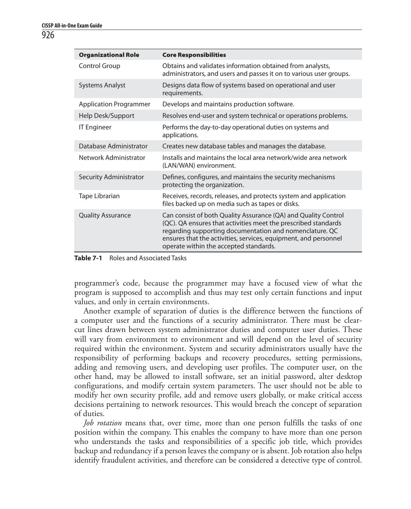
Control GroupObtains and validates information obtained from analysts,
programmer’s code, because the programmer may have a focused view of what the program is supposed to accomplish and thus may test only certain functions and input values, and only in certain environments. Another example of separation of duties is the difference between the functions of a computer user and the functions of a security administrator. There must be clearcut lines drawn between system administrator duties and computer user duties. These will vary from environment to environment and will depend on the level of security required within the environment. System and security administrators usually have the responsibility of performing backups and recovery procedures, setting permissions, adding and removing users, and developing user profiles. The computer user, on the other hand, may be allowed to install software, set an initial password, alter desktop configurations, and modify certain system parameters. The user should not be able to modify her own security profile, add and remove users globally, or make critical access decisions pertaining to network resources. This would breach the concept of separation of duties. Job rotationmeans that, over time, more than one person fulfills the tasks of one position within the company. This enables the company to have more than one person who understands the tasks and responsibilities of a specific job title, which provides backup and redundancy if a person leaves the company or is absent. Job rotation also helps identify fraudulent activities, and therefore can be considered a detective type of control.
If Keith has performed David’s position, Keith knows the regular tasks and routines that must be completed to fulfill the responsibilities of that job. Thus, Keith is better able to identify whether David does something out of the ordinary and suspicious. Least privilege and need to know are also administrative-type controls that should be implemented in an operations environment.Least privilegemeans an individual should have just enough permissions and rights to fulfill his role in the company and no more. If an individual has excessive permissions and rights, it could open the door to abuse of access and put the company at more risk than is necessary. For example, if Dusty is a technical writer for a company, he does not necessarily need to have access to the company’s source code. So, the mechanisms that control Dusty’s access to resources should not let him access source code. This would properly fulfill operational security controls that are in place to protect resources. Least privilege and need to know have a symbiotic relationship. Each user should have a need to know about the resources that she is allowed to access. If Mikela does not have a need to know how much the company paid last year in taxes, then her system rights should not include access to these files, which would be an example of exercising least privilege. The use of new identity management software that combines traditional directories; access control systems; and user provisioning within servers, applications, and systems is becoming the norm within organizations. This software provides the capabilities to ensure that only specific access privileges are granted to specific users, and it often includes advanced audit functions that can be used to verify compliance with legal and regulatory directives. A user’s access rights may be a combination of the least-privilege attribute, the user’s security clearance, the user’s need to know, the sensitivity level of the resource, and the mode in which the computer operates. A system can operate in different modes depending on the sensitivity of the data being processed, the clearance level of the users, and what those users are authorized to do. The security modes of operation describe the conditions under which the system actually functions. These are clearly defined in Chapter 5. Mandatory vacationsare another type of administrative control, though the name may sound a bit odd at first. Chapter 1 touched on reasons to make sure employees take their vacations. Reasons include being able to identify fraudulent activities and enabling job rotation to take place. If an accounting employee has been performing a salami attack by shaving off pennies from multiple accounts and putting the money into his own account, a company would have a better chance of figuring this out if that employee is required to take a vacation for a week or longer. When the employee is on vacation, another employee has to fill in. She might uncover questionable documents and clues of previous activities, or the company may see a change in certain patterns once the employee who is committing fraud is gone for a week or two. It is best for auditing purposes if the employee takes two contiguous weeks off from work to allow more time for fraudulent evidence to appear. Again, the idea behind mandatory vacations is that, traditionally, those employees who have committed fraud are usually the ones who have resisted going on vacation because of their fear of being found out while away.
Security and Network Personnel
The security administrator should not report to the network administrator because their responsibilities have different focuses. The network administrator is under pressure to ensure high availability and performance of the network and resources and to provide the users with the functionality they request. But many times this focus on performance and user functionality is at the cost of security. Security mechanisms commonly decrease performance in either processing or network transmission because there is more involved: content filtering, virus scanning, intrusion detection prevention, anomaly detection, and so on. Since these are not the areas of focus and responsibility of many network administrators, a conflict of interest could arise. The security administrator should be within a different chain of command from that of the network personnel to ensure that security is not ignored or assigned a lower priority. The following list lays out tasks that should be carried out by the security administrator, not the network administrator:
Implements and maintains security devices and softwareDespite some
- security vendors’ claims that their products will provide effective security with “set it and forget it” deployments, security products require monitoring and maintenance in order to provide their full value. Version updates and upgrades may be required when new capabilities become available to combat new threats, and when vulnerabilities are discovered in the security products themselves.
Carries out security assessmentsAs a service to the business that the security
- administrator is working to secure, a security assessment leverages the knowledge and experience of the security administrator to identify vulnerabilities in the systems, networks, software, and in-house developed products used by a business. These security assessments enable the business to understand the risks it faces and to make sensible business decisions about products and services it considers purchasing, and risk mitigation strategies it chooses to fund versus risks it chooses to accept, transfer (by buying insurance), or avoid (by not taking an action that isn’t worth the risk or risk mitigation cost).
Creates and maintains user profiles and implements and maintains access
- control mechanismsThe security administrator puts into practice the security policies of least privilege and oversees accounts that exist, along with the permissions and rights they are assigned.
Configures and maintains security labels in mandatory access control (MAC)
- environmentsMAC environments, mostly found in government and military agencies, have security labels set on data objects and subjects. Access decisions are based on comparing the object’s classification and the subject’s clearance, as covered extensively in Chapter 3. It is the responsibility of the security administrator to oversee the implementation and maintenance of these access controls.
Manages password policiesNew accounts must be protected from attackers
- who might know patterns used for passwords, or might find accounts that have been newly created without any passwords, and take over those accounts before
the authorized user accesses the account and changes the password. The security administrator operates automated new-password generators or manually sets new passwords, and then distributes them to the authorized user so attackers cannot guess the initial or default passwords on new accounts, and so new accounts are never left unprotected. Security administrators also ensure strong passwords are implemented and used throughout the organization’s information systems, periodically audit those passwords using password crackers or rainbow tables, ensure the passwords are changed periodically in accordance with the password policy, and handle user requests for password resets. Reviews audit logsWhile some of the strongest security protections come from
- preventive controls (such as firewalls that block unauthorized network activity), detective controls such as reviewing audit logs are also required. Suppose the firewall blocked 100,000 unauthorized access attempts yesterday. The only way to know if that’s a good thing or an indication of a bad thing is for the security administrator (or automated technology under his control) to review those firewall logs to look for patterns. If those 100,000 blocked attempts were the usual low-level random noise of the Internet, then things are (probably) normal; but if those attempts were advanced and came from a concentrated selection of addresses on the Internet, a more deliberate (and more possibly successful) attack may be underway. The security administrator’s review of audit logs detects bad things as they occur and, hopefully, before they cause real damage.
Accountability
Users’ access to resources must be limited and properly controlled to ensure that excessive privileges do not provide the opportunity to cause damage to a company and its resources. Users’ access attempts and activities while using a resource need to be properly monitored, audited, and logged. The individual user ID needs to be included in the audit logs to enforce individual responsibility. Each user should understand his responsibility when using company resources and be accountable for his actions. Capturing and monitoring audit logs helps determine if a violation has actually occurred or if system and software reconfiguration is needed to better capture only the activities that fall outside of established boundaries. If user activities were not captured and reviewed, it would be very hard to determine if users have excessive privileges or if there has been unauthorized access. Auditing needs to take place in a routine manner. Also, someone needs to review audit and log events. If no one routinely looks at the output, there really is no reason to create logs. Audit and function logs often contain too much cryptic or mundane information to be interpreted manually. This is why products and services are available that parse logs for companies and report important findings. Logs should be monitored and reviewed, through either manual or automatic methods, to uncover suspicious activity and to identify an environment that is shifting away from its original baselines. This is how administrators can be warned of many problems before they become too big and out of control.
When monitoring, administrators need to ask certain questions that pertain to the users, their actions, and the current level of security and access:
Are users accessing information and performing tasks that are not necessary for their
- job description?The answer would indicate whether users’ rights and permissions need to be reevaluated and possibly modified.
Are repetitive mistakes being made?The answer would indicate whether users need
- to have further training.
Do too many users have rights and privileges to sensitive or restricted data or resources?
- The answer would indicate whether access rights to the data and resources need to be reevaluated, whether the number of individuals accessing them needs to be reduced, and/or whether the extent of their access rights should be modified.
Clipping Levels
Companies can set predefined thresholds for the number of certain types of errors that will be allowed before the activity is considered suspicious. The threshold is a baseline for violation activities that may be normal for a user to commit before alarms are raised. This baseline is referred to as aclipping level. Once this clipping level has been exceeded, further violations are recorded for review. The goal of using clipping levels, auditing, and monitoring is to discover problems before major damage occurs and, at times, to be alerted if a possible attack is underway within the network. Most of the time, IDS software is used to track these activities and behavior patterns, because it would be too overwhelming for an individual to continually monitor stacks of audit logs and properly identify certain activity patterns. Once the clipping level is exceeded, the IDS can notify security personnel or just add this information to the logs, depending on how the IDS software is configured.
The security controls and mechanisms that are in place must have a degree of inconspicuousness. This enables the user to perform tasks and duties without having to go through extra steps because of the presence of the security controls. Inconspicuousness also prevents the users from knowing too much about the controls, which helps prevent them from figuring out how to circumvent security. If the controls are too obvious, anattacker can figure out how to compromise them more easily.
Assurance Levels
When products are evaluated for the level of trust and assurance they provide, many times operational assurance and life-cycle assurance are part of the evaluation process. Operational assuranceconcentrates on the product’s architecture, embedded features, and functionality that enable a customer to continually obtain the necessary level of protection when using the product. Examples of operational assurances examined in the
evaluation process are access control mechanisms, the separation of privileged and user program code, auditing and monitoring capabilities, covert channel analysis, and trusted recovery when the product experiences unexpected circumstances. Life-cycle assurancepertains to how the product was developed and maintained. Each stage of the product’s life cycle has standards and expectations it must fulfill before it can be deemed a highly trusted product. Examples of life-cycle assurance standards are design specifications, clipping-level configurations, unit and integration testing, configuration management, and trusted distribution. Vendors looking to achieve one of the higher security ratings for their products will have each of these issues evaluated and tested. The following sections address several of these types of operational assurance and lifecycle assurance issues, not only as they pertain to evaluation, but also as they pertain to a company’s responsibilities once the product is implemented. A product is just a tool for a company to use for functionality and security. It is up to the company to ensure that this functionality and security are continually available through responsible and proactive steps.
Operational Responsibilities
Operational security encompasses safeguards and countermeasures to protect resources, information, and the hardware on which the resources and information reside. The goal of operational security is to reduce the possibility of damage that could result from unauthorized access or disclosure by limiting the opportunities of misuse. Some organizations may have an actual operations department that is responsible for activities and procedures required to keep the network running smoothly and to keep productivity at a certain level. Other organizations may have a few individuals who are responsible for these things, but no structured department dedicated just to operations. Either way, the people who hold these responsibilities are accountable for certain activities and procedures and must monitor and control specific issues. Operations within a computing environment may pertain to software, personnel, and hardware, but an operations department often focuses on the hardware and software aspects. Management is responsible for employees’ behavior and responsibilities. The people within the operations department are responsible for ensuring that systems are protected and continue to run in a predictable manner. The operations department usually has the objectives of preventing recurring problems, reducing hardware and software failures to an acceptable level, and reducing the impact of incidents or disruption. This group should investigate any unusual or unexplained occurrences, unscheduled initial program loads, deviations from standards, or other odd or abnormal conditions that take place on the network.
Unusual or Unexplained Occurrences
Networks, and the hardware and software within them, can be complex and dynamic. At times, conditions occur that are at first confusing and possibly unexplainable. It is up to the operations department to investigate these issues, diagnose the problem, and come up with a logical solution.
One example could be a network that has hosts that are continually kicked off the network for no apparent reason. The operations team should conduct controlled troubleshooting to make sure it does not overlook any possible source for the disruption and that it investigates different types of problems. The team may look at connectivity issues between the hosts and the wiring closet, the hubs and switches that control their connectivity, and any possible cabling defects. The team should work methodically until it finds a specific problem. Central monitoring systems and event management solutions can help pinpoint the root cause of problems and save much time and effort in diagnosing problems.
Event management means that a product is being used to collect various logs throughout the network. The product identifies patterns and potentially malicious activities that a human would most likely miss because of the amount of data in the various logs.
Deviations from Standards
In this instance, “standards” pertains to computing service levels and how they are measured. Each device can have certain standards applied to it: the hours of time to be online, the number of requests that can be processed within a defined period of time, bandwidth usage, performance counters, and more. These standards provide a baseline that is used to determine whether there is a problem with the device. For example, if a device usually accepts approximately 300 requests per minute, but suddenly it is only able to accept 3 per minute, the operations team would need to investigate the deviation from the standard that is usually provided by this device. The device may be failing or under a denial-of-service (DoS) attack, or be subject to legitimate business-use cases that had not been foreseen when the device was first implemented. Sometimes the standard needs to be recalibrated so it portrays a realistic view of the service level the device can provide. If a server was upgraded from 4 to 16 cores, the memory was quadrupled, the swap file was increased, and three extra hard drives were added, the service level of this server should be reevaluated.
Unscheduled Initial Program Loads (aka Rebooting)
Initial program load (IPL)is a mainframe term for loading the operating system’s kernel into the computer’s main memory. On a personal computer, booting into the operating system is the equivalent to IPLing. This activity takes place to prepare the computer for user operation. IPLs on workstations are fairly normal at the start or end of a business day (depending on the organization), but should be pretty rare during the workday itself. On servers and appliances, IPLs should almost certainly be scheduled or, at least, intentionally triggered by an authorized person or process. The operations team should investigate computers that reboot for no reason. In the best case, these are unscheduled reboots caused by well-intentioned personnel who simply failed to coordinate their actions with the operations team. The event could also be the result of faulty configurations, software, or hardware on that system, which should
be addressed before it leads to serious damage. Finally, and most troublesome, is the possibility that the reboot was triggered by a successful attacker who may have gained a foothold in that system. As you can see from this short list of causes, these events may start off being investigated by the network operations team and then be handed over to the security operations team if the source appears to be a violation of the system’s security.
Configuration Management
Configuration managementis the process of establishing and maintaining effective system controls, which is also part of operational security. Within the operating system itself, certain controls must be in place to ensure that instructions are being executed in the correct security context. The system has mechanisms that restrict the execution of certain types of instructions so they can take place only when the operating system is in a privileged or supervisor state. This protects the overall security and state of the system and helps ensure it runs in a stable and predictable manner. Operational procedures need to be developed that indicate what constitutes the proper operation of a system or resource. This would include a system startup and shutdown sequence, error handling, and restoration from a known good source. An operating system does not provide direct access to hardware by processes of lower privilege, which are usually processes used by user applications. If a program needs to send instructions to hardware devices, the request is passed off to a process of higher privilege. To execute privileged hardware instructions, a process must be running in a restrictive and protective state. This is an integral part of the operating system’s architecture, and the determination of which processes can submit what type of instructions is made based on the operating system’s control tables. Many input/output (I/O) instructions are defined as privileged and can be executed only by the operating system kernel processes. When a user program needs to interact with any I/O activities, it must notify the system’s core privileged processes that work at the inner rings of the system. Either these processes (called system services) authorize the user program processes to perform these actions and temporarily increase their privileged state, or the system’s processes are used to complete the request on behalf of the user program. The following sections cover important aspects of configuration management dealing specifically with system controls.
Trusted Recovery
When an operating system or application crashes or freezes, it should not put the system in any type of insecure state. The usual reason for a system crash in the first place is that it encountered something it perceived as insecure or did not understand and decided it was safer to freeze, shut down, or reboot than to perform the current activity. An operating system’s response to a type of failure can be classified as one of the following:
System reboot
- Emergency system restart
- System cold start
- Asystem reboottakes place after the system shuts itself down in a controlled manner in response to a kernel failure. If the system finds inconsistent data structures or if there is not enough space in some critical tables, a system reboot may take place. This releases resources and returns the system to a more stable and safe state. Anemergency system restarttakes place after a system failure happens in an uncontrolled manner. This could be a kernel or media failure caused by lower-privileged user processes attempting to access memory segments that are restricted. The system sees this as an insecure activity that it cannot properly recover from without rebooting. The kernel and user objects could be in an inconsistent state, and data could be lost or corrupted. The system thus goes into a maintenance mode and recovers from the actions taken. Then it is brought back up in a consistent and stable state. Asystem cold starttakes place when an unexpected kernel or media failure happens and the regular recovery procedure cannot recover the system to a more consistent state. The system, kernel, and user objects may remain in an inconsistent state while the system attempts to recover itself, and intervention may be required by the user or administrator to restore the system. It is important to ensure that the system does not enter an insecure state when it is affected by any of these types of problems, and that it shuts down and recovers properly to a secure and stable state.
After a System Crash
When systems go down (and they will), it is important that the operations personnel know how to troubleshoot and fix the problem. The following are some steps that could be taken:
1.Enter into single user or safe mode.When a system cold start takes place, due to the system’s inability to automatically recover itself to a secure state, the administrator must be involved. The system either will automatically boot up only so far as a “single user mode” or must be manually booted to a “recovery console.” These are modes wherein the systems do not start services for users or the network, file systems typically remain unmounted, and only the local console is accessible. As a result, the administrator must either physically be at the console or have deployed external technology such as secured dial-in/dial-back modems attached to serial console ports or remote KVM (keyboard, video, mouse) switches attached to graphic consoles. 2.Fix issue and recover files.In single user mode, the administrator salvages file systems from damage that may have occurred as a result of the unclean, sudden shutdown of the system and then attempts to identify the cause of the shutdown to prevent it from recurring. Sometimes the administrator will also have to roll back or roll forward databases or other applications in single user mode. Other times, these will occur automatically when the administrator brings the system out of single user mode, or will be performed manually by the system administrator before applications and services return to their normal state.
3.Validate critical files and operations.If the investigation into the cause of the sudden shutdown suggests corruption has occurred (for example, through software or hardware failure, or user/administrator reconfiguration, or some kind of attack), then the administrator must validate the contents of configuration files and ensure system files (operating system program files, shared library files, possibly application program files, and so on) are consistent with their expected state. Cryptographic checksums of these files, verified by programs such as Tripwire, can perform validations of system files. The administrator must verify the contents of system configuration files against the system documentation.
Security Concerns
When an operating system moves into any type of unstable state, there are always concerns that the system is vulnerable in some fashion. The system needs to be able to protect itself and the sensitive data that it maintains. The following lists just a few of the security issues that should be addressed properly in a trusted recovery process.
Protect the bootup sequence (C:, A:, D:)To ensure that systems recover to
- a secure state, the design of the system must prevent an attacker from changing the bootup sequence of the system. For example, on a Windows workstation or server, only authorized users should have access to BIOS settings to allow the user to change the order in which bootable devices are checked by the hardware. If the approved boot order is C: (the main hard drive) only, with no other hard drives and no removable devices (for example CD/DVD, or USB) allowed, then the hardware settings must prohibit the user (and the attacker) from changing those device selections and the order in which they are used. If the user or attacker can change the bootable device selections or order and can cause the system to reboot (which is always possible with physical access to a system), they can boot their own media and attack the software and/or data on the system.
Do not allow bypassing of writing actions to system logsThrough
- separation of duties and access controls, system logs and system state files must bepreserved against attempts by users/attackers to hide their actions or change the state to which the system will next restart. If any system configuration file can be changed by an unauthorized user, and then the user can find a way to cause the system to restart, the new—possibly insecure—configuration will take effect.
Do not allow system forced shutdownsTo reduce the possibility of an
- unauthorized configuration change taking effect, and to reduce the possibility of denial of service through an inappropriate shutdown, only administrators should have the ability to instruct critical systems to shut down. Obviously, this will not stop attackers who have exploited privileged accounts or escalated their privileges, but it does raise the bar for a significant class of attacks.
Do not allow outputs to be reroutedDiagnostic output from a system can
- contain sensitive information. The diagnostic log files, including console output, must be protected by access controls from being read by anyone other than authorized administrators. Unauthorized users must not be able to redirect the destination of diagnostic logs and console output.
Input and Output Controls
What is input into an application has a direct correlation to what that application outputs. Thus, input needs to be monitored for errors and suspicious activity. If a checker at a grocery store continually puts in the amount of $1.20 for each prime rib steak customers buy, the store could eventually lose a good amount of money. This activity could be done either by accident, which would require proper retraining, or on purpose, which would require disciplinary actions. The applications themselves also need to be programmed to only accept certain types of values input into them and to do some type of logic checking about the received input values. If an application requests the user to input a mortgage value of a property and the user enters 25 cents, the application should ask the user for the value again so that wasted time and processing is not done on an erroneous input value. Also, if an application has a field that holds only monetary values, a user should not be able to enter “bob” in the field without the application barking. All the controls mentioned in the previous sections must be in place and must continue to function in a predictable and secure fashion to ensure that the systems, applications, and the environment as a whole continue to be operational. Let’s look at a few more I/O issues that can cause problems if not dealt with properly:
Data entered into a system should be in the correct format and validated to
- ensure that it is not malicious.
Transactions should beatomic, meaning that they cannot be interrupted between
- the input being provided and the generation of the output. (Atomicity protects against a class of attacks called time-of-check/time-of-use, or TOCTOU.)
Transactions must be timestamped and logged.
- Safeguards should be implemented to ensure output reaches the proper
- destinations securely:
Cryptographic hashes or, better yet, message authentication codes (which are
- digitally signed hashes) should be used to ensure the integrity of critical files.
The output should be clearly labeled to indicate the sensitivity or classification
- of the data.
Once output is created, it must have the proper access controls implemented,
- no matter what its format (paper, digital, tape).
If a report has no information (nothing to report), it should contain “no output.”
- Some people get confused by the last bullet item. The logical question would be, “If there is nothing to report, why generate a report with no information.” Let’s say each Friday you send your boss a report outlining that week’s security incidents and mitigation steps. One Friday, she receives no report from you. Instead of forcing others to chase you down or, worse yet, assume there was no report (when in fact there was, but it was intercepted or compromised), stating “no output” will assure the recipients that the task was indeed carried out. Another type of input to a system could be ActiveX components, plug-ins, updated configuration files, or device drivers. It is best if these are cryptographically signed by
the trusted authority before distribution. This allows the administrator manually, and/ or the system automatically, to validate that the files are from the trusted authority (manufacturer, vendor, supplier) before the files are put into production on a system. All current versions of Apple, Linux, and Microsoft operating systems support code signing, whereby the operating system warns the user if a device driver or other software has not been signed by an entity with a certificate from a trusted certificate authority. Note that the fact that an application installer or device driver is signed does not mean it is safe or reliable—it only means the user has a high degree of assurance of the origin of the software or driver. If the user does not trust the entity (the company or developer) that signed the software or driver, or the software or driver is not signed at all, this should be a red flag that stops the user from using the software or driver until its security and reliability can be confirmed by some other channel.
Many users routinely disregard warnings concerning unsigned code. Whenever possible, such code should be prohibited by using system policies that cannot be overridden by the users.
System Hardening
A recurring theme in security is that controls may be generally described as being physical, administrative, or technical. It has been said that if unauthorized physical access can be gained to a security-sensitive item, then the security of the item is virtually impossible to ensure. (This is why all data on portable devices should be encrypted.) In other words, “If I can put my hands on the computer, I can own it.” Obviously, the data center itself must be physically secured. This could include guards, gates, fences, barbed wire, lights, locked doors, and so on. This creates a strong physical security perimeter around the facilities where valuable information is stored. Across the street from that data center may be an office building in which hundreds or thousands of employees sit day after day, accessing the valuable information from their desktop PCs, laptops, and handheld devices over a variety of networks. Convergence of data and voice means devices such as telephones may be plugged into this same network infrastructure. In an ideal world, the applications and methods by which the information is accessed would secure the information against any network attack; however, the world is not ideal, and it is the security professional’s responsibility to secure valuable information in the real world. Therefore, the physical components that make up those networks through which the valuable information flows also must be secured:
Wiring closets should be locked.
- Network switches and hubs, when it is not practical to place them in locked
- wiring closets, should be inside locked cabinets.
Network ports in public places (for example, kiosk computers and even
- telephones) should be made physically inaccessible.
Laptops, “thumb drives” (USB removable storage devices), portable hard drives, mobile devices, and even camera memory cards all can contain large amounts of information,
some of it sensitive and valuable. Users must know where these devices are at all times, and store them securely when not actively in use. Laptops disappear from airport security checkpoints; thumb drives are tiny and get left behind and forgotten; and mobile devices are stolen every day. So if physical security is in place, do we really still need technical security? Yes. A best practice for managing and securing workstations is to develop a standard hardened image, sometimes called a Gold Master (GM). To build a GM, you start by determining which applications and services are needed by all users of that system image. You then develop secure configurations for all software, and ensure that they still provide all required user functionality and interoperability with the rest of the network. Next, you subject the image to thorough vulnerability scanning and, ideally, penetration testing. Finally, you roll out the image by cloning it onto the hard drives of all your users’ workstations. As changes to this baseline are subsequently required (for instance, because a new application is needed in the organization), you go back to step one and start building a new version of the GM all over again. An application that is not installed, or a system service that is not enabled, cannot be attacked. Even a disabled system service may include vulnerable components that an advanced attack could leverage, so it is better for unnecessary components to not exist at all in the environment. Those components that cannot be left off of a system at installation time, and that cannot be practically removed due to the degree of integration into a system, should be disabled so as to make them impractical to re-enable by anyone except an authorized system administrator. Every installed application, and especially every operating service, must be part of the overall configuration management database so vulnerabilities in these components may be tracked. Components that can be neither left off nor disabled must be configured to the most conservative practical setting that still allows the system to operate efficiently for those business purposes that require the component’s presence in the system. Database engines, for example, should run as an unprivileged user, rather than as root or SYSTEM. If a system will run multiple application services, each one should run under its own leastprivileged user ID so a compromise to one service on the system does not grant access to the other services on the system. Just as totally unnecessary services should be left off of a system, unnecessary parts of a single service should be left uninstalled if possible, and disabled otherwise.
Locked-down systems are referred to as bastion hosts.
Licensing Issues
Companies have the ethical obligation to use only legitimately purchased software applications. Software makers and their industry representation groups such as the Business Software Alliance (BSA) use aggressive tactics to target companies that use pirated (illegal) copies of software.
Companies are responsible for ensuring that software in the corporate environment is not pirated, and that the licenses (that is, license counts) are being abided by. An operations or configuration management department is often where this capability is located in a company. Automated asset management systems, or more general system management systems, may be able to report on the software installed throughout an environment, including a count of installations of each. These counts should be compared regularly (perhaps quarterly) against the inventory of licensed applications and counts of licenses purchased for each application. Applications that are found in the environment and for which no license is known to have been purchased by the company, or applications found in excess of the number of licenses known to have been purchased, should be investigated. When applications are found in the environment for which the authorized change control and supply chain processes were not followed, they need to be brought under control, and the business area that acquired the application outside of the approved processes must be educated as to the legal and information security risks their actions may pose to the company. Many times, the business unit manager would need to sign a document indicating he understands this risk and is personally accepting it. Applications for which no valid business need can be found should be removed, and the person who installed them should be educated and warned that future such actions may result in more severe consequences—like termination. This may sound extreme, but installing pirated software is not only an ethical violation, but also both a liability risk and a potential vector for introducing malware. Organizations that use or tolerate unlicensed products are sometimes turned in by disgruntled employees as an act of revenge. Companies should have an acceptable use policy (AUP), which indicates what software users can install and informs users that the environment will be surveyed from time to time to verify compliance. Technical controls should be emplaced to prevent unauthorized users from being able to install unauthorized software in the environment.
Remote Access Security
Remote access is a major component of normal operations, and a great enabler of organizational resilience in the face of certain types of disasters. If a regional disaster makes it impractical for large numbers of employees to commute to their usual work site, but the data center—or a remote backup data center—remains operational, remote access to computer resources can allow many functions of a company to continue almost as usual. Remote access can also be a way to reduce normal operational costs by reducing the amount of office space that must be owned or rented, furnished, cleaned, cooled and heated, and provided with parking, since employees will instead be working from home. Remote access may also be the only way to enable a mobile workforce, such as traveling salespeople, who need access to company information while in several different cities each week to meet with current and potential customers.
As with all things that enable business and bring value, remote access also brings risks. Is the person logging in remotely who he claims to be? Is someone physically or electronically looking over his shoulder, or tapping the communication line? Is the client device from which he is performing the remote access in a secure configuration, or has it been compromised by spyware, Trojan horses, and other malicious code? This has been a thorn in the side of security groups and operation departments for basically every company. It is dangerous to allow computers to be able to directly connect to the corporate network without knowing if they are properly patched, if the virus signatures are updated, if they are infected with malware, and so on. This has been a direct channel used by many attackers to get to the heart of an organization’s environment.Becauseofthisneededprotection,vendorshavebeendeveloping technology to quarantine systems and ensure they are properly secured before allowing them access to corporate assets.
Remote Systems Administration
To gain the benefits of remote access without taking on unacceptable risks, remote administration needs to take place securely. The following are just a few of the guidelines to use:
For best security, require a virtual private network (VPN) connection
- protected by two-factor authentication for any internal system access from an external (e.g., Internet) host.
Commands and data should not take place in cleartext (that is, they should
- be encrypted), even if using a VPN to remotely connect to the network. Forexample, Secure Shell (SSH) should be used.
Strong authentication should be in place for any administration activities.
- Truly critical systems should be administered locally instead of remotely.
- Only a small number of administrators should be able to carry out this
- remote functionality.
Physical Security
Just as important as remote access is local access, for which the first line of defense is perimeter control at the site location to prevent unauthorized access to the facility. As any other defensive technique, physical security should be implemented by using a layered approach. For example, before an intruder can get to the written recipe for your company’s secret barbeque sauce, she will need to climb or cut a fence, slip by a security guard, pick a door lock, circumvent a biometric access control reader that protects access to an internal room, and then break into the safe that holds the recipe. The idea is that if an attacker breaks through one control layer, there will be others in her way before she can obtain the company’s crown jewels.
It is also important to have a diversity of controls. For example, if one key works on four different door locks, the intruder has to obtain only one key. Each entry should have its own individual key or authentication combination. This defense model should work in two main modes: one mode during normal facility operations and another mode during the time the facility is closed. When the facility is closed, all doors should be locked with monitoring mechanisms in strategic positions to alert security personnel of suspicious activity. When the facility is in operation, security gets more complicated because authorized individuals need to be distinguished from unauthorized individuals. Perimeter security deals with facility and personnel access controls, external boundary protection mechanisms, intrusion detection, and corrective actions. The following sections describe the elements that make up these categories.
Facility Access Control
Access control needs to be enforced through physical and technical components when it comes to physical security. Physical access controls use mechanisms to identify individuals who are attempting to enter a facility or area. They make sure the right individuals get in and the wrong individuals stay out, and provide an audit trail of these actions. Having personnel within sensitive areas is one of the best security controls because they can personally detect suspicious behavior. However, they need to be trained on what activity is considered suspicious and how to report such activity. Before a company can put into place the proper protection mechanisms, it needs to conduct a detailed review to identify which individuals should be allowed into what areas. Access control points can be identified and classified as external, main, and secondary entrances. Personnel should enter and exit through a specific entry, deliveries should be made to a different entry, and sensitive areas should be restricted. Figure 7-1 illustrates the different types of access control points into a facility. After a company has identified and classified the access control points, the next step is to determine how to protect them.
Locks
Locks are inexpensive access control mechanisms that are widely accepted and used. They are considereddelayingdevices to intruders. The longer it takes to break or pick a lock, the longer a security guard or police officer has to arrive on the scene if the intruder has been detected. Almost any type of a door can be equipped with a lock, but keys can be easily lost and duplicated, and locks can be picked or broken. If a company depends solely on a lock-and-key mechanism for protection, an individual who has the key can come and go as he likes without control and can remove items from the premises without detection. Locks should be used as part of the protection scheme, but should not be the sole protection scheme. Locks vary in functionality. Padlocks can be used on chained fences, preset locks are usually used on doors, and programmable locks (requiring a combination to unlock) are used on doors or vaults. Locks come in all types and sizes. It is important to have the right type of lock so it provides the correct level of protection.
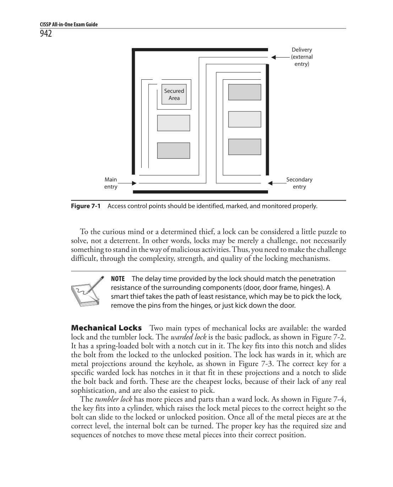
Figure 7-1Access control points should be identified, marked, and monitored properly.
To the curious mind or a determined thief, a lock can be considered a little puzzle to solve, not a deterrent. In other words, locks may be merely a challenge, not necessarily something to stand in the way of malicious activities. Thus, you need to make the challenge difficult, through the complexity, strength, and quality of the locking mechanisms.
The delay time provided by the lock should match the penetration resistance of the surrounding components (door, door frame, hinges). A smart thief takes the path of least resistance, which may be to pick the lock, remove the pins from the hinges, or just kick down the door.
Mechanical LocksTwo main types of mechanical locks are available: the warded lock and the tumbler lock. Thewarded lockis the basic padlock, as shown in Figure 7-2. It has a spring-loaded bolt with a notch cut in it. The key fits into this notch and slides the bolt from the locked to the unlocked position. The lock has wards in it, which are metal projections around the keyhole, as shown in Figure 7-3. The correct key for a specific warded lock has notches in it that fit in these projections and a notch to slide the bolt back and forth. These are the cheapest locks, because of their lack of any real sophistication, and are also the easiest to pick. Thetumbler lockhas more pieces and parts than a ward lock. As shown in Figure 7-4, the key fits into a cylinder, which raises the lock metal pieces to the correct height so the bolt can slide to the locked or unlocked position. Once all of the metal pieces are at the correct level, the internal bolt can be turned. The proper key has the required size and sequences of notches to move these metal pieces into their correct position.
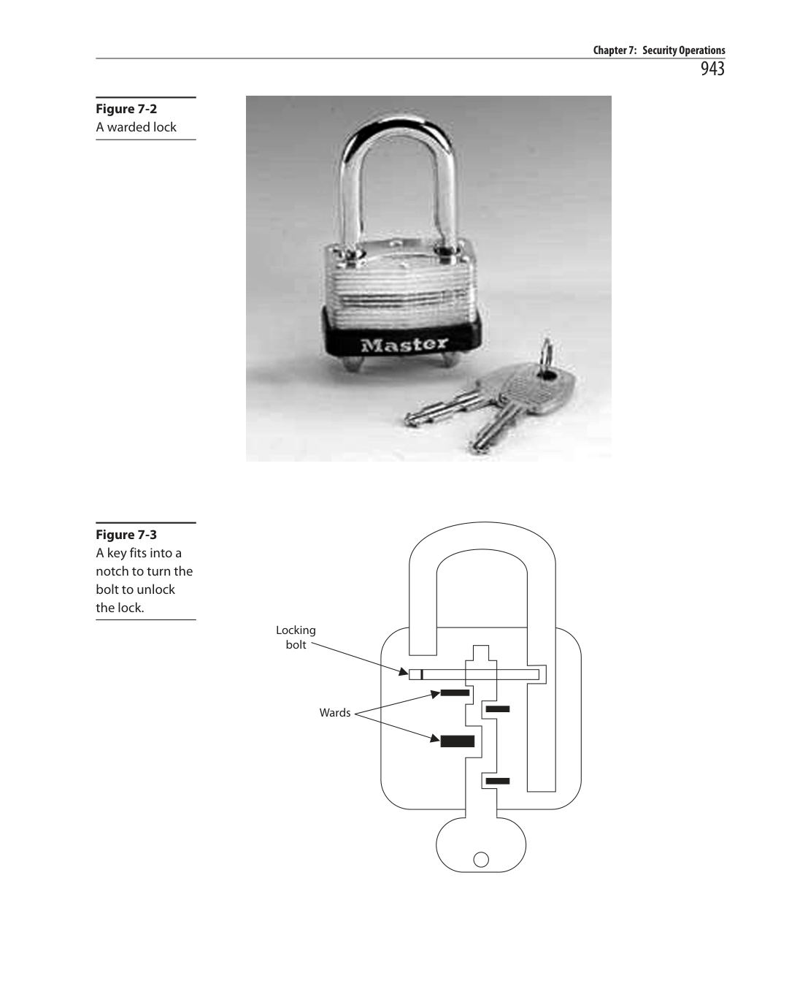
Figure 7-2
Figure 7-4
The three types of tumbler locks are the pin tumbler, wafer tumbler, and lever tumbler. Thepin tumblerlock, shown in Figure 7-4, is the most commonly used tumbler lock. The key has to have just the right grooves to put all the spring-loaded pins in the right position so the lock can be locked or unlocked. Wafer tumblerlocks (also called disc tumbler locks) are the small, round locks you usually see on file cabinets. They use flat discs (wafers) instead of pins inside the locks. They often are used as car and desk locks. This type of lock does not provide much protection because it can be easily circumvented.
Some locks have interchangeable cores, which allow for the core of the lock to be taken out. You would use this type of lock if you wanted one key to open several locks. You would just replace all locks with the same core. Combination locks, of course, require the correct combination of numbers to unlock them. These locks have internal wheels that have to line up properly before being unlocked. A user spins the lock interface left and right by so many clicks, which lines up the internal wheels. Once the correct turns have taken place, all the wheels are in the right position for the lock to release and open the door. The more wheels within the locks, the more protection provided. Electronic combination locks do not use internal wheels, but rather have a keypad that allows a person to type in the combination instead of turning a knob with a combination faceplate. An example of an electronic combination lock is shown in Figure 7-5.
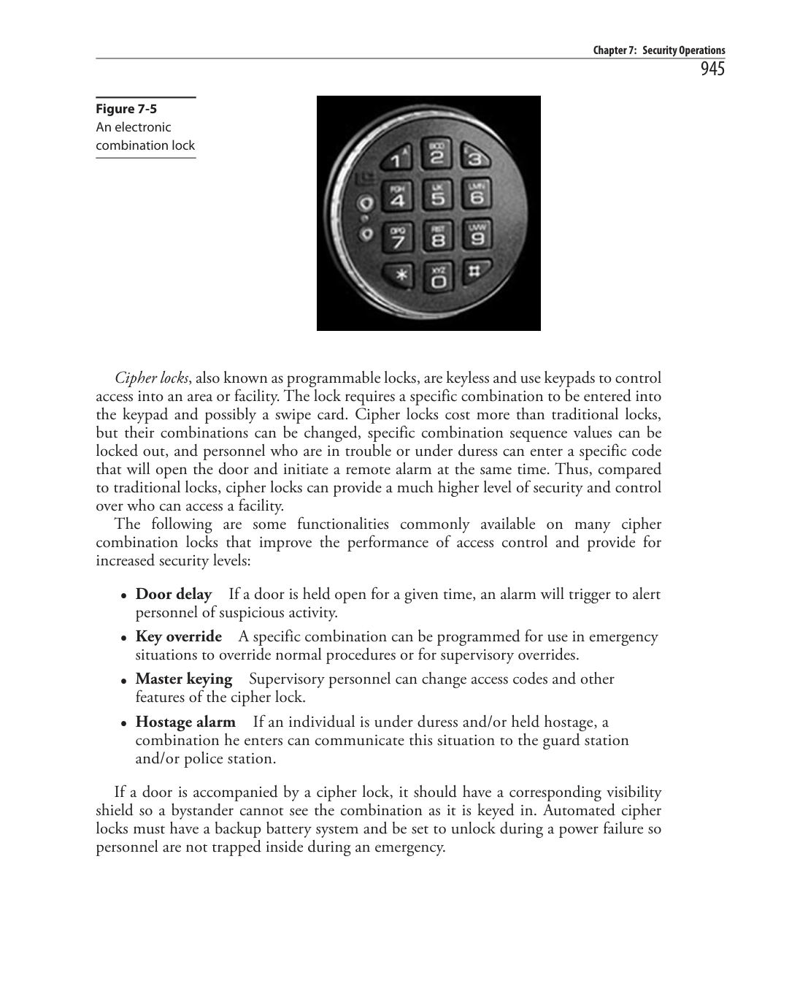
Figure 7-5
Cipher locks, also known as programmable locks, are keyless and use keypads to control access into an area or facility. The lock requires a specific combination to be entered into the keypad and possibly a swipe card. Cipher locks cost more than traditional locks, but their combinations can be changed, specific combination sequence values can be locked out, and personnel who are in trouble or under duress can enter a specific code that will open the door and initiate a remote alarm at the same time. Thus, compared to traditional locks, cipher locks can provide a much higher level of security and control over who can access a facility. Thefollowingaresomefunctionalitiescommonlyavailableonmanycipher combination locks that improve the performance of access control and provide for increased security levels:
Door delayIf a door is held open for a given time, an alarm will trigger to alert
- personnel of suspicious activity.
Key overrideA specific combination can be programmed for use in emergency
- situations to override normal procedures or for supervisory overrides.
Master keyingSupervisory personnel can change access codes and other
- features of the cipher lock.
Hostage alarmIf an individual is under duress and/or held hostage, a
- combination he enters can communicate this situation to the guard station and/or police station.
If a door is accompanied by a cipher lock, it should have a corresponding visibility shield so a bystander cannot see the combination as it is keyed in. Automated cipher locks must have a backup battery system and be set to unlock during a power failure so personnel are not trapped inside during an emergency.
It is important to change the combination of locks and to use random combination sequences. Often, people do not change their combinations or clean the keypads, which allows an intruder to know what key values are used in the combination, because they are the dirty and worn keys. The intruder then just needs to figure out the right combination of these values. Some cipher locks require all users to know and use the same combination, which does not allow for any individual accountability. Some of the more sophisticated cipher locks permit specific codes to be assigned to unique individuals. This provides more accountability, because each individual is responsible for keeping his access code secret, and entry and exit activities can be logged and tracked. These are usually referred to assmart locks, because they are designed to allow only authorized individuals access at certain doors at certain times.
Hotel key cards are also known as smart cards. The access code on the card can allow access to a hotel room, workout area, business area, and better yet—the mini bar.
Device LocksUnfortunately, hardware has a tendency to “walk away” from facilities; thus, device locks are necessary to thwart these attempts. Cable locks consist of a vinylcoated steel cable that can secure a computer or peripheral to a desk or other stationary components, as shown in Figure 7-6.
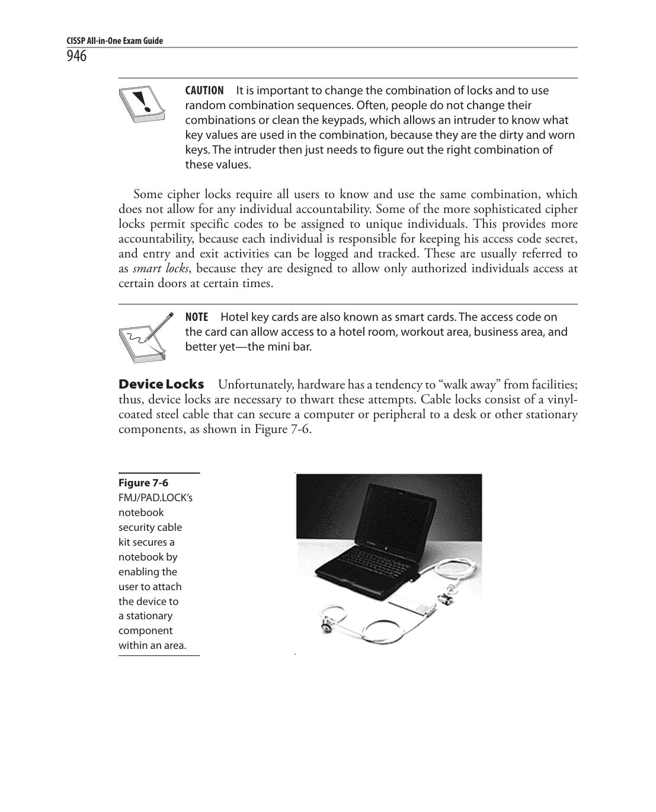
Figure 7-6
The following are some of the device locks available and their capabilities:
Switch controlsCover on/off power switches
- Slot locksSecure the system to a stationary component by the use of steel cable
- that is connected to a bracket mounted in a spare expansion slot
Port controlsBlock access to disk drives or unused serial or parallel ports
- Peripheral switch controlsSecure a keyboard by inserting an on/off switch
- between the system unit and the keyboard input slot
Cable trapsPrevent the removal of input/output devices by passing their cables
- through a lockable unit
Administrative ResponsibilitiesIt is important for a company not only to choose the right type of lock for the right purpose, but also to follow proper maintenance and procedures. Keys should be assigned by facility management, and this assignment should be documented. Procedures should be written out detailing how keys are to be assigned, inventoried, and destroyed when necessary, and what should happen if and when keys are lost. Someone on the company’s facility management team should be assigned the responsibility of overseeing key and combination maintenance. Most organizations have master keys and submaster keys for the facility management staff. A master key opens all the locks within the facility, and the submaster keys open one or more locks. Each lock has its own individual unique keys as well. So if a facility has 100 offices, the occupant of each office can have his or her own key. A master key allows access to all offices for security personnel and for emergencies. If one security guard is responsible for monitoring half the facility, the guard can be assigned one of the submaster keys for just those offices. Since these master and submaster keys are powerful, they must be properly guarded and not widely shared. A security policy should outline what portions of the facility and which device types need to be locked. As a security professional, you should understand what type of lock is most appropriate for each situation, the level of protection provided by various types of locks, and how these locks can be circumvented.
Circumventing LocksEach lock type has corresponding tools that can be used to pick it (open it without the key). Atension wrenchis a tool shaped like an L and is used to apply tension to the internal cylinder of a lock. The lock picker uses a lock pick to manipulate the individual pins to their proper placement. Once certain pins are “picked” (put in their correct place), the tension wrench holds these down while the lock picker figures out the correct settings for the other pins. After the intruder determines the proper pin placement, the wrench is used to then open the lock. Intruders may carry out another technique, referred to asraking. To circumvent a pin tumbler lock, a lock pick is pushed to the back of the lock and quickly slid out while providing upward pressure. This movement makes many of the pins fall into place.
Atension wrench is also put in to hold the pins that pop into the right place. If all the pins do not slide to the necessary height for the lock to open, the intruder holds the tension wrench and uses a thinner pick to move the rest of the pins into place.
Lock Strengths
Basically, three grades of locks are available:
Grade 1Commercial and industrial use
- Grade 2Heavy-duty residential/light-duty commercial
- Grade 3Residential/consumer
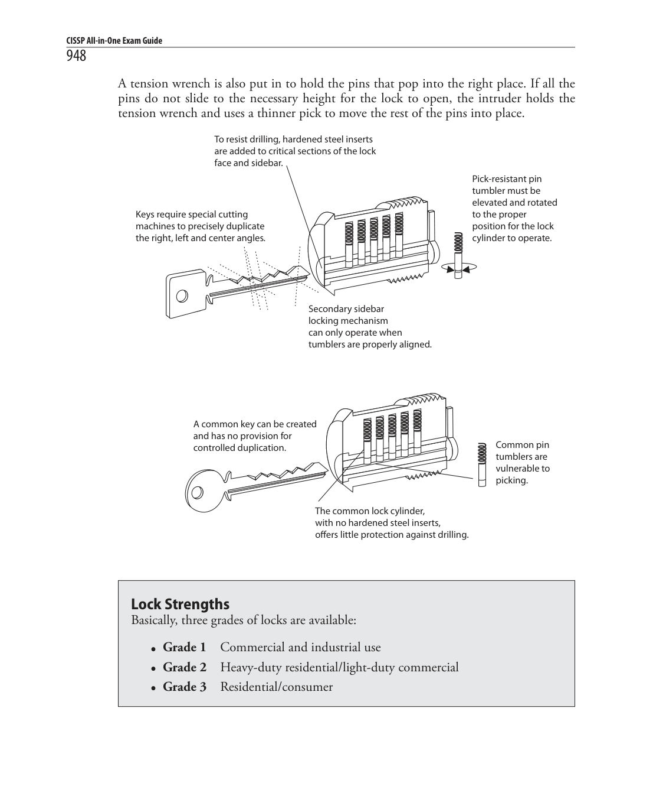
Diagram (p. 982)
The cylinders within the locks fall into three main categories:
Low securityNo pick or drill resistance provided (can fall within any of
- the three grades of locks)
Medium securityA degree of pick resistance protection provided
- (usestighter and more complex keyways [notch combination]; can fall within any of the three grades of locks)
High securityPick resistance protection through many different
- mechanisms (only used in grade 1 and 2 locks)
Lock bumpingis a tactic that intruders can use to force the pins in a tumbler lock to their open position by using a special key called abump key. The stronger the material that makes up the lock, the smaller the chance that this type of lock attack would be successful. Now, if this is all too much trouble for the intruder, she can just drill the lock, use bolt cutters, attempt to break through the door or the doorframe, or remove the hinges. There are just so many choices for the bad guys.
Personnel Access Controls
Proper identification verifies whether the person attempting to access a facility or area should actually be allowed in. Identification and authentication can be verified by matching an anatomical attribute (biometric system), using smart or memory cards (swipe cards), presenting a photo ID to a security guard, using a key, or providing a card and entering a password or PIN. A common problem with controlling authorized access into a facility or area is called piggybacking. This occurs when an individual gains unauthorized access by using someone else’s legitimate credentials or access rights. Usually an individual just follows another person closely through a door without providing any credentials. The best preventive measures against piggybacking are to have security guards at access points and to educate employees about good security practices. If a company wants to use a card badge reader, it has several types of systems to choose from. Individuals usually have cards that have embedded magnetic strips that contain access information. The reader can just look for simple access information within the magnetic strip, or it can be connected to a more sophisticated system that scans the information, makes more complex access decisions, and logs badge IDs and access times. If the card is a memory card, then the reader just pulls information from it and makes an access decision. If the card is a smart card, the individual may be required to enter a PIN or password, which the reader compares against the information held within the card or in an authentication server. These access cards can be used withuser-activated readers, which just means the user actually has to do something—swipe the card or enter a PIN.System sensing access control
readers, also calledtransponders, recognize the presence of an approaching object within a specific area. This type of system does not require the user to swipe the card through the reader. The reader sends out interrogating signals and obtains the access code from the card without the user having to do anything.
Electronic access control (EAC) tokensis a generic term used to describe proximity authentication devices, such as proximity readers, programmable locks, or biometric systems, which identify and authenticate users before allowing them entrance into physically controlled areas.
External Boundary Protection Mechanisms
Proximity protection components are usually put into place to provide one or more of the following services:
Control pedestrian and vehicle traffic flows
- Various levels of protection for different security zones
- Buffers and delaying mechanisms to protect against forced entry attempts
- Limit and control entry points
- These services can be provided by using the following control types:
Access control mechanismsLocks and keys, an electronic card access system,
- personnel awareness
Physical barriersFences, gates, walls, doors, windows, protected vents,
- vehicular barriers
Intrusion detectionPerimeter sensors, interior sensors, annunciation
- mechanisms
AssessmentGuards, CCTV cameras
- ResponseGuards, local law enforcement agencies
- DeterrentsSigns, lighting, environmental design
- Several types of perimeter protection mechanisms and controls can be put into place to protect a company’s facility, assets, and personnel. They can deter would-be intruders, detect intruders and unusual activities, and provide ways of dealing with these issues when they arise. Perimeter security controls can be natural (hills, rivers) or manmade (fencing, lighting, gates). Landscaping is a mix of the two. In Chapter 3, we explored Crime Prevention Through Environmental Design (CPTED) and how this approach is used to reduce the likelihood of crime. Landscaping is a tool employed in the CPTED method. Sidewalks, bushes, and created paths can point people to the correct entry points, and trees and spiky bushes can be used as natural barriers. These bushes and trees should be placed such that they cannot be used as ladders or accessories to gain unauthorized access to unapproved entry points. Also, there should not be an overwhelming number of trees
and bushes, which could provide intruders with places to hide. In the following sections, we look at the manmade components that can work within the landscaping design.
Fencing
Fencing can be quite an effective physical barrier. Although the presence of a fence may only delay dedicated intruders in their access attempts, it can work as a psychological deterrent by telling the world that your company is serious about protecting itself. Fencing can provide crowd control and helps control access to entrances and facilities. However, fencing can be costly and unsightly. Many companies plant bushes or trees in front of the fencing that surrounds their buildings for aesthetics and to make the building less noticeable. But this type of vegetation can damage the fencing over time or negatively affect its integrity. The fencing needs to be properly maintained, because if a company has a sagging, rusted, pathetic fence, it is equivalent to telling the world that the company is not truly serious and disciplined about protection. But a nice, shiny, intimidating fence can send a different message—especially if the fencing is topped with three rungs of barbed wire. When deciding upon the type of fencing, several factors should be considered. The gauge of the metal should correlate to the types of physical threats the company would most likely face. After carrying out the risk analysis (covered in Chapter 1), the physical security team should understand the probability of enemies attempting to cut the fencing, drive through it, or climb over or crawl under it. Understanding these threats will help the team determine the necessary gauge and mesh sizing of the fence wiring. The risk analysis results will also help indicate what height of fencing the organization should implement. Fences come in varying heights, and each height provides a different level of security:
Fencesthree to four feet highonly deter casual trespassers.
- Fencessix to seven feet highare considered too high to climb easily.
- Fenceseight feet high(possibly with strands of barbed or razor wire at the top)
- means you are serious about protecting your property. They often deter the more determined intruder.
The barbed wire on top of fences can be tilted in or out, which also provides extra protection. If the organization is a prison, it would have the barbed wire on top of the fencing pointed in, which makes it harder for prisoners to climb and escape. If the organization is a military base, the barbed wire would be tilted out, making it harder for someone to climb over the fence and gain access to the premises. Critical areas should have fences at least eight feet high to provide the proper level of protection. The fencing should not sag in any areas and must be taut and securely connected to the posts. The fencing should not be easily circumvented by pulling up its posts. The posts should be buried sufficiently deep in the ground and should be secured with concrete to ensure they cannot be dug up or tied to vehicles and extracted. If the ground is soft or uneven, this might provide ways for intruders to slip or dig under the fence. In these situations, the fencing should actually extend into the dirt to thwart these types of attacks.
Fences work as “first line of defense” mechanisms. A few other controls can be used also. Strong and secure gates need to be implemented. It does no good to install a highly fortified and expensive fence and then have an unlocked or weenie gate that allows easy access.
Fencing: Gauges, Mesh Sizes, and Security
The gauge of fence wiring is the thickness of the wires used within the fence mesh. The lower the gauge number, the larger the wire diameter:
11 gauge= 0.0907-inch diameter
- 9 gauge= 0.1144-inch diameter
- 6 gauge= 0.162-inch diameter
- The mesh sizing is the minimum clear distance between the wires. Common mesh sizes are 2 inches, 1 inch, and 3/8 inch. It is more difficult to climb or cut fencing with smaller mesh sizes, and the heavier-gauged wiring is harder to cut. The following list indicates the strength levels of the most common gauge and mesh sizes used in chain-link fencing today:
Extremely high security3/8-inch mesh, 11 gauge
- Very high security1-inch mesh, 9 gauge
- High security1-inch mesh, 11 gauge
- Greater security2-inch mesh, 6 gauge
- Normal industrial security2-inch mesh, 9 gauge
PIDAS Fencing
Perimeter Intrusion Detection and Assessment System (PIDAS)is a type of fencing that has sensors located on the wire mesh and at the base of the fence. It is used to detect if someone attempts to cut or climb the fence. It has a passive cable vibration sensor that sets off an alarm if an intrusion is detected. PIDAS is very sensitive and can cause many false alarms.
Gates basically have four distinct classifications:
Class IResidential usage
- Class IICommercial usage, where general public access is expected; examples
- include a public parking lot entrance, a gated community, or a self-storage facility
Class IIIIndustrial usage, where limited access is expected; an example is a
- warehouse property entrance not intended to serve the general public
Class IVRestricted access; this includes a prison entrance that is monitored
- either in person or via closed circuitry
Each gate classification has its own long list of implementation and maintenance guidelines in order to ensure the necessary level of protection. These classifications and guidelines are developed by Underwriters Laboratory (UL), a nonprofit organization that tests, inspects, and classifies electronic devices, fire protection equipment, and specific construction materials. This is the group that certifies these different items to ensure they are in compliance with national building codes. A specific UL code, UL-325, deals with garage doors, drapery, gates, and louver and window operators and systems. So, whereas in the information security world we look to NIST for our best practices and industry standards, in the physical security world, we look to UL for the same type of direction.
Bollards
Bollardsusually look like small concrete pillars outside a building. Sometimes companies try to dress them up by putting flowers or lights in them to soften the look of a protected environment. They are placed by the sides of buildings that have the most immediate threat of someone driving a vehicle through the exterior wall. They are usually placed between the facility and a parking lot and/or between the facility and a road that runs close to an exterior wall. Within the United States after September 11, 2001, many military and government institutions that did not have bollards hauled in huge boulders to surround and protect sensitive buildings. They provided the same type of protection that bollards would provide. These were not overly attractive, but provided the sense that the government was serious about protecting those facilities.
Lighting
Many of the items mentioned in this chapter are things people take for granted day in and day out during our usual busy lives. Lighting is certainly one of those items you probably wouldn’t give much thought to, unless it wasn’t there. Unlit (or improperly lit) parking lots and parking garages have invited many attackers to carry out criminal activity that they may not have engaged in otherwise with proper lighting. Breaking into cars, stealing cars, and attacking employees as they leave the office are the more common types of attacks that take place in such situations. A security professional should understand that the right illumination needs to be in place, that no dead spots (unlit areas) should exist between the lights, and that all areas where individuals may walk should be properly lit. A security professional should also understand the various types of lighting available and where they should be used. Wherever an array of lights is used, each light covers its own zone or area. The zone each light covers depends upon the illumination of light produced, which usually has a direct relationship to the wattage capacity of the bulbs. In most cases, the higher the lamp’s wattage, the more illumination it produces. It is important that the zones of illumination coverage overlap. For example, if a company has an open parking lot, then light poles must be positioned within the correct distance of each other to eliminate any
dead spots. If the lamps that will be used provide a 30-foot radius of illumination, then the light poles should be erected less than 30 feet apart so there is an overlap between the areas of illumination.
Critical areas need to have illumination that reaches at least eight feet with the illumination of two foot-candles. Foot-candle is a unit of measure of the intensity of light.
If an organization does not implement the right types of lights and ensure they provide proper coverage, the probability of criminal activity, accidents, and lawsuits increases. Exterior lights that provide protection usually require less illumination intensity than interior working lighting, except for areas that require security personnel to inspect identification credentials for authorization. It is also important to have the correct lighting when using various types of surveillance equipment. The correct contrast between a potential intruder and background items needs to be provided, which only happens with the correct illumination and placement of lights. If the light is going to bounce off of dark, dirty, or darkly painted surfaces, then more illumination is required for the necessary contrast between people and the environment. If the area has clean concrete and light-colored painted surfaces, then not as much illumination is required. This is because when the same amount of light falls on an object and the surrounding background, an observer must depend on the contrast to tell them apart. When lighting is installed, it should be directed toward areas where potential intruders would most likely be coming from and directed away from the security force posts. For example, lighting should be pointed at gates or exterior access points, and the guard locations should be more in the shadows, or under a lower amount of illumination. This is referred to asglare protectionfor the security force. If you are familiar with military operations, you might know that when you are approaching a military entry point, there is a fortified guard building with lights pointing toward the oncoming cars. A large sign instructs you to turn off your headlights, so the guards are not temporarily blinded by your lights and have a clear view of anything coming their way. Lights used within the organization’s security perimeter should be directed outward, which keeps the security personnel in relative darkness and allows them to easily view intruders beyond the company’s perimeter. An array of lights that provides an even amount of illumination across an area is usually referred to ascontinuous lighting. Examples are the evenly spaced light poles in a parking lot, light fixtures that run across the outside of a building, or series of fluorescent lights used in parking garages. If the company building is relatively close to another company’s property, a railway, an airport, or a highway, the owner may need to ensure the lighting does not “bleed over” property lines in an obtrusive manner. Thus, the illumination needs to becontrolled, which just means an organization should erect lights and use illumination in such a way that it does not blind its neighbors or any passing cars, trains, or planes. You probably are familiar with the special home lighting gadgets that turn certain lights on and off at predetermined times, giving the illusion to potential burglars that
a house is occupied even when the residents are away. Companies can use a similar technology, which is referred to asstandby lighting. The security personnel can configure the times that different lights turn on and off, so potential intruders think different areas of the facility are populated.
Redundant or backup lights should be available in case of power failures or emergencies. Special care must be given to understand what type of lighting is needed in different parts of the facility in these types of situations. This lighting may run on generators or battery packs. Responsive area illuminationtakes place when an IDS detects suspicious activities and turns on the lights within a specific area. When this type of technology is plugged into automated IDS products, there is a high likelihood of false alarms. Instead of continually having to dispatch a security guard to check out these issues, a CCTV camera can be installed to scan the area for intruders. If intruders want to disrupt the security personnel or decrease the probability of being seen while attempting to enter a company’s premises or building, they could attempt to turn off the lights or cut power to them. This is why lighting controls and switches should be in protected, locked, and centralized areas.
Surveillance Devices
Usually, installing fences and lights does not provide the necessary level of protection a company needs to protect its facility, equipment, and employees. Areas need to be under surveillance so improper actions are noticed and taken care of before damage occurs. Surveillance can happen through visual detection or through devices that use sophisticated means of detecting abnormal behavior or unwanted conditions. It is important that every organization have a proper mix of lighting, security personnel, IDSs, and surveillance technologies and techniques.
Visual Recording Devices
Because surveillance is based on sensory perception, surveillance devices usually work in conjunction with guards and other monitoring mechanisms to extend their capabilities and range of perception. Aclosed-circuit TV (CCTV)system is a commonly used monitoring device in most organizations, but before purchasing and implementing a CCTV system, you need to consider several items:
The purpose of CCTVTo detect, assess, and/or identify intruders
- The type of environment the CCTV camera will work inInternal or
- external areas
The field of view requiredLarge or small area to be monitored
- Amount of illumination of the environmentLit areas, unlit areas, areas
- affected by sunlight
Integration with other security controlsGuards, IDSs, alarm systems
- The reason you need to consider these items before you purchase a CCTV product is that there are so many different types of cameras, lenses, and monitors that make up the different CCTV products. You must understand what is expected of this physical security control, so that you purchase and implement the right type. CCTVs are made up of cameras, transmitters, receivers, a recording system, and a monitor. The camera captures the data and transmits it to a receiver, which allows the data to be displayed on a monitor. The data is recorded so that it can be reviewed at a later time if needed. Figure 7-7 shows how multiple cameras can be connected to one multiplexer, which allows several different areas to be monitored at one time. The multiplexer accepts video feed from all the cameras and interleaves these transmissions over one line to the central monitor. This is more effective and efficient than the older systems that require the security guard to physically flip a switch from one environment to the next. In these older systems, the guard can view only one environment at a time, which, of course, makes it more likely that suspicious activities will be missed. A CCTV sends the captured data from the camera’s transmitter to the monitor’s receiver, usually through a coaxial cable, instead of broadcasting the signals over a public network. This is where the term “closed-circuit” comes in. This circuit should be tamperproof, which means an intruder cannot manipulate the video feed that the security guard is monitoring. The most common type of attack is to replay previous recordings without the security personnel knowing it. For example, if an attacker is able to compromise a
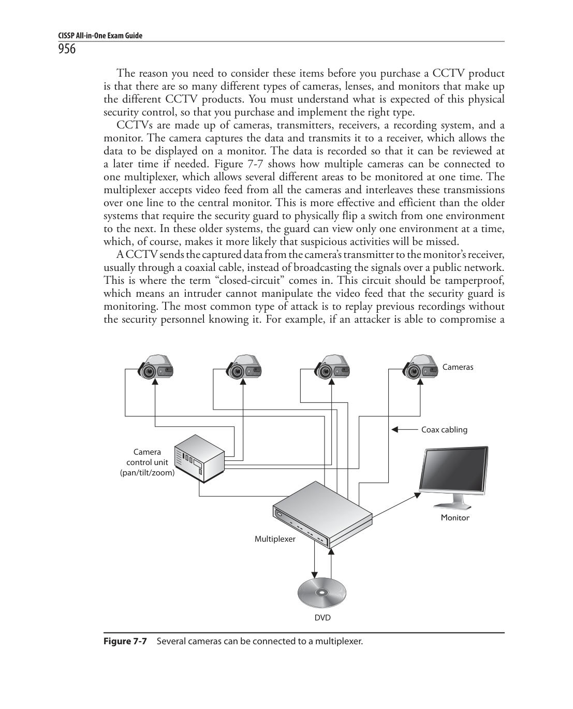
Figure 7-7Several cameras can be connected to a multiplexer.
company’s CCTV and play the recording from the day before, the security guard would not know an intruder is in the facility carrying out some type of crime. This is one reason why CCTVs should be used in conjunction with intruder detection controls, which we address in the next section.
CCTVs should have some type of recording system. Digital recorders save images to hard drives and allow advanced search techniques that are not possible with videotape recorders. Digital recorders use advanced compression techniques, which drastically reduce the storage media requirements. Most of the CCTV cameras in use today employ light-sensitive chips calledchargedcoupled devices (CCDs). The CCD is an electrical circuit that receives input light from the lens and converts it into an electronic signal, which is then displayed on the monitor. Images are focused through a lens onto the CCD chip surface, which forms the electrical representation of the optical image. It is this technology that allows for the capture of extraordinary detail of objects and precise representation, because it has sensors that work in the infrared range, which extends beyond human perception. The CCD sensor picks up this extra “data” and integrates it into the images shown on the monitor to allow for better granularity and quality in the video. Two main types of lenses are used in CCTV: fixed focal length and zoom (varifocal). Thefocal lengthof a lens defines its effectiveness in viewing objects from a horizontal and vertical view. The focal length value relates to the angle of view that can be achieved. Short focal length lenses provide wider-angle views, while long focal length lenses provide a narrower view. The size of the images shown on a monitor, along with the area covered by one camera, is defined by the focal length. For example, if a company implements a CCTV camera in a warehouse, the focal length lens values should be between 2.8 and 4.3millimeters (mm) so the whole area can be captured. If the company implements another CCTV camera that monitors an entrance, that lens value should be around 8mm, which allows a smaller area to be monitored.
Fixed focal length lenses are available in various fields of views: wide, medium, and narrow. A lens that provides a “normal” focal length creates a picture that approximates the field of view of the human eye. A wide-angle lens has a short focal length, and a telephoto lens has a long focal length. When a company selects a fixed focal length lens for a particular view of an environment, it should understand that if the field of view needs to be changed (wide to narrow), the lens must be changed. So, if we need to monitor a large area, we use a lens with a smaller focal length value. Great, but what if a security guard hears a noise or thinks he sees something suspicious? A fixed focal length lens does not allow the user to optically change the area that fills the monitor. Though digital systems exist that allow this change to happen in logic, the resulting image quality is decreased as the area being studied becomes smaller. This is
because the logic circuits are, in effect, cropping the broader image without increasing the number of pixels in it. This is calleddigital zoom(as opposed to optical zoom) and is a common feature in many cameras. Theoptical zoomlenses provide flexibility by allowing the viewer to change the field of view while maintaining the same number of pixels in the resulting image, which makes it much more detailed. The security personnel usually have a remote-control component integrated within the centralized CCTV monitoring area that allows them to move the cameras and zoom in and out on objects as needed. When both wide scenes and close-up captures are needed, an optical zoom lens is best. To understand the next characteristic, depth of field, think about pictures you might take while on vacation with your family. For example, if you want to take a picture of your spouse with the Grand Canyon in the background, the main object of the picture is your spouse. Your camera is going to zoom in and use ashallow depth of focus. This provides a softer backdrop, which will lead the viewers of the photograph to the foreground, which is your spouse. Now, let’s say you get tired of taking pictures of your spouse and want to get a scenic picture of just the Grand Canyon itself. The camera would use agreater depth of focus, so there is not such a distinction between objects in the foreground and background. The depth of field is necessary to understand when choosing the correct lenses and configurations for your company’s CCTV. Thedepth of fieldrefers to the portion of the environment that is in focus when shown on the monitor. The depth of field varies depending upon the size of the lens opening, the distance of the object being focused on, and the focal length of the lens. The depth of field increases as the size of the lens opening decreases, the subject distance increases, or the focal length of the lens decreases. So, if you want to cover a large area and not focus on specific items, it is best to use a wide-angle lens and a small lens opening. CCTV lenses haveirises, which control the amount of light that enters the lens.Manual iris lenseshave a ring around the CCTV lens that can be manually turned and controlled. A lens with a manual iris would be used in areas that have fixed lighting, since the iris cannot self-adjust to changes of light. Anauto iris lensshould be used in environments where the light changes, as in an outdoor setting. As the environment brightens, this is sensed by the iris, which automatically adjusts itself. Security personnel will configure the CCTV to have a specific fixed exposure value, which the iris is responsible for maintaining. On a sunny day, the iris lens closes to reduce the amount of light entering the camera, while at night, the iris opens to capture more light—just like our eyes. When choosing the right CCTV for the right environment, you must determine the amount of light present in the environment. Different CCTV camera and lens products have specific illumination requirements to ensure the best quality images possible. The illumination requirements are usually represented in theluxvalue, which is a metric used to represent illumination strengths. The illumination can be measured by using a light meter. The intensity of light (illumination) is measured and represented in measurement units of lux or foot-candles. (The conversion between the two is one foot-candle = 10.76 lux.) The illumination measurement is not something that can be accurately provided by the vendor of a light bulb, because the environment can directly affect the illumination. This is why illumination strengths are most effectively measured where the light source is implemented.
Next, you need to consider the mounting requirements of the CCTV cameras. The cameras can be implemented in afixed mountingor in a mounting that allows the cameras to move when necessary. A fixed camera cannot move in response to security personnel commands, whereas cameras that providePTZ capabilitiescan pan, tilt, or zoom (PTZ) as necessary. So, buying and implementing a CCTV system may not be as straightforward as it seems. As a security professional, you would need to understand the intended use of the CCTV, the environment that will be monitored, and the functionalities that will be required by the security staff that will use the CCTV on a daily basis. The different components that can make up a CCTV product are shown in Figure 7-8. Great—your assessment team has done all of its research and bought and implemented the correct CCTV system. Now it would be nice if someone actually watched the monitors for suspicious activities. Realizing that monitor watching is a mentally deadening activity may lead your team to implement a type ofannunciator system.
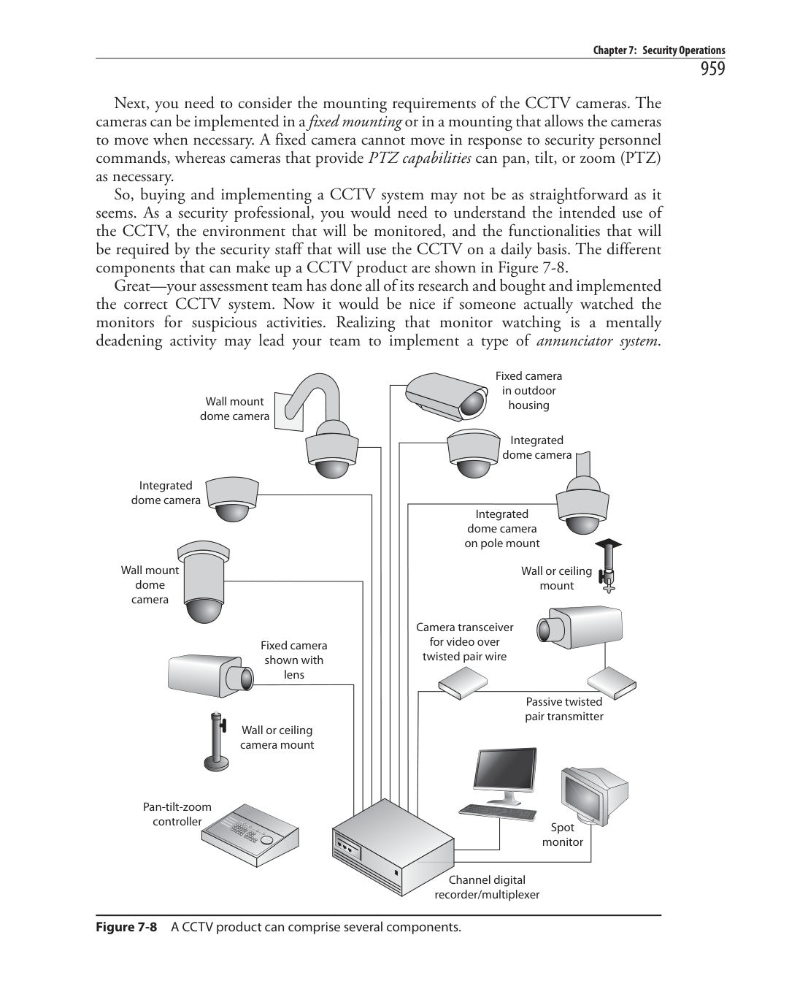
Figure 7-8A CCTV product can comprise several components.
Different types of annunciator products are available that can either “listen” for noise and activate electrical devices, such as lights, sirens, or CCTV cameras, or detect movement. Instead of expecting a security guard to stare at a CCTV monitor for eight hours straight, the guard can carry out other activities and be alerted by an annunciator if movement is detected on a screen.
Intrusion Detection Systems
Surveillance techniques are used to watch an area, whereas intrusion detection devices are used to sense changes that take place in an environment. Both are monitoring methods, but they use different devices and approaches. This section addresses the types of technologies that can be used to detect the presence of an intruder. One such technology, a perimeter scanning device, is shown in Figure 7-9. IDSs are used to detect unauthorized entries and to alert a responsible entity to respond. These systems can monitor entries, doors, windows, devices, or removable coverings of equipment. Many work with magnetic contacts or vibration-detection devices that are sensitive to certain types of changes in the environment. When a change is detected, the IDS device sounds an alarm either in the local area or in both the local area and a remote police or guard station. IDSs can be used to detect changes in the following:
Beams of light
- Sounds and vibrations
- Motion
- Different types of fields (microwave, ultrasonic, electrostatic)
- Electrical circuit
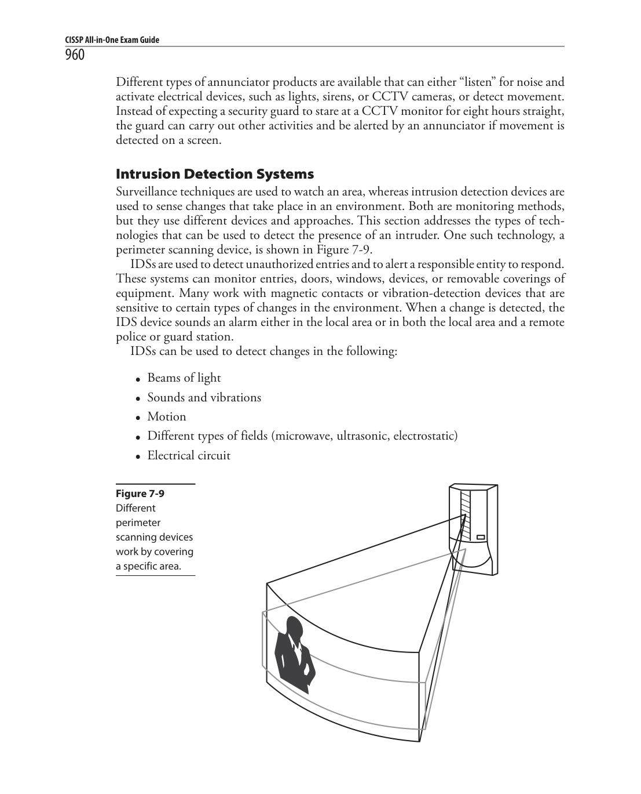
Figure 7-9
IDSs can be used to detect intruders by employing electromechanical systems (magnetic switches, metallic foil in windows, pressure mats) or volumetric systems. Volumetric systems are more sensitive because they detect changes in subtle environmental characteristics, such as vibration, microwaves, ultrasonic frequencies, infrared values, and photoelectric changes. Electromechanical systemswork by detecting a change or break in a circuit. The electrical circuits can be strips of foil embedded in or connected to windows. If the window breaks, the foil strip breaks, which sounds an alarm. Vibration detectors can detect movement on walls, screens, ceilings, and floors when the fine wires embedded within the structure are broken. Magnetic contact switches can be installed on windows and doors. If the contacts are separated because the window or door is opened, an alarm will sound. Another type of electromechanical detector is a pressure pad. This is placed underneath a rug or portion of the carpet and is activated after hours. If someone steps on the pad, an alarm can be triggered. Aphotoelectric system, orphotometric system, detects the change in a light beam and thus can be used only in windowless rooms. These systems work like photoelectric smoke detectors, which emit a beam that hits the receiver. If this beam of light is interrupted, an alarm sounds. The beams emitted by the photoelectric cell can be cross-sectional and can be invisible or visible beams.Cross-sectionalmeans that one area can have several different light beams extending across it, which is usually carried out by using hidden mirrors to bounce the beam from one place to another until it hits the light receiver. These are the most commonly used systems in the movies. You have probably seen James Bond and other noteworthy movie spies or criminals use night-vision goggles to see the invisible beams and then step over them. Apassive infrared (PIR)systemidentifies the changes of heat waves in an area it is configured to monitor. If the particles’ temperature within the air rises, it could be an indication of the presence of an intruder, so an alarm is sounded. Anacoustical detection systemuses microphones installed on floors, walls, or ceilings. The goal is to detect any sound made during a forced entry. Although these systems are easily installed, they are very sensitive and cannot be used in areas open to sounds of storms or traffic.Vibration sensorsare similar and are also implemented to detect forced entry. Financial institutions may choose to implement these types of sensors on exterior walls, where bank robbers may attempt to drive a vehicle through. They are also commonly used around the ceiling and flooring of vaults to detect someone trying to make an unauthorized bank withdrawal. Wave-pattern motion detectorsdiffer in the frequency of the waves they monitor. The different frequencies are microwave, ultrasonic, and low frequency. All of these devices generate a wave pattern that is sent over a sensitive area and reflected back to a receiver. If the pattern is returned undisturbed, the device does nothing. If the pattern returns altered because something in the room is moving, an alarm sounds. Aproximity detector, orcapacitance detector, emits a measurable magnetic field. The detector monitors this magnetic field, and an alarm sounds if the field is disrupted. These devices are usually used to protect specific objects (artwork, cabinets, or a safe) versus protecting a whole room or area. Capacitance change in an electrostatic field can be used to catch a bad guy, but first you need to understand what capacitance change means.
An electrostatic IDS creates an electrostatic magnetic field, which is just an electric field associated with static electric charges. Most objects have a measurable static electric charge. They are all made up of many subatomic particles, and when everything is stable and static, these particles constitute one holistic electric charge. This means there is a balance between the electric capacitance and inductance. Now, if an intruder enters the area, his subatomic particles will mess up this lovely balance in the electrostatic field, causing a capacitance change, and an alarm will sound. So if you want to rob a company that uses these types of detectors, leave the subatomic particles that make up your body at home. The type of motion detector that a company chooses to implement, its power capacity, and its configurations dictate the number of detectors needed to cover a sensitive area. Also, the size and shape of the room and the items within the room may cause barriers, in which case more detectors would be needed to provide the necessary level of coverage. IDSs are support mechanisms intended to detect and announce an attempted intrusion. They will not prevent or apprehend intruders, so they should be seen as an aid to the organization’s security forces.
Intrusion Detection Systems Characteristics
IDSs are very valuable controls to use in every physical security program, but several issues need to be understood before implementing them:
They are expensive and require human intervention to respond to the alarms.
- They require a redundant power supply and emergency backup power.
- They can be linked to a centralized security system.
- They should have a fail-safe configuration, which defaults to “activated.”
- They should detect, and be resistant to, tampering.
Patrol Force and Guards
One of the best security mechanisms is a security guard and/or a patrol force to monitor a facility’s grounds. This type of security control is more flexible than other security mechanisms, provides good response to suspicious activities, and works as a great deterrent. However, it can be a costly endeavor because it requires a salary, benefits, and time off. People sometimes are unreliable. Screening and bonding is an important part of selecting a security guard, but this only provides a certain level of assurance. One issue is if the security guard decides to make exceptions for people who do not follow the organization’s approved policies. Because basic human nature is to trust and help people, a seemingly innocent favor can put an organization at risk. IDSs and physical protection measures ultimately require human intervention. Security guards can be at a fixed post or can patrol specific areas. Different organizations will have different needs from security guards. They may be required to check individual
credentials and enforce filling out a sign-in log. They may be responsible for monitoring IDSs and expected to respond to alarms. They may need to issue and recover visitor badges, respond to fire alarms, enforce rules established by the company within the building, and control what materials can come into or go out of the environment. The guard may need to verify that doors, windows, safes, and vaults are secured; report identified safety hazards; enforce restrictions of sensitive areas; and escort individuals throughout facilities. The security guard should have clear and decisive tasks that she is expected to fulfill. The guard should be fully trained on the activities she is expected to perform and on the responses expected from her in different situations. She should also have a central control point to check in to, two-way radios to ensure proper communication, and the necessary access into areas she is responsible for protecting. The best security has a combination of security mechanisms and does not depend on just one component of security. Thus, a security guard should be accompanied by other surveillance and detection mechanisms.
Dogs
Dogs have proven to be highly useful in detecting intruders and other unwanted conditions. Their senses of smell and hearing outperform those of humans, and their intelligence and loyalty can be used for protection. The best security dogs go through intensive training to respond to a wide range of commands and to perform many tasks. Dogs can be trained to hold an intruder at bay until security personnel arrive or to chase an intruder and attack. Some dogs are trained to smell smoke so they can alert personnel to a fire. Of course, dogs cannot always know the difference between an authorized person and an unauthorized person, so if an employee goes into work after hours, he can have more on his hands than expected. Dogs can provide a good supplementary security mechanism.
Because the use of guard dogs introduces significant risks to personal safety, which is paramount for CISSPs, exam answers that include dogs are likelier to be incorrect. Be on the lookout for these.
Auditing Physical Access
Physical access control systems can use software and auditing features to produce audit trails or access logs pertaining to access attempts. The following information should be logged and reviewed:
The date and time of the access attempt
- The entry point at which access was attempted
- The user ID employed when access was attempted
- Any unsuccessful access attempts, especially if during unauthorized hours
- As with audit logs produced by computers, access logs are useless unless someone actually reviews them. A security guard may be required to review these logs, but a security professional or a facility manager should also review these logs periodically. Management needs to know where entry points into the facility exist and who attempts to use them. Audit and access logs are detective, not preventive. They are used to piece together a situation after the fact instead of attempting to prevent an access attempt in the first place.
Secure Resource Provisioning
The term “provisioning” is overloaded in the technology world, which is to say that it means different actions to different people. To a telecommunications service provider, it could mean the process of running wires, installing customer premises equipment, configuring services, and setting up accounts to provide a given service (e.g., DSL). To an IT department, it could mean the acquisition, configuration, and deployment of an information system (e.g., a new server) within a broader enterprise environment. Finally, to a cloud services provider, provisioning could mean automatically spinning up a new instance of that physical server that the IT department delivered to us. For the purpose of the CISSP exam,provisioningis the set of all activities required to provide one or more new information services to a user or group of users (“new” meaning previously not available to that user or group). Though this definition is admittedly broad, it does subsume all that the overloaded term means. As you will see in the following sections, the specific actions included in various types of provisioning vary significantly, while remaining squarely within our given definition. At the heart of provisioning is the imperative to provide these services in a secure manner. In other words, we must ensure the services themselves are secure. We also must ensure that the users or systems that can avail themselves of these services are accessing them in a secure manner and in accordance with their own authorizations and the application of the principle of least privilege.
Asset Inventory
Perhaps the most essential aspect of securing our information systems is knowing what it is that we are defending. Though the approaches to tracking hardware and software vary, they are both widely recognized as critical controls. At the very least, it is very difficult to defend an asset that you don’t know you have. As obvious as this sounds, many organizations lack an accurate and timely inventory of their hardware and software.
Tracking Hardware
Seemingly, maintaining awareness of which devices are in your organization should be an easier task than tracking your software. A hardware device can be seen, touched, and bar-scanned. It can also be sensed electronically once it is connected to the network. If you have the right tools and processes available, tracking hardware should not be all that difficult, right? Not so fast. It turns out that the set of problems ranges from supply chain security to insider threats and everything in between.
Let’s start with the basics. How do you ensure that a new device you’ve ordered is the right one and free of back doors or piracy issues? There have been multiple reports in the news media recently of confirmed or suspected back doors installed in hardware assets by either manufacturers (e.g., pirated hardware) or by third parties (e.g., government spy agencies) before they get to the organization that acquired them. In response to these and other threats, the International Organization for Standardization published ISO/ PAS 28000:2007 as a means for organizations to use a consistent approach to securing their supply chains. In essence, we want to ensure we purchase from trusted sources, use a trusted transportation network, and have effective inspection processes to mitigate the risk of pirated, tampered, or stolen hardware. But even if we can assure ourselves that all the hardware we acquire is legitimate, how would we know if someone else were to add devices to our networks? Asset monitoring includes not only tracking our known devices, but also identifying unknown ones that may occasionally pop up in our enclaves. Examples that come to mind from personal experience include rogue wireless access points, personal mobile devices, and even telephone modems. Each introduces unknown (and thus unmitigated) risks. The solution is to have a comprehensive monitoring process that actively searches for these devices and ensures compliance with your organization’s security policies. In many cases, monitoring devices on the premises can be as simple as having a member of the security or IT team randomly walk through every space in the organization looking for things that are out of place. This becomes even more effective if this person does this after work hours and also looks for wireless networks as part of these walks. Alternatively, much of this can be done using device management platforms and a variety of sensors.
Tracking Software
Obviously, we can’t just walk around and inventory our software. Still, the risks introduced by software are every bit as significant as those introduced by hardware (and perhaps more so). Fundamentally, these risks can be grouped into those that raise liability issues and those that raise security issues. Unlicensed or pirated software not only is unethical, but also exposes an organization to financial liability from the legitimate product vendors. This liability can manifest in a number of ways, including having the organization reported to the vendor by a disgruntled employee. It could also come up when certain software packages “phone home” to the vendors’ servers or when downloading software patches and updates. Depending on the number and types of licenses, this could end up costing significant amounts of money in retroactive licensing fees. Pirated software is even more problematic because many forms of it include backdoors installed by the pirates or are Trojan horses. Even if this were not the case, it would almost certainly be impossible to update or patch this software, which makes it inherently more insecure. Since no IT staff in their right mind would seriously consider using pirated software as an organizational policy, its presence on a network would suggest that at least some users have privileges that are being abused and to which they may not be entitled.
The solution to the software asset inventory problem is multifaceted. It starts with an assessment of the legitimate application requirements of the organization. Perhaps some users need an expensive photo editing software suite, but it’s provisioning should be carefully controlled and only available to that set of users in order to minimize the licensing costs. Once the requirements are known and broken down by class of user, there are several ways to keep a handle on what software exists on which systems. Here are some of the most widely accepted best practices:
Application whitelistingA whitelist is a list of software that is allowed to
- execute on a device or set of devices. Implementing this approach not only prevents unlicensed or unauthorized software from being installed, but also protects against many classes of malware.
Using Gold MastersAs introduced earlier in the chapter, a Gold Master is
- a standard image workstation or server that includes properly configured and authorized software. Organizations may have multiple images representing different sets of users. The use of Gold Masters simplifies new device provisioning and configuration, particularly if the users are not allowed to modify them.
Enforcing the principle of least privilegeIf the typical users are not able
- to install any software on their devices, then it becomes a lot harder for rogue applications to show up in our networks. Furthermore, if we apply this approach, we mitigate risks from a very large set of attacks.
Automated scanningEvery device on your network should be periodically
- scanned to ensure it is running only approved software with proper configurations. Deviations from this policy should be logged and investigated by the IT or security team.
Controlling the existing hardware and software on our networks should be a precondition to provisioning new services and capabilities. To do otherwise risks making an already untenable position even worse.
Configuration Management
Once we have a good handle on what hardware and software we have in our organization, we need to also ensure that we get (and keep) a handle on how these assets are configured. Sadly, most default configurations are woefully insecure. This means that if we do not configure security when we provision new hardware or software, we are virtually guaranteeing successful attacks on our systems.Configuration management(CM)is the process of establishing and maintaining consistent baselines on all of our systems. Every company should have a policy indicating how changes take place within a facility, who can make the changes, how the changes are approved, and how the changes are documented and communicated to other employees. Without these policies in place, people can make changes that others do not know about and that have not been approved, which can result in a confusing mess at the lowest end of the impact scale, and a complete breakdown of operations at the high end. Heavily regulated industries such as finance, pharmaceuticals, and energy have very strict guidelines regarding what specifically can be
done and at exactly what time and under which conditions. These guidelines are intended to avoid problems that could impact large segments of the population or downstream partners. Without strict controls and guidelines, vulnerabilities can be introduced into an environment. Tracking down and reversing the changes after everything is done can be a very complicated and nearly impossible task. The changes can happen to network configurations, system parameters, applications, and settings when adding new technologies, application configurations, or devices, or when modifying the facility’s environmental systems. Change control is important not only for an environment, but also for a product during its development and life cycle. Changes must be effective and orderly, because time and money can be wasted by continually making changes that do not meet an ultimate goal. Some changes can cause a serious network disruption and affect systems’ availability. This means changes must be thought through, approved, and carried out in a structured fashion. Backup plans may be necessary in case the change causes unforeseen negative effects. For example, if a server is going to be replaced with a different server type, interoperability issues could prevent users from accessing specific resources, so a backup or redundant server should be in place to ensure availability and continued productivity.
Change Control Process
A well-structured change control process should be put into place to aid staff members through many different types of changes to the environment. This process should be laid out in the change control policy. Although the types of changes vary, a standard list of procedures can help keep the process under control and ensure it is carried out in a predictable manner. The following steps are examples of the types of procedures that should be part of any change control policy:
1.Request for a change to take placeRequests should be presented to an individual or group that is responsible for approving changes and overseeing the activities of changes that take place within an environment. 2.Approval of the changeThe individual requesting the change must justify the reasons and clearly show the benefits and possible pitfalls of (that is, risk introduced by) the change. Sometimes the requester is asked to conduct more research and provide more information before the change is approved. 3.Documentation of the changeOnce the change is approved, it should be entered into a change log. The log should be updated as the process continues toward completion. Denied requests must also be documented, so that there is a record of the rationale for not making the change. 4.Tested and presentedThe change must be fully tested to uncover any unforeseen results. Regardless of how well we test, there is always a chance that the change will cause an unacceptable loss or outage, so every change request should also have a rollback plan that restores the system to the last known-good configuration. Depending on the severity of the change and the company’s organization, the change and implementation may need to be presented to a change control committee. This helps show different sides to the purpose and outcome of the change and the possible ramifications.
5.ImplementationOnce the change is fully tested and approved, a schedule should be developed that outlines the projected phases of the change being implemented and the necessary milestones. These steps should be fully documented and progress should be monitored. 6.Report change to managementA full report summarizing the change should be submitted to management. This report can be submitted on a periodic basis to keep management up-to-date and ensure continual support.
These steps, of course, usually apply to large changes that take place within an organization. These types of changes are typically expensive and can have lasting effects on a company. However, smaller changes should also go through some type of change control process. If a server needs to have a patch applied, it is not good practice to have an engineer just apply it without properly testing it on a nonproduction server, without having the approval of the IT department manager or network administrator, and without having backup and backout plans in place in case the patch causes some negative effect on the production server. Of course, these changes need to be documented. As stated previously, it is critical that the operations department create approved backout plans before implementing changes to systems or the network. It is very common for changes to cause problems that were not properly identified before the implementation process began. Many network engineers have experienced the headaches of applying poorly developed “fixes” or patches that end up breaking something else in the system. To ensure productivity is not negatively affected by these issues, a backout plan should be developed. This plan describes how the team will restore the system to its original state before the change was implemented.
Change Control Documentation
Failing to document changes to systems and networks is only asking for trouble, because no one will remember, for example, what was done to that one server in the demilitarized zone (DMZ) six months ago or how the main router was fixed when it was acting up last year. Changes to software configurations and network devices take place pretty often in most environments, and keeping all of these details properly organized is impossible, unless someone maintains a log of this type of activity. Numerous changes can take place in a company, some of which are as follows:
New computers installed
- New applications installed
- Different configurations implemented
- Patches and updates installed
- New technologies integrated
- Policies, procedures, and standards updated
- New regulations and requirements implemented
- Network or system problems identified and fixes implemented
- Different network configuration implemented
- New networking devices integrated into the network
- Company acquired by, or merged with, another company
- The list could go on and on and could be general or detailed. Many companies have experienced some major problem that affects the network and employee productivity. The IT department may run around trying to figure out the issue and go through hours or days of trial-and-error exercises to find and apply the necessary fix. If no one properly documents the incident and what was done to fix the issue, the company may be doomed to repeat the same scramble six months to a year down the road.
Provisioning Cloud Assets
Generally, cloud provisioning is the set of all activities required to provide one or more new cloud assets to a user or group of users. So what exactly are these cloud assets? As described in Chapter 3, cloud computing is generally divided into three types of service: Infrastructure as a Service (IaaS), Platform as a Service (PaaS), and Software as a Service (SaaS). The provisioning of each type of service presents its own set of issues.
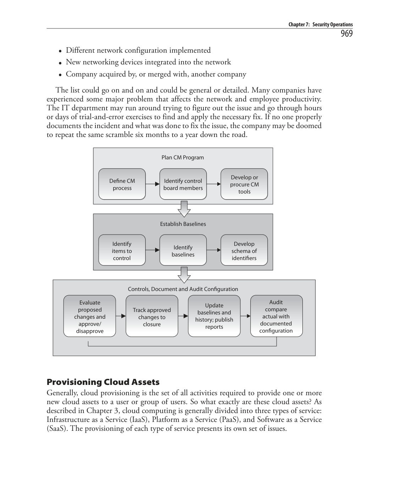
Diagram (p. 1003)
When we are dealing with provisioning IaaS assets, our user population is limited to the IT department. To see why this is true, we need only consider a noncloud (that is, physical) equivalent: provisioning a new server or router. Because these assets typically impact a large number of users in the organization, we must be very careful in planning and testing their provisioning. Accordingly, these provisioning actions often require the approval of the senior leadership or of the change control committee. Only a very small group of IT personnel should be able to perform such provisioning. PaaS is similar to IaaS in terms of organizational impact, but oftentimes has a more limited scope. Recall that a platform, in this context, is typically a service such as a web or database management service. Though the IT team typically handles the provisioning, in some cases someone else in the organization may handle it. Consider, for example, the case of a development (intranet-only) web service that is being provisioned to test a web application that a team of coders is developing. Depending on the scope, context, and accessibility, this provisioning could be delegated to any one of the developers, though someone in IT would first constrain the platform to ensure it is accessible only to that team. Finally, SaaS could be provisioned by a larger pool of users within the constraints established by the IT team in accordance with the organizational policy. If a given group of users is authorized to use the customer relations manager (CRM), then those users should be able to log into their accounts and self-provision that and any other applications to which they are authorized. As you can see, the provisioning of cloud assets should be increasingly more controlled depending on the organizational impact and the risk profile of the specific asset. The key to secure provisioning is carefully setting up the cloud computing environment so that properly configured applications, platforms, and infrastructure are rapidly available to authorized users when and where they need them. After all, one of the benefits of cloud computing is the promise of self-service provisioning in near real time.
Network and Resource Availability
Secure resource provisioning is only part of the story here. Another key component of security operations is planning for and dealing with the inevitable failures of the component parts of our information systems. In the triad of security services,availabilityis one of the foundational components (the other two beingconfidentialityandintegrity). Network and resource availability often is not fully appreciated until it is gone. That is why administrators and engineers need to implement effective backup and redundant systems to make sure that when something happens (and something will happen), users’ productivity will not be drastically affected. The network needs to be properly maintained to make sure the network and its resources will always be available when they’re needed. For example, the cables need to be the correct type for the environment and technology used, and cable runs should not exceed the recommended lengths. Older cables should be replaced with newer ones, and periodic checks should be made for possible cable cuts and malfunctions.
Device backup and other availability solutions are chosen to balance the value of having information available against the cost of keeping that information available:
Redundant hardwareready for “hot swapping” keeps information highly
- available by having multiple copies of information (mirroring) or enough extra information available to reconstruct information in case of partial loss (parity, error correction). Hot swapping allows the administrator to replace the failed component while the system continues to run and information remains available; usually degraded performance results, but unplanned downtime is avoided.
Fault-tolerant technologieskeep information available against not only individual
- storage device faults but even against whole system failures. Fault tolerance is among the most expensive possible solutions, and is justified only for the most mission-critical information. All technology will eventually experience a failure of some form. A company that would suffer irreparable harm from any unplanned downtime, or that would accumulate millions of dollars in losses for even a very brief unplanned downtime, can justify paying the high cost for faulttolerant systems.
Service level agreements (SLAs)help service providers, whether they are an internal
- IT operation or an outsourcer, decide what type of availability technology is appropriate. From this determination, the price of a service or the budget of the IT operation can be set. The process of developing an SLA with a business is also beneficial to the business. While some businesses have performed this type of introspection on their own, many have not, and being forced to go through the exercise as part of budgeting for their internal IT operations or external sourcing helps the business understand the real value of its information.
Solid operational proceduresare also required to maintain availability. The most
- reliable hardware with the highest redundancy or fault tolerance, designed for the fastest mean time to repair, will mostly be a waste of money if operational procedures, training, and continuous improvement are not part of the operational environment: one slip of the finger by an IT administrator can halt the most reliable system.
We need to understand when system failures are most likely to happen….
Mean Time Between Failures
Mean time between failures (MTBF)is a measure of how long we expect a piece of equipment to operate reliably. MTBF is normally calculated by staking the average of the time between failures of a system. For example, suppose you buy a lot of 100 hard disk drives, install them, and start using them on the same day. You subsequently note that one of them fails after 10 days, a second fails after 500 days, and a third fails after 600 days.
At that point, you could calculate your MTBF for the lot to be 370 days (1110 days / 3 failures). Normally, however, we rely on the vendor of the equipment or a third party to calculate this value, since they have access to information on many more devices than we do. The reason for using MTBF is to know approximately when a particular device will need to be repaired or replaced. It is used as a benchmark for reliability.
MTBF implies that the device or component is repairable. If it isn’t, then we use the term mean time to failure (MTTF).
Organizations trending MTBF over time for the devices they use may be able to identify types of devices that are failing above the averages promised by the devices’ manufacturers and take action. For example, if the devices are still under warranty, an organization may proactively contact the manufacturer to seek replacement; if not under warranty, the organization may decide to replace the devices preemptively before largerscale failures and operational disruptions occur.
Mean Time to Repair
Mean time to repair (MTTR)is the expected amount of time it will take to get a device fixed and back into production after its failure. For a hard drive in a redundant array, the MTTR is the amount of time between the actual failure and the time when, after noticing the failure, someone has replaced the failed drive and the redundant array has completed rewriting the information on the new drive. This is likely to be measured in hours. For a nonredundant hard drive in a desktop PC, the MTTR is the amount of time between when the user emits a loud curse and calls the help desk, and the point at which the replaced hard drive has been reloaded with the operating system, software, and any backed-up data belonging to the user. This is likely to be measured in days. For an unplanned reboot, the MTTR is the amount of time between the failure of the system and the point in time when it has rebooted its operating system, checked the state of its disks (hopefully finding nothing that its file systems cannot handle), and restarted its applications, and its applications have checked the consistency of their data (hopefully finding nothing that their journals cannot handle) and once again begun processing transactions. For well-built hardware running high-quality, well-managed operating systems and software, this may be only minutes. For commodity equipment without high-performance journaling file systems and databases, this may be hours, or, worse, days if automated recovery/rollback does not work and a restore of data from tape is required:
The MTTR may pertain to fixing a component of the device, or replacing the
- device, or perhaps refers to a vendor’s SLA.
If the MTTR is too high for a critical device, then redundancy should be used.
- The MTBF and MTTR numbers provided by manufacturers are useful in choosing how much to spend on new systems. Systems that can be down for brief periods of time without significant impact may be built from inexpensive components with lower MTBF expectations and modest MTTR. Higher MTBF numbers are often accompanied by higher prices, but can be justified for mission-critical systems. Systems that cannot be allowed to be down at all need redundant components with high MTBF values.
Single Points of Failure
Asingle point of failureposes a lot of potential risk to a network, because if the device fails, a segment or even the entire network is negatively affected. Devices that could represent single points of failure are firewalls, routers, network access servers, T1 lines, switches, bridges, hubs, and authentication servers—to name a few. The best defenses against being vulnerable to these single points of failure are proper maintenance, regular backups, redundancy, and fault tolerance.
More Components Can Mean Less Reliability
MTBF can be misleading. Putting aside questions of whether manufacturerpredicted MTBFs are believable, consider a desktop PC with a single hard drive installed, where the hard drive has an MTBF estimate by the manufacturer of 30,000 hours. Thus, 30,000 hours / 8,760 hours/year = an MTBF of a little over three years. This suggests that this model of hard drive, on average, will last over three years before it fails. Put aside the notions of whether the office environment in which that PC is located is temperature-, humidity-, shock-, and coffee spill– controlled, and install a second identical hard drive in that PC. The possibility of failure may have now doubled, giving two chances in that three-year period of suffering a failure of a hard drive in the PC. Extrapolate this to a data center with thousands of these hard drives in it, and it becomes clear that a hard drive replacement budget is required each year, along with redundancy for important data.
Multiple paths should exist between routers in case one router goes down, and dynamic routing protocols should be used so each router will be informed when a change to the network takes place. For WAN connections, a failover option should be configured to enable an Integrated Services Digital Network (ISDN) connection to be available if the WAN router fails. Figure 7-10 illustrates a common e-commerce environment that contains redundant devices.
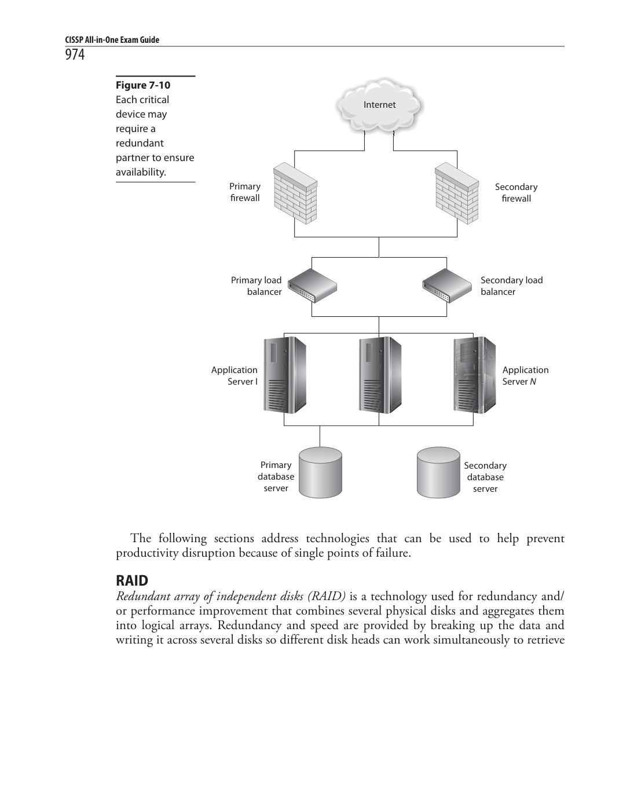
Figure 7-10
The following sections address technologies that can be used to help prevent productivity disruption because of single points of failure.
RAID
Redundant array of independent disks (RAID)is a technology used for redundancy and/ or performance improvement that combines several physical disks and aggregates them into logical arrays. Redundancy and speed are provided by breaking up the data and writing it across several disks so different disk heads can work simultaneously to retrieve
the requested information. Control data is also spread across each disk—this is called parity—so that if one disk fails, the other disks can work together and restore its data. ARAID appears as a single drive to applications and other devices.
When data is written across all drives, the technique ofstripingis used. This activity divides and writes the data over several drives. The write performance is not affected, but the read performance is increased dramatically because more than one head is retrieving data at the same time. It might take the RAID system six seconds to write a block of data to the drives and only two seconds or less to read the same data from the disks. Various levels of RAID dictate the type of activity that will take place within the RAID system. Some levels deal only with performance issues, while other levels deal with performance and fault tolerance. If fault tolerance is one of the services a RAID level provides, parity is involved. If a drive fails, the parity is basically instructions that tell the RAID system how to rebuild the lost data on the new hard drive. Parity is used to rebuild a new drive so all the information is restored. Most RAID systems have hot-swappingdisks, which means they can replace drives while the system is running.
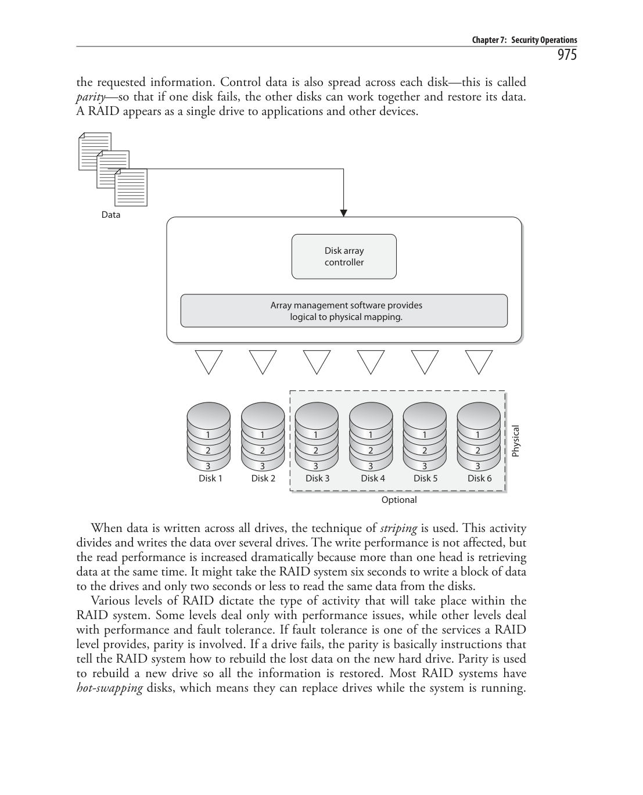
Diagram (p. 1009)
Whena drive is swapped out, or added, the parity data is used to rebuild the data on the new disk that was just added.
The term RAID 10 is sometimes used to refer to a combination of levels 1 and 0. The CBK may refer to this as either RAID 0+1 or RAID 1+0.
The most common RAID level used today is level 5. Table 7-2 describes each of the possible RAID levels.
RAID level 5 is the most commonly used mode.
Direct Access Storage Device
Direct access storage device (DASD)is a general term for magnetic disk storage devices, which historically have been used in mainframe and minicomputer (mid-range computer) environments. RAID is a type of DASD. The key distinction between DASDs and sequential access storage devices (SASDs) is that any point on a DASD may be
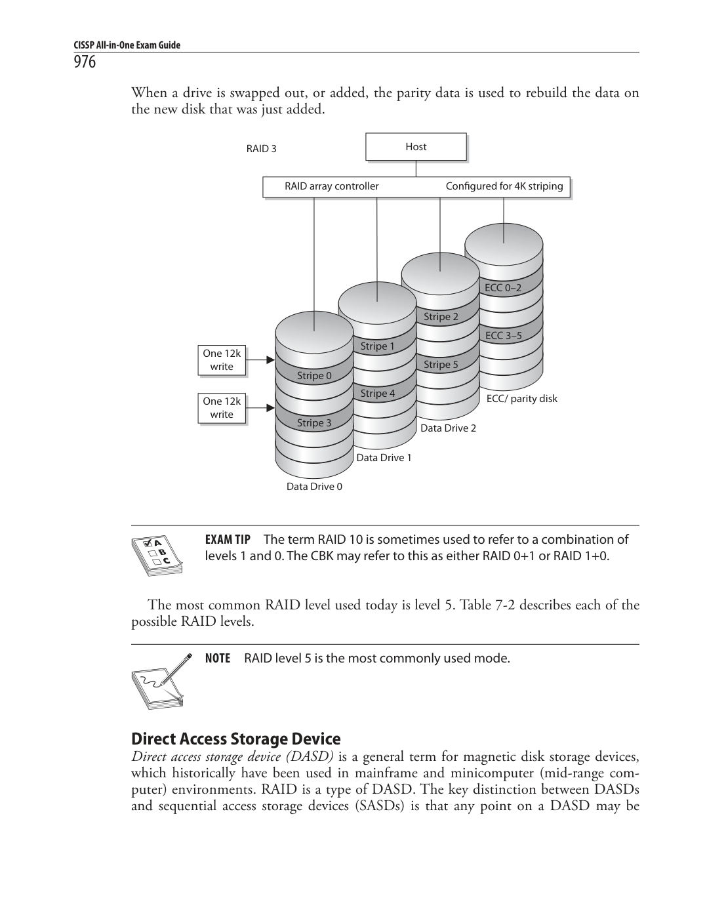
Diagram (p. 1010)
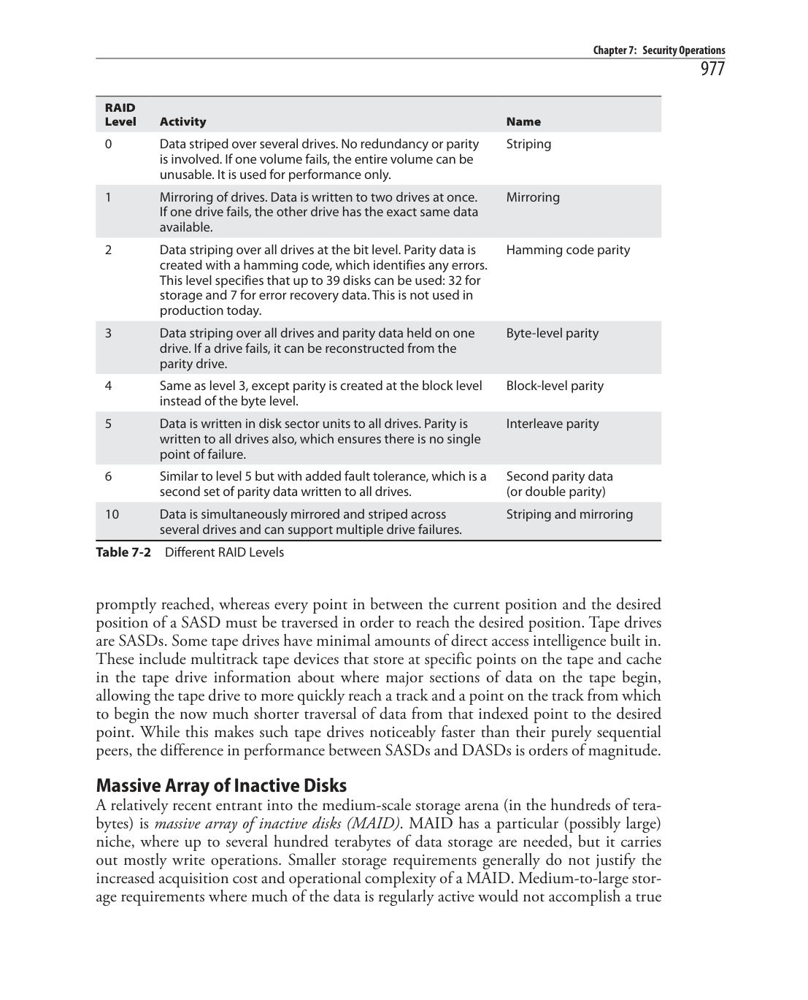
0Data striped over several drives. No redundancy or parityStriping
promptly reached, whereas every point in between the current position and the desired position of a SASD must be traversed in order to reach the desired position. Tape drives are SASDs. Some tape drives have minimal amounts of direct access intelligence built in. These include multitrack tape devices that store at specific points on the tape and cache in the tape drive information about where major sections of data on the tape begin, allowing the tape drive to more quickly reach a track and a point on the track from which to begin the now much shorter traversal of data from that indexed point to the desired point. While this makes such tape drives noticeably faster than their purely sequential peers, the difference in performance between SASDs and DASDs is orders of magnitude.
Massive Array of Inactive Disks
A relatively recent entrant into the medium-scale storage arena (in the hundreds of terabytes) ismassive array of inactive disks (MAID). MAID has a particular (possibly large) niche, where up to several hundred terabytes of data storage are needed, but it carries out mostly write operations. Smaller storage requirements generally do not justify the increased acquisition cost and operational complexity of a MAID. Medium-to-large storage requirements where much of the data is regularly active would not accomplish a true
benefit from MAID since the performance of a MAID in such a use case declines rapidly as more drives are needed to be active than the MAID is intended to offer. At the very highest end of storage, with a typical write-mostly use case, tape drives remain the most economical solution due to the lower per-unit cost of tape storage and the decreasing percent of the total media needed to be online at any given time. In a MAID, rack-mounted disk arrays have all inactive disks powered down, with only the disk controller alive. When an application asks for data, the controller powers up the appropriate disk drive(s), transfers the data, and then powers the drive(s) down again. By powering down infrequently accessed drives, energy consumption is significantly reduced, and the service life of the disk drives may be increased.
Redundant Array of Independent Tapes
Redundant array of independent tapes (RAIT)is similar to RAID, but uses tape drives instead of disk drives. Tape storage is the lowest-cost option for very large amounts of data, but is very slow compared to disk storage. For very large write-mostly storage applications where MAID is not economical and where a higher performance than typical tape storage is desired, or where tape storage provides appropriate performance and higher reliability is required, RAIT may fit. As in RAID 1 striping, in RAIT, data is striped in parallel to multiple tape drives, with or without a redundant parity drive. This provides the high capacity at low cost typical of tape storage, with higher-than-usual tape data transfer rates and optional data integrity.
Storage Area Networks
Drawing from the local area network (LAN), wide area network (WAN), and metropolitan area network (MAN) nomenclature, astorage area network (SAN)consists of numerous storage devices linked together by a high-speed private network and storage-specific switches. This creates a “fabric” that allows users to attach to and interact in a transparent mode. When a user makes a request for a file, he does not need to know which server or tape drive to go to—the SAN software finds it and provides it to the user. Many infrastructures have data spewed all over the network, and tracking down the necessary information can be frustrating, but backing up all of the necessary data can also prove challenging in this setup. SANs provide redundancy, fault tolerance, reliability, and backups, and allow the users and administrators to interact with the SAN as one virtual entity. Because the network that carries the data in the SAN is separate from a company’s regular data network, all of this performance, reliability, and flexibility comes without impact to the data networking capabilities of the systems on the network. SANs are not commonly used in small or midsized companies. They are for companies that have to keep track of terabytes of data and have the funds for this type of technology. The storage vendors are currently having a heyday, not only because everything we do business-wise is digital and must be stored, but because government regulations are requiring companies to keep certain types of data for a specific retention period. Imagine storing all of your company’s e-mail traffic for seven years…that’s just one type of data that must be retained.
Tape drives, optical jukeboxes, and disk arrays may also be attached to, and referenced through, a SAN.
Clustering
Clusteringis a fault-tolerant server technology that is similar to redundant servers, except each server takes part in processing services that are requested. Aserver clusteris a group of servers that are viewed logically as one server to users and can be managed as a single logical system. Clustering provides for availability and scalability. It groups physically different systems and combines them logically, which provides immunity to faults and improves performance. Clusters work as an intelligent unit to balance traffic, and users who access the cluster do not know they may be accessing different systems at different times. To the users, all servers within the cluster are seen as one unit. Clusters may also be referred to as server farms. If one of the systems within the cluster fails, processing continues because the rest pick up the load, although degradation in performance could occur. This is more attractive, however, than having a secondary (redundant) server that waits in the wings in case a primary server fails, because this secondary server may just sit idle for a long period of
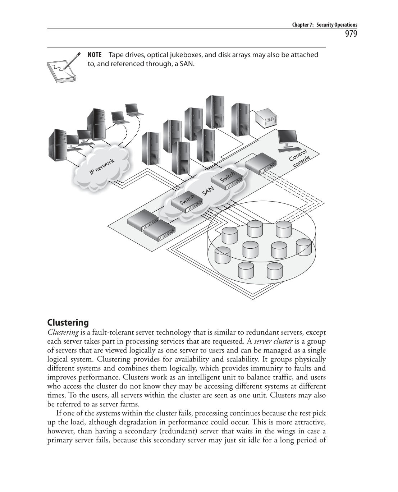
Diagram (p. 1013)
time, which is wasteful. When clustering is used, all systems are used to process requests and none sit in the background waiting for something to fail. Clustering is a logical outgrowth of redundant servers. Consider a single server that requires high availability, and so has a hot standby redundant server allocated. For each such single server requiring high availability, an additional redundant server must be purchased. Since failure of multiple primary servers at once is unlikely, it would be economically efficient to have a small number of extra servers, any of which could take up the load of any single failed primary server. Thus was born the cluster. Clustering offers a lot more than just availability. It also provides load balancing (each system takes a part of the processing load), redundancy, and failover (other systems continue to work if one fails).
Grid Computing
Grid computingis another load-balanced parallel means of massive computation, similar to clusters but implemented with loosely coupled systems that may join and leave the grid randomly. Most computers have extra CPU processing power that is not being used many times throughout the day. So some smart people thought that was wasteful and came up with a way to use all of this extra processing power. Just like the power grid provides electricity to entities on an as-needed basis (if you pay your bill), computers can volunteer to allow their extra processing power to be available to different groups for different projects. The first project to use grid computing was SETI (Search for Extraterrestrial Intelligence), where people allowed their systems to participate in scanning the universe looking for aliens who are trying to talk to us. Although this may sound similar to clustering, where in a cluster a central controller has master control over allocation of resources and users to cluster nodes and the nodes in the cluster are under central management (in the same trust domain), in grid computing the nodes do not trust each other and have no central control. Applications that may be technically suitable to run in a grid and that would enjoy the economic advantage of a grid’s cheap massive computing power, but which require secrecy, may not be good candidates for a grid computer since the secrecy of the content of a workload unit allocated to a grid member cannot be guaranteed by the grid against the owner of the individual grid member. Additionally, because the grid members are of variable capacity and availability and do not trust each other, grid computing is not appropriate for applications that require tight interactions and coordinated scheduling among multiple workload units. This means sensitive data should not be processed over a grid, and this is not the proper technology for time-sensitive applications. A more appropriate use of grid computing is projects like financial modeling, weather modeling, and earthquake simulation. Each of these has an incredible amount of variables and input that need to be continually computed. This approach has also been used to try and crack algorithms and was used to generate rainbow tables.
Rainbow tables consist of all possible passwords in hashed formats. This allows attackers to uncover passwords much more quickly than carrying out a dictionary or brute-force attack.
Backups
Backing up software and having backup hardware devices are two large parts of network availability. You need to be able to restore data if a hard drive fails, a disaster takes place, or some type of software corruption occurs. A policy should be developed that indicates what gets backed up, how often it gets backed up, and how these processes should occur. If users have important information on their workstations, the operations department needs to develop a method that indicates that backups include certain directories on users’ workstations or that users move their critical data to a server share at the end of each day to ensure it gets backed up. Backups may occur once or twice a week, every day, or every three hours. It is up to the company to determine this interval. The more frequent the backups, the more resources will be dedicated to it, so there needs to be a balance between backup costs and the actual risk of potentially losing data. A company may find that conducting automatic backups through specialized software is more economical and effective than spending IT work-hours on the task. The integrity of these backups needs to be checked to ensure they are happening as expected—rather than finding out right after two major servers blow up that the automatic backups were saving only temporary files. (Review Chapter 6 for more information on backup issues.)
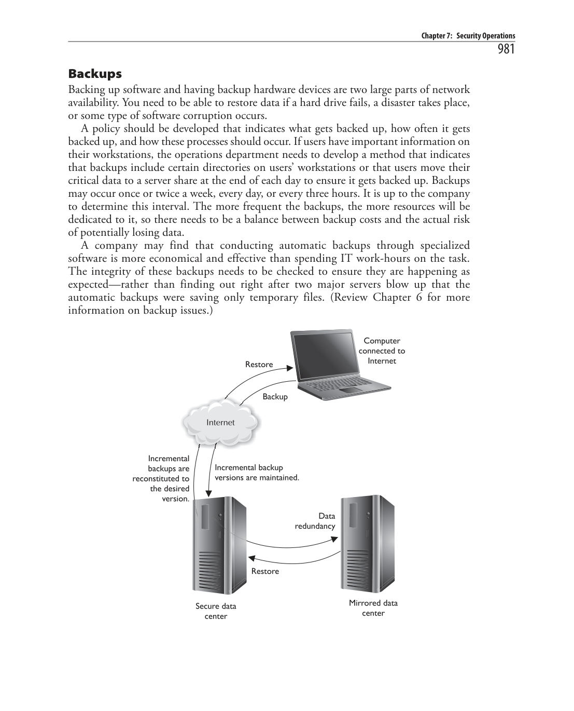
Diagram (p. 1015)
Hierarchical Storage Management
Hierarchical storage management (HSM)provides continuous online backup functionality. It combines hard disk technology with the cheaper and slower optical or tape jukeboxes. The HSM system dynamically manages the storage and recovery of files, which are copied to storage media devices that vary in speed and cost. The faster media holds the files that are accessed more often, and the seldom-used files are stored on the slower devices, ornear-linedevices, as shown in Figure 7-11. The storage media could include optical discs, magnetic disks, and tapes. This functionality happens in the background without the knowledge of the user or any need for user intervention.
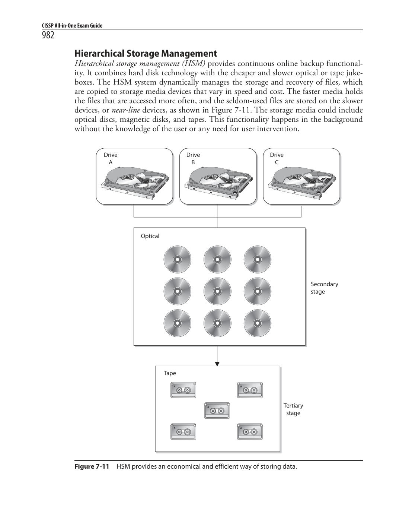
Figure 7-11HSM provides an economical and efficient way of storing data.
HSM works, according to tuning based on the trade-off between the cost of storage and the availability of information, by migrating the actual content of less used files to lower-speed, lower-cost storage, while leaving behind a “stub,” which looks to the user like it contains the full data of the migrated file. When the user or an application accesses the stub, the HSM uses the information in the stub to find the real location of the information and then retrieve it transparently for the user. This type of technology was created to save money and time. If all data was stored on hard drives, that would be expensive. If a lot of the data was stored on tapes, it would take too long to retrieve the data when needed. So HSM provides a terrific approach by providing you with the data you need, when you need it, without having to bother the administrator to track down some tape or optical disc. Backups should include the underlying operating system and applications, as well as the configuration files for both. Systems are attached to networks, and network devices can experience failures and data losses as well. Data loss of a network device usually means the configuration of the network device is lost completely (and the device will not even boot up), or that the configuration of the network device reverts to defaults (which, though it will boot up, does your network little good). Therefore, the configurations of network and other nonsystem devices (for example, the phone system) in the environment are also necessary.
Trivial File Transfer Protocol (TFTP) servers are commonly used to save the configuration settings from network devices. However, TFTP is an insecure protocol, some network settings are sensitive and should be kept confidential, and a coordinated attack is possible against network devices that load their configurations using TFTP by first causing the network device to fail and then attacking the TFTP download of the configuration to cause a malicious configuration to be loaded. Alternatives to TFTP should be sought.
Contingency Planning
When an incident strikes, more is required than simply knowing how to restore data from backups. Also necessary are the detailed procedures that outline the activities to keep the critical systems available and ensure that operations and processing are not interrupted. Contingency management defines what should take place during and after an incident. Actions that are required to take place for emergency response, continuity of operations, and dealing with major outages must be documented and readily available to the operations staff. There should be at least three instances of these documents: the original that is on site; a copy that is also on site but in a protective, fireproof safe; and a copy that is at an offsite location. Contingency plans should not be trusted until they have been tested. Organizations should carry out exercises to ensure that the staff fully understands their responsibilities and how to carry them out. Another issue to consider is how to keep these plans up-todate. As our dynamic, networked environments change, so must our plans on how to rescue them when necessary.
Although in the security industry “contingency planning” and “business continuity planning (BCP)” are commonly used interchangeably, it is important that you understand the actual difference for the CISSP exam. BCP addresses how to keep the organization in business after a disaster takes place. It is about the survivability of the organization and making sure that critical functions can still take place even after a disaster. Contingency plans address how to deal with small incidents that do not qualify as disasters, as in power outages, server failures, a down communication link to the Internet, or the corruption of software. It is important that organizations be ready to deal with large and small issues that they may run into one day.
Summary of Technologies That Improve Resource Availability
The following are the items you will most likely run into when taking the CISSP exam:
Redundant servers
- RAID, MAID, RAIT
- Direct access storage device
- Storage area networks
- Clustering
- Grid computing
- Backups
Preventative Measures
A good way to reduce the likelihood of contingencies and disasters is to ensure your defensive architectures include the right set of tools. These technical controls need to be carefully considered in the context of your own conditions to decide which are useful and which aren’t. Regardless of the tools you employ, there is an underlying process that drives their operation in a live environment. The steps of this generalized process are described here:
1.Understand the risk.Chapter 1 presented the risk management process that organizations should use. The premise of this process is that you can’t ever eliminate all risks and should therefore devote your scarce resources to mitigating the most dangerous risks to a point where their likelihood is acceptable to the senior leaders. If you don’t focus on that set of risks, you will likely squander your resources countering threats that are not the ones your CEO is really concerned about.
2.Use the right controls.Once you are focused on the right set of risks, you can more easily identify the controls that will appropriately mitigate them. The relationship between risks and controls is many to many, since a given risk can have multiple controls assigned to it and a given control can be used to mitigate multiple risks. In fact, the number of risks mitigated by one control should give you an indicator of the value of that control to the organization. On the other hand, having multiple controls mitigating a risk may be less efficient, but may provide resiliency. 3.Use the controls correctly.Selecting the right tools is only part of the battle. You also need to ensure they are emplaced and configured correctly. The network architectures covered in Chapter 4 place some very significant limitations on the effectiveness of tools based on where they are plugged in. If an IDS is deployed on the wrong subnet, it may not be able to monitor all the traffic from the threat sources against which it is supposed to defend. Similarly, that same IDS with thewrong configuration or rule set could well become an expensive ornament onthe network. 4.Manage your configuration.One of the certainties in life is that, left alone, every configuration is guaranteed to become obsolete at some point in the future. Even if it is not left alone, making unauthorized or undocumented changes will introduce risk at best and at worst quietly render your network vulnerable to an immediate threat. Properly done, configuration management will ensure you have ground truth about your network so that you can better answer the questions that are typically asked when doing security operations. 5.Assess your operation.You should constantly (or at least periodically) be looking at your defensive plan, comparing it with your latest threat and risk assessments, and asking yourself: are we still properly mitigating the risks? You should test your controls using cases derived from your risk assessment. This verifies that you are correctly mitigating those risks. However, you should also occasionally test your controls against an unconstrained set of threats in order to validate that you are mitigating the correct risks. A good penetration test (pen test) can both verify and validate the controls.
This process can yield a huge amount of possible preventative controls. There are some controls, however, that are so pervasive that every information security professional should be able to incorporate them into a defensive architecture. In the following sections, we describe the most important ones.
Firewalls
Among all preventative measures, perhaps none is more popular than the firewall. Back in Chapter 4, we discussed firewalls as network devices. We now revisit them as a common tool in many security toolkits. We should stress that this is just one tool and that it is not universal. In fact, stand-alone firewalls have been replaced in many cases by security appliances or software solutions that subsume the traditional firewall functionality and add significant other capabilities.
As always, you should start with the threat and how it creates specific risks to your organization. From there, you should clearly define the subset of risks that is appropriately mitigated by firewalls. Once you have this control-risk pairing done, you can look at your network and decide where are the best places to locate firewalls to mitigate those risks. Do you have the right number (and kind) of firewalls? Are they in the right places? In some cases, the answer to one or the other question is “no,” which will allow you to reposition or requisition your assets to better defend yourself. Obviously, the placement of firewalls is not the only concern. Firewalls operate by enforcing rules, and those rules are mostly static. The operational challenge is to both accurately track the current sets of rules and have a process to identify rules that must be added, modified, or deleted. We already touched on this idea when we discussed configuration management earlier in this chapter, and the concept is particularly applicable to firewalls. It is difficult to overstate the number of firewalls with obsolete and ineffective rules that are operating on live networks. While the use of a next-generation firewall (NGFW) simplifies this process by using connections to external data sources (like policy servers and Active Directory), even they need a formal process to ensure that the right rules get to the right places at the right time. Finally, you need a plan to routinely assess the effectiveness of your firewall defenses. To this end you simply go back to the first step in this process and look again at your threats and risks. These will drive what should be a fairly obvious set of test cases with which you will be able to answer the question we should always be asking ourselves: are we still properly mitigating the risk?
Intrusion Detection and Prevention Systems
We already covered intrusion detection systems in the context of facility security earlier in this chapter. We also covered IDSs and intrusion prevention systems (IPSs) in detail within the context of access control monitoring in Chapter 5. Let’s now turn our attention to how we might employ IDSs and IPSs in the context of network security operations. As a refresher, the main difference between an IDS and an IPS is that an IDS will only detect and report suspected intrusions, while an IPS will detect, report, and stop suspected intrusions. The types of intrusions given the highest priority should be those that have the potential to realize the risks we identified in our risk management plan. Accordingly, we must ensure that we address those threats first before we open our aperture to include others. Some organizations incorrectly assume that deploying the latest IDS/IPS technology will keep them safe, but this really depends on what exactly it is that they want to be safe from. Once we are clear on the risk we are trying to mitigate, we can start deciding which intrusion detection and prevention controls offer the best return on investment. The options include host-based intrusion detection systems (HIDSs), network intrusion detection systems (NIDSs), and wireless intrusion detection systems (WIDSs). Each may operate in detection or prevention mode depending on the specific product and how it is employed. Finally, each may be rule or anomaly based, or, in some cases, a hybrid of both.
Any inline network security device (e.g., firewall, IDS, IPS) will have a maximum rated throughput. It is imperative to match that throughput with the load on the network segment on which the device is deployed. Doing otherwise risks creating a bottleneck and/or dropping packets. Of course, the placement of network sensors is critical with IDSs/IPSs just as it is with firewalls. In principle, we want to start as close to the edge routers as we can while staying inside the perimeter. As resources and needs dictate, we can then place additional IDSs and IPSs in and/or between subnets. In most cases, we will want protection from the edge all the way to the end point (i.e., the workstation or server).
The term “perimeter” has lost some of its importance of late. While it remains an important concept in terms of security architecting, it can mislead some into imagining a wall separating us from the bad guys. A best practice is to assume the adversaries are already “inside the wire,” which downplays the importance of a perimeter in security operations. As with any other detection system, it is important to take steps to make the IDS or IPS less error-prone.False positives—that is, detecting intrusions when none happened— can lead to fatigue and desensitizing the personnel who need to examine each of these alerts. Conversely,false negativesare events that the system incorrectly classifies as benign, delaying the response until the intrusion is detected through some other means. Obviously, both are bad outcomes. Perhaps the most important step toward reducing errors is to baseline the system. Baseliningis the process of establishing the normal patterns of behavior for a given network or system. Most of us think of baselining only in terms of anomaly-based IDSs because these typically have to go through a period of learning before they can determine what is anomalous. However, even rule-based IDSs should be configured in accordance with whatever is normal for an organization. There is no such thing as a one-size-fits-all setof IDS/IPS rules, though someindividualrules may very well be applicable to all (e.g., detecting a known specimen of malware). Even after the initial configuration of the systems in the context of their specific networks or systems, we need to have a process in place for tuning our IDS/IPS to reduce false positives. Like any other change away from an established baseline, this should be part of our broader configuration management plan. This is particularly important for IDSs/IPSs, because of their dependence on whitelists and blacklists. Awhitelistis a set of known-good resources such as IP addresses, domain names, or applications. Conversely, ablacklistis a set of known-bad resources. The operation of an IDS/IPS benefits tremendously from using these lists, partly because a whitelist will likely reduce the number of false positives. Another way in which we improve the performance of these systems is by maintaining accurate asset inventories. It is very useful for an IDS to know that a specific device is authorized (or not) to run a specific application.
Antimalware
Antimalware (commonly called antivirus) software is designed to detect and neutralize malicious software, including viruses, worms, and Trojan horses. The vast majority of commercially available antimalware software is rule based, with new malware definition files automatically downloaded from the vendor on a weekly (or shorter) basis. The way this software works is by identifying a distinctive attribute of the malware, extracting that as its signature, and then updating all software systems with it. Antimalware software works by identifying malware that is already known to the vendor, which means that it may not detect new malware (or “old” malware that has been modified). There are at least a dozen major antimalware products in the market at the time of this writing. While none offers 100 percent protection against malicious software, all fall in the range of 90 to 99.9 percent effectiveness rate againstknownmalware according to independent testing. Combine this with a relatively low price compared to other security solutions, and antimalware products offer very cost-effective protection. Still, it is not difficult to develop malware that is specifically designed to be invisible to any one product. This means that if a sophisticated adversary knows which antimalware product you use, they will not have much difficulty bypassing it.
Patch Management
According to NIST Special Publication 800-40, Revision 3, “Guide to Enterprise Patch Management Technologies,” patch management is “the process for identifying, acquiring, installing, and verifying patches for products and systems.”Patchesare software updates intended to remove a vulnerability or defect in the software, or to provide new features or functionality for it. Patch management is, at least in a basic way, an established part of organizations’ IT or security operations already.
Unmanaged Patching
One approach to patch management is to use a decentralized or unmanaged model in which each software package on each device periodically checks for updates and, if any are available, automatically applies them. While this approach may seem like a simple solution to the problem, it does have significant issues that could render it unacceptably risky for an organization. Among these risks are the following:
CredentialsInstalling patches typically requires users to have admin credentials,
- which violates the principle of least privilege.
Configuration managementIt may be difficult (or impossible) to attest to
- the status of every application in the organization, which makes configuration management much more difficult.
Bandwidth utilizationHaving each application or service independently
- download the patches will lead to network congestion, particularly if there is no way to control when this will happen.
Service availabilityServers are almost never configured to automatically
- update themselves because this could lead to unscheduled outages that have a negative effect on the organization.
There is almost no advantage to decentralized patch management, except that it is better than doing nothing. The effort saved by not having management overhead is more than balanced by the additional effort you’ll have to put into responding to incidents and solving configuration and interoperability problems. Still, there may be situations in which it is not possible to actively manage some devices. For instance, if you have a highly mobile workforce or if your users are allowed to work from home using personal devices, then it would be difficult to implement the centralized approach we discuss next. In such situations, the decentralized model may be the best to take, provided you also have a way to periodically (say, each time users do connect back to the mother ship) check the status of their updates.
Centralized Patch Management
Centralized patch management is considered a best practice for security operations. There are multiple approaches to implementing it, however, so you must carefully consider the pluses and minuses of each. The most common approaches are
Agent basedIn this approach, an update agent is installed on each device. This
- agent communicates with one or more update servers and compares available patches with software and versions on the local host, updating as needed.
AgentlessAnother way to manage patches is to have one or more hosts that
- remotely connect to each device on the network using admin credentials and check the remote device for needed updates. A spin on this is the use of Active Directory objects in a domain controller to manage patch levels.
PassiveDepending on the fidelity that an organization requires, it may be
- possible to passively monitor network traffic to infer the patch levels on each networked application or service. While minimally intrusive to the end devices, this approach is also the least effective since it may not always be possible to uniquely identify software versions through their network traffic artifacts.
Regardless of the approach you take, you want to apply the patches as quickly as possible. After all, every day you delay is an extra day that your adversaries have to exploit your vulnerabilities. The truth is that you can’t (or at least shouldn’t) always roll out the patch as soon as it comes out. There is no shortage of reports of major outages caused by rolling out patches. Sometimes the fault lies with the vendor, who, perhaps in its haste to remove a vulnerability, failed to properly test that the patch wouldn’t break any other functionality of the product. Other times the patch may be rock solid and yet have a detrimental second or third order effect on other systems on your hosts or networks. This is why testing the patch before rolling it out is a good idea.
Virtualization technologies make it easier to set up a patch test lab. At a minimum, you want to replicate your critical infrastructure (e.g., domain controller and production servers) in this virtual test environment. Most organizations will also create at least one virtual machine (VM) that mimics each deployed operating system, with representative services and applications.
It is often possible to mitigate the risk created by a software vulnerability using other controls, such as rules for your firewalls, IDS, or IPS. This can buy time for you to test the patches. It also acts as a secondary control. Whether or not you are able to test the patches before pushing them out (and you really should), it is also a good idea to patch your subnets incrementally. It may take longer to get to all systems, but if something goes wrong, it will only affect a subset of your users and services. This gradual approach to patching also serves to reduce network congestion that could result from all systems attempting to download patches at the same time. Obviously, the benefits of gradual patching need to be weighed against the additional exposure that the inherent delays will cause.
Reverse Engineering Patches
Zero-day exploits are able to successfully attack vulnerabilities that are not known to the software vendor or users of its software. For that reason, they are able to bypass the vast majority of controls such as firewalls, antimalware, and IDS/IPS. Though zero-day exploits are very powerful, they are also exceptionally hard to develop and very expensive to buy in the underground markets. There is an easier and cheaper way for attackers to exploit recent vulnerabilities, and that is by reverse engineering the software patches that vendors push out. This approach takes advantage of the delay between a patch being available and it getting pushed to all the vulnerable computers in the organization. If the attacker can reverse engineer the patch faster than the defenders use it to update all computers, then the attacker wins. Some vendors are mitigating this threat by usingcode obfuscation, which, in an ironic turn of events, is a technique developed by attackers almost 30 years ago in an effort to thwart the then simple pattern-matching approach of antimalware solutions. Even with code obfuscation, it is just a matter of time before the bad guys figure out what the vulnerability is. This puts pressure on the defenders to roll out the patches across the entire organization as quickly as possible. In this haste, organizations sometimes overlook problem indicators. Add to this a healthy application of Murphy’s law and you will see why it is imperative to have a way to deal with these unknowns. Arollback plandescribes the steps by which a change is reversed in order to restore functionality or integrity.
Sandboxing
Asandboxis an application execution environment that isolates the executing code from the operating system to prevent security violations. To the code, the sandbox looks just like the environment in which it would expect to run. For instance, when we sandbox an application, it behaves as if it were communicating directly with the OS. In reality, it is interacting with another piece of software whose purpose is to ensure compliance with security policies. Another instance is that of software (such as helper objects) running in a web browser. The software acts as if it were communicating directly with the browser, but those interactions are mediated by a policy enforcer of some sort. The power of sandboxes is that they offer an additional layer of protection when running code that we are not certain is safe to execute.
Honeypots
We introduced honeypots in Chapter 4. As a refresher, ahoneypotis a device that is developed in order to deceive attackers into believing it is a real production system, entice and allow these adversaries to compromise it, and then monitor their activities on the compromised honeypot to observe and learn their behaviors. Wow! That was a mouthful! Think of honeypots as marketing devices; they are designed to attract a segment of the market, get them to buy something, and keep them coming back. Meanwhile, friendly threat analysts are keeping tabs on their adversaries’ tactics, techniques, and procedures. Let’s now look at how we can leverage this concept in other related ways. Ahoneynetis an entire network that is meant to be compromised. While it may be tempting to describe honeynets as networks of honeypots, that description might be a bit misleading. Some honeynets are simply two or more honeypots used together. However, others are designed to ascertain a specific attacker’s intent and dynamically spawn honeypots that are designed to be appealing to that particular attacker. As you can see, these very sophisticated honeynets are not networks of preexisting honeypots, but
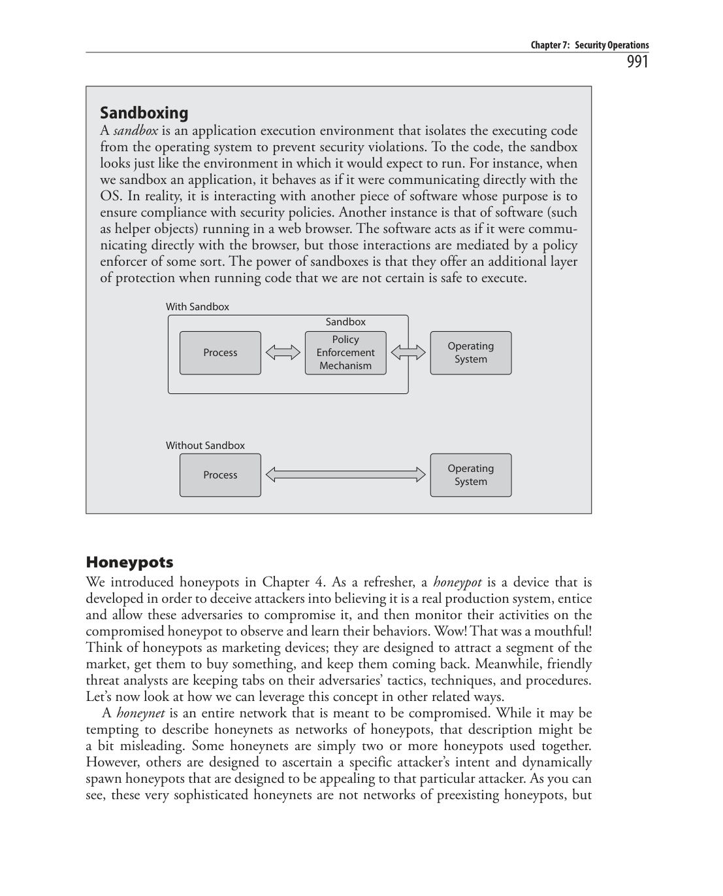
Diagram (p. 1025)
rather adaptive networks that interact with the adversaries in order to keep them engaged (and thus under observation) for as long as possible. Wrapping up the honey collection,honeyclientsare synthetic applications meant to allow an attacker to conduct a client-side attack while also allowing the friendly analysts an opportunity to observe the techniques being used by their adversaries. Honeyclients are particularly important in the honey family, because most of the successful attacks happen on the client side, and honeypots are not particularly well suited to track client-side attacks. Suppose you have a suspected phishing or spearphishing attack that you’d like to investigate. You could use a honeyclient to visit the link in the e-mail and pretend it is a real user. Instead of getting infected, however, the honeyclient safely catches all the attacks thrown at it and reports them to you. Since it is not really the web browser it is claiming to be, it will be impervious to the attack and will provide you with information about the actual tools the attacker is throwing at you. Honeyclients come in different flavors, with some being highly interactive (meaning a human has to operate them), while others involve low interaction (meaning their behavior is mostly or completely automated).
Black holes are sometimes confused with honeynets, when in reality they are almost the opposite of them. Black holes typically are routers with rules that silently drop specific (typically malicious) packets without notifying the source. They normally are used to render botnet and other known-bad traffic useless. Whereas honeypots and honeynets allow us to more closely observe our adversaries, black holes are meant to make them go away for us. It should be clear from the foregoing that honeypots and honeynets are not defensive controls like firewalls and IDSs, but rather help us collect threat intelligence. In order to be effective, they must be closely monitored by a competent threat analyst. By themselves, honeypots and honeynets will not improve your security posture. However, they can give your threat intelligence team invaluable insights into your adversaries’ methods and capabilities. Of course, honeynets and honeypots are only useful insofar as they convince the attackers that they are real production systems and not sting operations. The first key to success is to ensure that the typical probing used by attackers to determine whether or not they are being watched is thwarted. This is a game of leapfrog wherein one side makes an advance and then the other learns how to exploit it. Still, the harder you make it for attackers to notice they are in a honeypot, the more time you have to observe them. Another key to honeypot success is to provide the right kind of bait. When someone attacks your organization, what is it that they are after? Is it credit card information, patient files, intellectual property? Your honeypots should look like systems that would allow them to access the assets for which they are searching. Once compromised, the directories and files containing this information must appear to be credible. It should also take a long time to extract the information, so that we maximize the contact time with our “guests.”
The Incident Management Process
There are many incident management models, but all share some basic characteristics. They all require that we identify the event, analyze it to determine the appropriate counteractions, correct the problem(s), and, finally, keep the event from happening again. (ISC)has broken out these four basic actions and prescribes seven phases in the incident management process: detect, respond, mitigate, report, recover, remediate, and learn. Your own organization will have a unique approach, but it is helpful to baseline it off the industry standard. Although we commonly use the terms “event” and “incident” interchangeably, there are subtle differences between the two. Aneventis any occurrence that can be observed, verified, and documented, whereas anincidentis one or more related events that negatively affect the company and/or impact its security posture. This is why we call reacting to these issues “incident response” (or “incident handling”), because something is negatively affecting the company and causing a security breach. Many types of incidents (viruses, insider attacks, terrorist attacks, and so on) exist, and sometimes an incident is just human error. Indeed, many incident response individuals have received a frantic call in the middle of the night because a system is acting “weird.” The reasons could be that a deployed patch broke something, someone misconfigured a device, or the administrator just learned a new scripting language and rolled out some code that caused mayhem and confusion. When a company is victimized by a computer crime, it should leave the environment and evidence unaltered and contact whomever has been delegated to investigate these types of situations. Someone who is unfamiliar with the proper process of collecting data and evidence from a crime scene could instead destroy that evidence, and in doing so destroy all hope of prosecuting individuals and achieving a conviction. Companies should have procedures in place for many issues in computer security, such as enforcement procedures, disaster recovery and continuity procedures, and backup procedures. It is also necessary to have a procedure for dealing with computer incidents, because they have become an increasingly important issue for today’s information security departments to address. This is a direct result of the ever-increasing number of attacks against networks and information systems. Although specific numbers aren’t available due to a lack of universal reporting and reporting in general, it is clear that the volume of attacks is increasing. Just think about all the spam, phishing scams, malware, distributed denialof-service, and other attacks you see on your own network and hear about in the news. Unfortunately, many companies are at a loss as to who to call or what to do right after they have been the victim of a cybercrime. Therefore, all companies should have an incident response policy that indicates who has the authority to initiate an incident response, with supporting procedures set up before an incident takes place. This policy should be managed by the legal department and security department. They need to work together to make sure the technical security issues are covered and the legal issues that surround criminal activities are properly dealt with. The incident response policy should be clear and concise. For example, it should indicate whether systems can be taken offline to try to save evidence or must continue functioning at the risk of destroying evidence. Each system and functionality should have
a priority assigned to it. For instance, if the file server is infected, it should be removed from the network, but not shut down. However, if the mail server is infected, it should not be removed from the network or shut down because of the priority the company attributes to the mail server over the file server. Tradeoffs and decisions will have to be made, but it is better to think through these issues before the situation occurs, because better logic is usually possible before a crisis, when there’s less emotion and chaos. All organizations should develop anincident response team,as mandated by the incident response policy, to respond to the large array of possible security incidents. The purpose of having an incident response team is to ensure that there is a group of people who are properly skilled, who follow a standard set of procedures, and who are singled out and called upon when this type of event takes place. The team should have proper reporting procedures established, be prompt in their reaction, work in coordination with law enforcement, and be an important element of the overall security program. The team should consist of representatives from various business units, such as the legal department, HR, executive management, the communications department, physical/ corporate security, IS security, and information technology.
Incident Management
Incident managementincludes proactive and reactive processes. Proactive measures need to be put into place so that incidents can actually be detected in a controllable manner, and reactive measures need to be put into place so those incidents are then dealt with properly. Most organizations have only incident response processes, which walk through how an incident should be handled. A more holistic approach is an incident management program, which ensures that triggers are monitored to make sure all incidents are actually uncovered. This commonly involves log aggregation, a security information and event management system (SIEM), and user education. Having clear ways of dealing with incidents is not necessarily useful if you don’t have a way to find out if incidents are indeed taking place.
There are three different types of incident response teams that an organization can choose to put into place. Avirtualteam is made up of experts who have other duties and assignments within the organization. This type of team introduces a slower response time, and members must neglect their regular duties should an incident occur. However, apermanentteam of folks who are dedicated strictly to incident response can be cost prohibitive to smaller organizations. The third type of incident response team is ahybrid of the virtual and permanent models. Certain core members are permanently assigned to the team, whereas others are called in as needed. The incident response team should have the following basic items available:
A list of outside agencies and resources to contact or report to.
- An outline of roles and responsibilities.
- A call tree to contact these roles and outside entities.
- A list of computer or forensic experts to contact.
- A list of steps to take to secure and preserve evidence.
- A list of items that should be included in a report for management and
- potentially the courts.
A description of how the different systems should be treated in this type of
- situation. (For example, the systems should be removed from both the Internet and the network and powered down.)
When a suspected crime is reported, the incident response team should follow a set of predetermined steps to ensure uniformity in their approach and make sure no steps are skipped. First, the incident response team should investigate the report and determine that an actual crime has been committed. If the team determines that a crime has been carried out, senior management should be informed immediately. If the suspect is an employee, a human resources representative must be called right away. The sooner the documenting of events begins, the better. If someone is able to document the starting time of the crime, along with the company employees and resources involved, that provides a good foundation for evidence. At this point, the company must decide if it wants to conduct its own forensic investigation or call in experts. If experts are going to be called in, the system that was attacked should be left alone in order to try and preserve as much evidence of the attack as possible. If the company decides to conduct its own forensic investigation, it must deal with many issues and address tricky elements. (Forensics will be discussed later in this chapter.) Computer networks and business processes face many types of threats, each requiring a specialized type of recovery. However, an incident response team should draft and enforce a basic outline of howallincidents are to be handled. This is a much better approach than the way many companies deal with these threats, which is usually in an ad hoc, reactive, and confusing manner. A clearly defined incident-handling process is more cost effective, enables recovery to happen more quickly, and provides a uniform approach with certain expectation of its results. Incident handling should be closely related to disaster recovery planning and should be part of the company’s disaster recovery plan, usually as an appendix. Both are intended to react to some type of incident that requires a quick response so the company can return to normal operations. Incident handling is a recovery plan that responds to malicious technical threats. The primary goal of incident handling is to contain and mitigate any damage caused by an incident and to prevent any further damage. This is commonly done by detecting a problem, determining its cause, resolving the problem, and documenting the entire process. Without an effective incident-handling program, individuals who have the best intentions can sometimes make the situation worse by damaging evidence, damaging systems, or spreading malicious code. Many times, the attacker booby-traps the compromised system to erase specific critical files if a user does something as simple as list the files in a directory. A compromised system can no longer be trusted because the internal commands listed in the path could be altered to perform unexpected activities.
The system could now have a back door for the attacker to enter when he wants, or could have a logic bomb silently waiting for a user to start snooping around only to destroy any and all evidence. Incident handling should also be closely linked to the company’s security training and awareness program to ensure that these types of mishaps do not take place. Past issues that the incident recovery team encountered can be used in future training sessions to help others learn what the company is faced with and how to improve response processes. Employees need to know how to report an incident. Therefore, the incident response policy should detail an escalation process so that employees understand when evidence of a crime should be reported to higher management, outside agencies, or law enforcement. The process must be centralized, easy to accomplish (or the employees won’t bother), convenient, and welcomed. Some employees feel reluctant to report incidents because they are afraid they will get pulled into something they do not want to be involved with or accused of something they did not do. There is nothing like trying to do the right thing and getting hit with a big stick. Employees should feel comfortable about the process, and not feel intimidated by reporting suspicious activities. The incident response policy should also dictate how employees should interact with external entities, such as the media, government, and law enforcement. This, in particular, is a complicated issue influenced by jurisdiction, the status and nature of the crime, and the nature of the evidence. Jurisdiction alone, for example, depends on the country, state, or federal agency that has control. Given the sensitive nature of public disclosure, communications should be handled by communications, human resources, or other appropriately trained individuals who are authorized to publicly discuss incidents. Public disclosure of an event can lead to two possible outcomes. If not handled correctly, it can compound the negative impact of an incident. For example, given today’s information-driven society, denial and “no comment” may result in a backlash. On the other hand, if public disclosure is handled well, it can provide the organization with an opportunity to win back public trust. Some countries and jurisdictions either already have or are contemplating breach disclosure laws that require organizations to notify the public if a security breach involving personally identifiable information is even suspected. So it’s to your benefit to make sure you are open and forthright with third parties. A sound incident-handling program works with outside agencies and counterparts. The members of the team should be on the mailing list of the Computer Emergency Response Team (CERT) so they can keep up-to-date about new issues and can spot malicious events, hopefully before they get out of hand. CERT is an organization that is responsible for monitoring and advising users and companies about security preparation and security breaches.
Resources for CERT can be found at https://www.cert.org/incidentmanagement/.
The Cyber Kill Chain
Even as we think about how best to manage incidents, it is helpful to consider a model for the attacker’s behaviors. In their seminal 2011 paper titled “Intelligence- Driven Computer Network Defense Informed by Analysis of Adversary Campaigns and Intrusion Kill Chains,” Hutchins, Cloppert, and Amin describe a seven-stage intrusion model that has become an industry standard. Their seven stages are described here:
1.ReconnaissanceThe adversary has developed an interest in your organization as a target and begins a deliberate information-gathering effort to find vulnerabilities. 2.WeaponizationArmed with detailed-enough information, the adversary determines the best way into your systems and begins preparing and testing the weapons to be used against you. 3.DeliveryIn this phase, the cyber weapon is delivered into your system. Inover 95 percent of the published cases, this delivery happens via e-mail and usually in the form of a link to a malicious website. 4.ExploitationThe malicious software is executing on a CPU within your network. This may have launched when the target user clicked a link, opened an attachment, visited a website, or plugged in a USB thumb drive. It could also (in somewhat rare cases) be the result of a remote exploit. One way or another, the attacker’s software is now running in your systems. 5.InstallationMost malicious software is delivered in stages. First, there is the exploit that compromised the system in the prior step. Then, some other software is installed in the target system to ensure persistence, ideally with a good measure of stealth. 6.Command and Control (C&C)Once the first two stages of the software (exploit and persistence) have been executed, most malware will “phone home” to the attackers to let them know the attack was successful and to request updates and instructions. 7.Actions on the ObjectiveFinally, the malware is ready to do whatever it is it was designed to do. Perhaps the intent is to steal intellectual property and send it to an overseas server. Or perhaps this particular effort is an early phase in a grander attack, so the malware will pivot off the compromised system. Whatever the case, the attacker has won at this point.
As you can probably imagine, the earlier in the kill chain we identify the attack, the greater our odds are of preventing the adversaries from achieving their objectives.
(Continued)
This is a critical concept in this model: if you can thwart the attack before stage four (exploitation), you stand a better chance of winning. Early detection, then, is the key to success.
Detection
The first and most important step in responding to an incident is to realize that you have a problem in the first place. Despite an abundance of sensors, this can be harder than it sounds for a variety of reasons. First, sophisticated adversaries may use tools and techniques that you are unable to detect (at least at first). Even if the tools or techniques are known to you, they may very well be hiding under a mound of false positives in your SIEMs. In some (improperly tuned) systems, the ratio of false positives to true positives can be ten to one (or higher). This underscores the importance of tuning your sensors and analysis platforms to reduce the rate of false positive as much as possible.
Response
Having detected the incident, the next step is to determine what the appropriate response might be. Though the instinctive reaction may be to clean up the infected workstation or add rules to your firewalls, IDS, and IPS, this well-intentioned response could lead you on an endless game of whack-a-mole or, worse yet, blind you to the adversary’s real objective. What do you know about the adversary? Who is it? What are they after? Is this tool and its use consistent with what you have already seen? Part of the early stages of a response is to figure out what information you need in order to restore security. This is the substage of analysis, where more data is gathered (audit logs, video captures, human accounts of activities, system activities) to try and figure out the root cause of the incident. The goals are to figure out who did this, how they did it, when they did it, and why. Management must be continually kept abreast of these activities because they will be making the big decisions on how this situation is to be handled. The group of individuals who make up the response team must have a variety of skills. They must also have a solid understanding of the systems affected by the incident, the system and application vulnerabilities, and the network and system configurations.
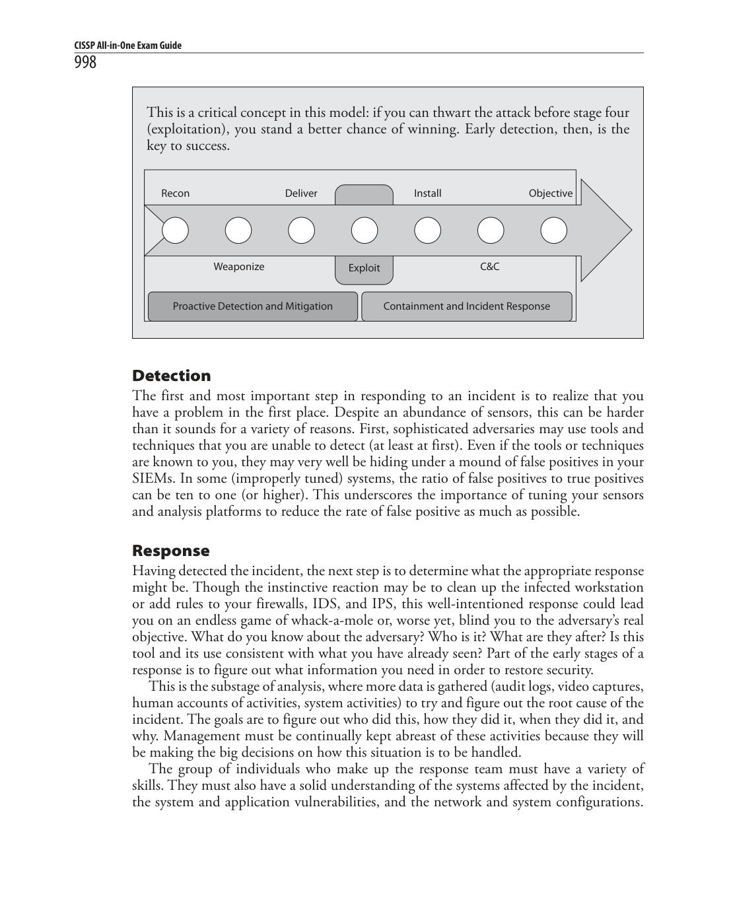
Diagram (p. 1032)
Although formal education is important, real-world applied experience combined with proper training is key for these folks. One of the biggest challenges the response team faces is the dynamic nature of logs. Many systems are configured to purge or overwrite their logs in a short timeframe, and time is lost the moment the incident occurs. Several hours may pass before an incident is reported or detected. Some countries are considering legislation that would require longer log file retention. However, such laws pose privacy and storage challenges. Once you have a hypothesis about the adversary’s goals and plans, you can test it. If this particular actor is usually interested in PII on your high-net-worth clients but the incident you detected was on a (seemingly unrelated) host in the warehouse, was that an initial entry or pivot point? If so, then you may have caught them before they worked their way further along the kill chain. But what if you got your attribution wrong? How could you test for that? This chain of questions, combined with quantifiable answers from your systems, forms the basis for an effective response. To quote the famous hockey player Wayne Gretzky, we should all “skate to where the puck is going to be, not where it has been.”
It really takes a fairly mature threat intelligence capability to determine who is behind an attack (attribution), what are their typical tools, techniques, and procedures, and what might be their ultimate objective. If you do not have this capability, you may have no choice but to respond only to what you’re detecting, without regard for what they may actually betrying to do.
Mitigation
By this point in the incident response process, you should know what happened as well as what you think is likely to happen next. The next step is tomitigateor contain the damage that has been or is about to be done to your most critical assets, followed by mitigation of less important assets. Returning to the earlier PII example, a naïve response could be to take the infected system (in the warehouse) offline and preserve evidence. The problem is that if that system was simply an entry or pivot point, you may very well already be behind your adversary. Unless you look for other indicators, how would you know whether they already compromised the next system in the chain? Why bother quarantining a host that has already served its purpose (to your adversaries) when you haven’t yet taken a look at the (presumed) ultimate target? The goal of mitigation is to prevent or reduce any further damage from this incident so that you can begin to recover and remediate. A proper mitigation strategy buys the incident response team time for a proper investigation and determination of the incident’s root cause. The mitigation strategy should be based on the category of the attack (that is, whether it was internal or external), the assets affected by the incident, and the criticality of those assets. So what kind of mitigation strategy is best? Well, it depends. Mitigation strategies can be proactive or reactive. Which is best depends on the environment and the
category of the attack. In some cases, the best action might be to disconnect the affected system from the network. However, this reactive approach could cause a denial of service or limit functionality of critical systems. When complete isolation or containment is not a viable solution, you may opt to use network segmentation to virtually isolate a system or systems. Boundary devices can also be used to stop one system from infecting another. Another reactive strategy involves reviewing and revising firewall/filtering router rule configuration. Access control lists can also be applied to minimize exposure. These mitigation strategies indicate to the attacker that his attack has been noticed and countermeasures are being implemented. But what if, in order to perform a root cause analysis, you need to keep the affected system online and not let on that you’ve noticed the attack? In this situation, you might consider installing a honeynet or honeypot to provide an area that will contain the attacker but pose minimal risk to the organization. This decision should involve legal counsel and upper management because honeynets and honeypots can introduce liability issues. Once the incident has been contained, you need to figure out what just happened by putting the available pieces together.
Reporting
Though we discuss reporting here in order to remain consistent with (ISC), incident reporting and documentation occurs at various stages in the response process. In many cases involving sophisticated attackers, the response team first learns of the incident because someone else reports it. Whether it is an internal user, an external client or partner, or even a three-letter government entity, this initial report becomes the start point of the entire process. In more mundane cases, we become aware that something is amiss thanks to a vigilant member of the security staff or one of the sensors deployed to detect attacks. However we learn of the incident, this first report starts what should be a continuous process of documentation. According to NIST Special Publication 800-61, Revision 2, “Computer Security Incident Handling Guide,” the following information should be reported for each incident:
Summary of the incident
- Indicators
- Related incidents
- Actions taken
- Chain of custody for all evidence (if applicable)
- Impact assessment
- Identity and comments of incident handlers
- Next steps to be taken
Recovery
Once the incident is mitigated, you must turn your attention to the recovery phase, in which you return all systems and information to a known-good state. It is important to gather evidence before you recover systems and information. The reason is that in many cases you won’t know that you will need legally admissible evidence until days, weeks, or even months after an incident. It pays, then, to treat each incident as if it will eventually end up in a court of justice. Once all relevant evidence is captured, you can begin to fix all that was broken. The aim is to restore full, trustworthy functionality to the organization. For hosts that were compromised, the best practice is to simply reinstall the system from a gold master image and then restore data from the most recent backup that occurred prior to the attack. You may also have to roll back transactions and restore databases from backup systems. Once you are done, it is as if the incident never happened. Well, almost.
An attacked or infected system should never be trusted, because you do not necessarily know all the changes that have taken place and the true extent of the damage. Some malicious code could still be hiding somewhere. Systems should be rebuilt to ensure that all of the potential bad mojo has been released by carrying out a proper exorcism.
Remediation
It is not enough to put the pieces of Humpty Dumpty back together again. You also need to ensure that the attack is never again successful. During the mitigation phase, you identified quick fixes to neutralize or reduce the effectiveness of the incident. Now, in the remediation phase, you decide which of those measures (e.g., firewall or IDS/IPS rules) need to be made permanent and which additional controls may be needed. Another aspect of remediation is the identification of your indicators of attack (IOA) that can be used in the future to detect this attack in real time (i.e., as it is happening) as well as indicators of compromise (IOC), which tell you when an attack has been successful and your security has been compromised. Typical indicators of both attack and compromise include the following.
Outbound traffic to a particular IP address or domain name
- Abnormal DNS query patterns
- Unusually large HTTP requests and/or responses
- DDoS traffic
- New Registry entries (in Windows systems)
- At the conclusion of the remediation phase, you have a high degree of confidence that this particular attack will never again be successful against your organization. Ideally, you should share your lessons learned in the form of IOAs and IOCs with the community so
that no other organization can be exploited in this manner. This kind of collaboration with partners (and even competitors) makes the adversary have to work harder.
Learning as Part of the Incident Response Process
Closure of an incident is determined by the nature or category of the incident, the desired incident response outcome (for example, business resumption or system restoration), and the team’s success in determining the incident’s source and root cause. Once it is determined that the incident is closed, it is a good idea to have a team briefing that includes all groups affected by the incident to answer the following questions:
What happened?
- What did we learn?
- How can we do it better next time?
- The team should review the incident and how it was handled and carry out a postmortem analysis. The information that comes out of this meeting should indicate what needs to go into the incident response process and documentation, with the goal of continual improvement. Instituting a formal process for the briefing will provide the team with the ability to start collecting data that can be used to track its performance metrics.
Disaster Recovery
So far we have discussed preventing and responding to security incidents as part of standard security operations. These are things we do day in and day out. But what happens on those rare occasions when an incident has disastrous effects? This is a great point at which to circle back to a discussion we started in Chapter 1 on business continuity planning. Recall that we discussed the role of maximum tolerable downtime (MTD) values. In reality, basic MTD values are a good start, but are not granular enough for a company to figure out what it needs to put into place to be able to absorb the impact of a disaster. MTD values are usually “broad strokes” that do not provide enough detail to help pinpoint the actual recovery solutions that need to be purchased and implemented. For example, if the BCP team determines that the MTD value for the customer service department is 48 hours, this is not enough information to fully understand what redundant solutions or backup technology should be put into place. MTD in this example does provide a basic deadline that means if customer service is not up within 48 hours, the company may not be able to recover and everyone should start looking for new jobs. As shown in Figure 7-12, more than just MTD metrics are needed to get production back to normal operations after a disruptive event. We will walk through each of these metric types and see how they are best used together. Therecovery time objective (RTO)is the maximum time period within which a business process must be restored to a designated service level after a disaster to avoid unacceptable
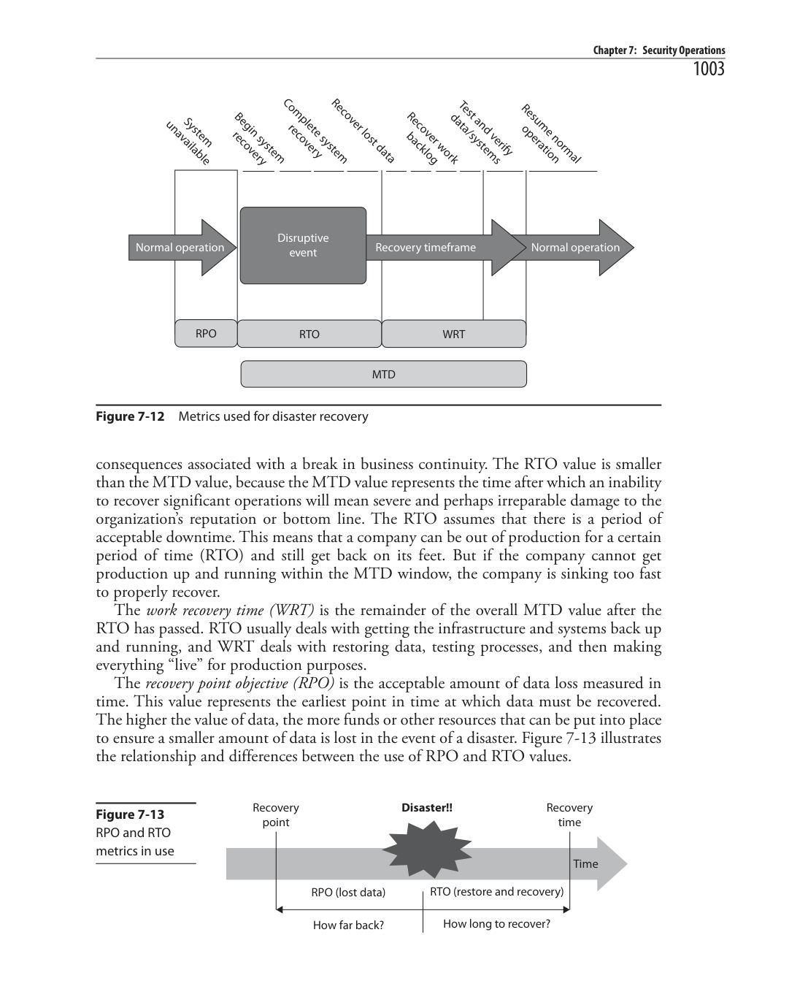
Figure 7-12Metrics used for disaster recovery
consequences associated with a break in business continuity. The RTO value is smaller than the MTD value, because the MTD value represents the time after which an inability to recover significant operations will mean severe and perhaps irreparable damage to the organization’s reputation or bottom line. The RTO assumes that there is a period of acceptable downtime. This means that a company can be out of production for a certain period of time (RTO) and still get back on its feet. But if the company cannot get production up and running within the MTD window, the company is sinking too fast to properly recover. Thework recovery time (WRT)is the remainder of the overall MTD value after the RTO has passed. RTO usually deals with getting the infrastructure and systems back up and running, and WRT deals with restoring data, testing processes, and then making everything “live” for production purposes. Therecovery point objective (RPO)is the acceptable amount of data loss measured in time. This value represents the earliest point in time at which data must be recovered. The higher the value of data, the more funds or other resources that can be put into place to ensure a smaller amount of data is lost in the event of a disaster. Figure 7-13 illustrates the relationship and differences between the use of RPO and RTO values.
The RTO, RPO, and WRT values are critical to understand because they will be the basic foundational metrics used when determining the type of recovery solutions a company must put into place, so let’s dig a bit deeper into them. As an example of RTO, let’s say a company has determined that if it is unable to process product order requests for 12 hours, the financial hit will be too large for it to survive. So the company develops methods to ensure that orders can be processed manually if their automated technological solutions become unavailable. But if it takes the company 24 hours to actually stand up the manual processes, the company could be in a place operationally and financially where it can never fully recover. So RTO deals with “how much time do we have to get everything up and working again?” Now let’s say that the same company experienced a disaster and got its manual processes up and running within two hours, so it met the RTO requirement. But just because business processes are back in place, the company still might have a critical problem. The company has to restore the data it lost during the disaster. It does no good to restore data that is a week old. The employees need to have access to the data that was being processed right before the disaster hit. If the company can only restore data that is a week old, then all the orders that were in some stage of being fulfilled over the last seven days could be lost. If the company makes an average of $25,000 per day in orders and all the order data was lost for the last seven days, this can result in a loss of $175,000 and a lot of unhappy customers. So just getting things up and running (RTO) is part of the picture. Getting the necessary data in place so that business processes are up-to-date and relevant (RPO) is just as critical. To take things one step further, let’s say the company stood up its manual order-filling processes in two hours. It also had real-time data backup systems in place, so all of the necessary up-to-date data is restored. But no one actually tested these manual processes, everyone is confused, and orders still cannot be processed and revenue cannot be collected. This means the company met its RTO requirement and its RPO requirement, but failed its WRT requirement, and thus failed the MTD requirement. Proper business recovery meansallof the individual things have to happen correctly for the overall goal to be successful.
An RTO is the amount of time it takes to recover from a disaster, and an RPO is the amount of acceptable data, measured in time, that can be lost from that same event. The actual MTD, RTO, and RPO values are derived during the business impact analysis (BIA), the purpose of which is to be able to apply criticality values to specific business functions, resources, and data types. A simplistic example is shown in Table 7-3. The company must have data restoration capabilities in place to ensure that missioncritical data is never older than one minute. The company cannot rely on something as slow as backup tape restoration, but must have a high-availability data replication solution in place. The RTO value for mission-critical data processing is two minutes or less. This means that the technology that carries out the processing functionality for
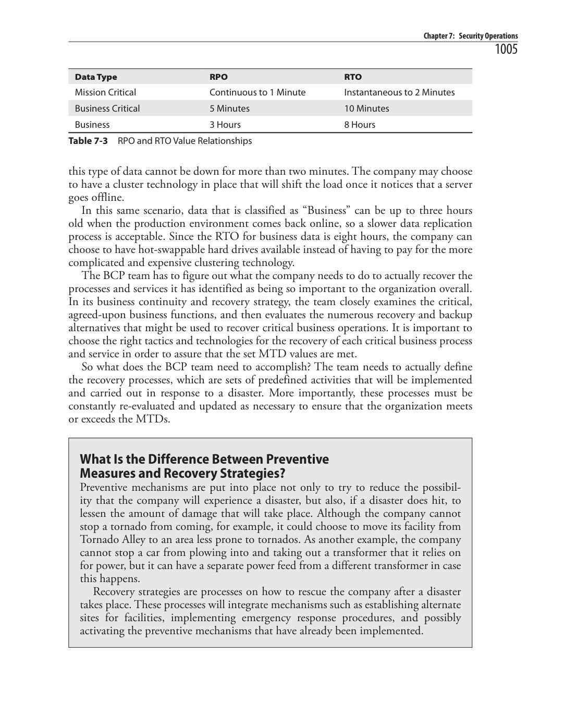
Mission CriticalContinuous to 1 MinuteInstantaneous to 2 Minutes
this type of data cannot be down for more than two minutes. The company may choose to have a cluster technology in place that will shift the load once it notices that a server goes offline. In this same scenario, data that is classified as “Business” can be up to three hours old when the production environment comes back online, so a slower data replication process is acceptable. Since the RTO for business data is eight hours, the company can choose to have hot-swappable hard drives available instead of having to pay for the more complicated and expensive clustering technology. The BCP team has to figure out what the company needs to do to actually recover the processes and services it has identified as being so important to the organization overall. In its business continuity and recovery strategy, the team closely examines the critical, agreed-upon business functions, and then evaluates the numerous recovery and backup alternatives that might be used to recover critical business operations. It is important to choose the right tactics and technologies for the recovery of each critical business process and service in order to assure that the set MTD values are met. So what does the BCP team need to accomplish? The team needs to actually define the recovery processes, which are sets of predefined activities that will be implemented and carried out in response to a disaster. More importantly, these processes must be constantly re-evaluated and updated as necessary to ensure that the organization meets or exceeds the MTDs.
What Is the Difference Between Preventive
Measures and Recovery Strategies?
Preventive mechanisms are put into place not only to try to reduce the possibility that the company will experience a disaster, but also, if a disaster does hit, to lessen the amount of damage that will take place. Although the company cannot stop a tornado from coming, for example, it could choose to move its facility from Tornado Alley to an area less prone to tornados. As another example, the company cannot stop a car from plowing into and taking out a transformer that it relies on for power, but it can have a separate power feed from a different transformer in case this happens. Recovery strategies are processes on how to rescue the company after a disaster takes place. These processes will integrate mechanisms such as establishing alternate sites for facilities, implementing emergency response procedures, and possibly activating the preventive mechanisms that have already been implemented.
Business Process Recovery
A business process is a set of interrelated steps linked through specific decision activities to accomplish a specific task. Business processes have starting and ending points and are repeatable. The processes should encapsulate the knowledge about services, resources, and operations provided by a company. For example, when a customer requests to buy a book via an organization’s e-commerce site, a set of steps must be followed, such as these:
1.Validate that the book is available. 2.Validate where the book is located and how long it would take to ship it to the destination. 3.Provide the customer with the price and delivery date. 4.Verify the customer’s credit card information. 5.Validate and process the credit card order. 6.Send a receipt and tracking number to the customer. 7.Send the order to the book inventory location. 8.Restock inventory. 9.Send the order to accounting.
The BCP team needs to understand these different steps of the company’s most critical processes. The data is usually presented as a workflow document that contains the roles and resources needed for each process. The BCP team must understand the following about critical business processes:
Required roles
- Required resources
- Input and output mechanisms
- Workflow steps
- Required time for completion
- Interfaces with other processes
- This will allow the BCP team to identify threats and the controls to ensure the least amount of process interruption.
Facility Recovery
Disruptions, in BCP terms, are of three main types: nondisasters, disasters, and catastrophes. Anondisasteris a disruption in service that has significant but limited impact on the conduct of business processes at a facility. The solution could include hardware, software, or file restoration. Adisasteris an event that causes the entire facility to be unusable for a day or longer. This usually requires the use of an alternate processing facility and restoration of software and data from offsite copies. The alternate site must
be available to the company until its main facility is repaired and usable. Acatastrophe is a major disruption that destroys the facility altogether. This requires both a shortterm solution, which would be an offsite facility, and a long-term solution, which may require rebuilding the original facility. Disasters and catastrophes are rare compared to nondisasters, thank goodness. An organization has various recovery alternatives to choose from, such as a redundant site, outsourcing, a rented offsite installation, or a reciprocal agreement with another organization. The organization has three basic options: select a dedicated site that the organization operates itself; lease a commercial facility, such as a “hot site” that contains all the equipment and data needed to quickly restore operations; or enter into a formal agreement with another facility, such as a service bureau, to restore its operations. In all these cases, the organization estimates the alternative’s ability to support its operations, to do it quickly, and to do it at a fair cost. It should closely query the alternative facility about such things as: How long will it take to recover from a certain incident to a certain level of operations? Will it give priority to restoring the operations of one organization over another after a disaster? What are its costs for performing various functions? What are its specifications for IT and security functions? Is the workspace big enough for the required number of employees? An important consideration with third parties is their reliability, both in normal times and during an emergency. Their reliability can depend on considerations such as their track record, the extent and location of their supply inventory, and their access to supply and communication channels. For larger disasters that affect the primary facility, an offsite backup facility must be accessible. Generally, contracts are established with third-party vendors to provide such services. The client pays a monthly fee to retain the right to use the facility in a time of need, and then incurs an activation fee when the facility actually has to be used. In addition, there would be a daily or hourly fee imposed for the duration of the stay. This is why subscription services for backup facilities should be considered a short-term solution, not a long-term solution. It is important to note that most recovery site contracts do not promise to house the company in need at a specific location, but rather promise to provide what has been contracted for somewhere within the company’s locale. On, and subsequent to, September 11, 2001, many organizations with Manhattan offices were surprised when they were redirected by their backup site vendor not to sites located in New Jersey (which were already full), but rather to sites located in Boston, Chicago, or Atlanta. This adds yet another level of complexity to the recovery process, specifically the logistics of transporting people and equipment to unplanned locations. Companies can choose from three main types of leased or rented offsite facilities:
Hot siteA facility that is leased or rented and is fully configured and ready to
- operate within a few hours. The only missing resources from a hot site are usually the data, which will be retrieved from a backup site, and the people who will be processing the data. The equipment and system software must absolutely be compatible with the data being restored from the main site and must not cause any negative interoperability issues. Some facilities, for a fee, store data backups
close to the hot site. These sites are a good choice for a company that needs to ensure a site will be available for it as soon as possible. Most hot-site facilities support annual tests that can be done by the company to ensure the site is functioning in the necessary state of readiness. This is the most expensive of the three types of offsite facilities. It can pose problems if a company requires proprietary or unusual hardware or software.
To attract the largest customer base, the vendor of a hot site will provide the most commonly used hardware and software products. This most likely will not include the specific customer’s proprietary or unusual hardware or software products. Warm siteA leased or rented facility that is usually partially configured with
- some equipment, such as HVAC, and foundational infrastructure components, but not the actual computers. In other words, a warm site is usually a hot site without the expensive equipment such as communication equipment and servers. Staging a facility with duplicate hardware and computers configured for immediate operation is extremely expensive, so a warm site provides an alternate facility with some peripheral devices.
This is the most widely used model. It is less expensive than a hot site, and can be up and running within a reasonably acceptable time period. It may be a better choice for companies that depend upon proprietary and unusual hardware and software, because they will bring their own hardware and software with them to the site after the disaster hits. Drawbacks, however, are that much of the equipment has to be procured, delivered to, and configured at the warm site after the fact, and the annual testing available with hot-site contracts is not usually available with warm-site contracts. Thus, a company cannot be certain that it will in fact be able to return to an operating state within hours. Cold siteA leased or rented facility that supplies the basic environment,
- electrical wiring, air conditioning, plumbing, and flooring, but none of the equipment or additional services. A cold site is essentially an empty data center. It may take weeks to get the site activated and ready for work. The cold site could have equipment racks and dark fiber (fiber that does not have the circuit engaged) and maybe even desks. However, it would require the receipt of equipment from the client, since it does not provide any.
The cold site is the least expensive option, but takes the most time and effort to actually get up and functioning right after a disaster, as the systems and software must be delivered, set up, and configured. Cold sites are often used as backups for call centers, manufacturing plants, and other services that can be moved lock, stock, and barrel in one shot.
After a catastrophic loss of the primary facility, some places will start their recovery in a hot or warm site, and transfer some operations over to a cold site after the latter has had time to set up.
It is important to understand that the different site types listed here are provided by service bureaus. Aservice bureauis a company that has additional space and capacity to provide applications and services such as call centers. A company pays a monthly subscription fee to a service bureau for this space and service. The fee can be paid for contingencies such as disasters and emergencies. You should evaluate the ability of a service bureau to provide services as you would divisions within your own organization, particularly on matters such as its ability to alter or scale its software and hardware configurations or to expand its operations to meet the needs of a contingency.
Related to a service bureau is acontingency company; its purpose is to supply services and materials temporarily to an organization that is experiencing an emergency. For example, a contingent supplier might provide raw materials such as heating fuel or backup telecommunication services. In considering contingent suppliers, the BCP team should think through considerations such as the level of services and materials a supplier can provide, how quickly a supplier can ramp up to supply them, and whether the supplier shares similar communication paths and supply chains as the affected organization. Most companies usewarm sites, which have some devices such as disk drives, tape drives, and controllers, but very little else. These companies usually cannot afford a hot site, and the extra downtime would not be considered detrimental. A warm site can provide a longer-term solution than a hot site. Companies that decide to go with acold sitemust be able to be out of operation for a week or two. The cold site usually includes power, raised flooring, climate control, and wiring. The following provides a quick overview of the differences between offsite facilities: Hot Site Advantages Ready within hours for operation
- Highly available
- Usually used for short-term solutions, but available for longer stays
- Annual testing available
- Hot Site Disadvantages
Very expensive
- Limited on hardware and software choices
- Warm and Cold Site Advantages
Less expensive
- Available for longer timeframes because of the reduced costs
- Practical for proprietary hardware or software use
- Warm and Cold Site Disadvantages
Operational testing not usually available
- Resources for operations not immediately available
Tertiary Sites
The BCP team may recognize the danger of the primary backup facility not being available when needed, which could require a tertiary site. This is a secondary backup site, just in case the primary backup site is unavailable. The secondary backup site is sometimes referred to as a “backup to the backup.” This is basically plan B if plan A does not work out.
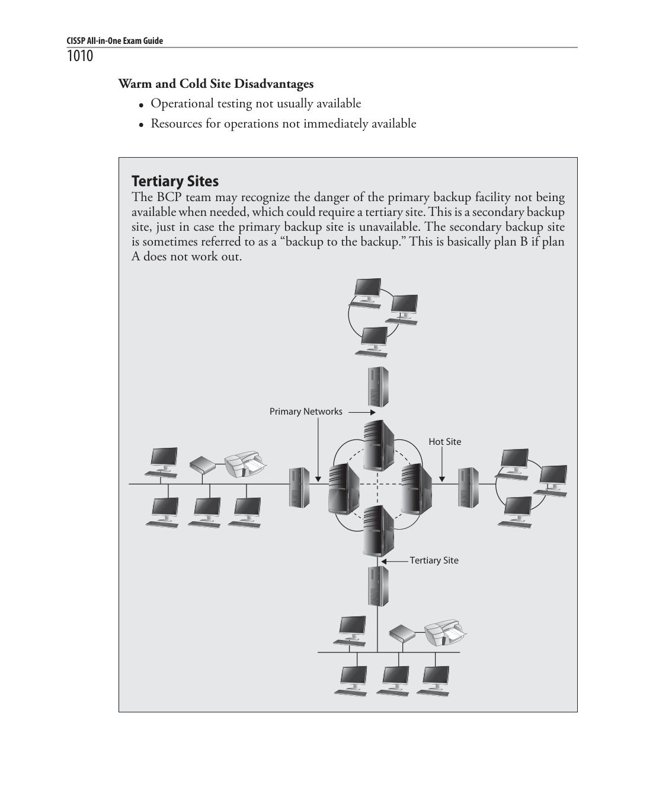
Diagram (p. 1044)
Backup tapes or other media should be tested periodically on the equipment kept at the hot site to make sure the media is readable by those systems. If a warm site is used, the tapes should be brought to theoriginalsite and tested on those systems. The reason for the difference is that when a company uses a hot site, it depends on the systems located at the hot site; therefore, the media needs to be readable by those systems. If a company depends on a warm site, it will most likely bring its original equipment with it, so the media needs to be readable by the company’s systems.
Reciprocal Agreements
Another approach to alternate offsite facilities is to establish areciprocal agreementwith another company, usually one in a similar field or that has similar technological infrastructure. This means that company A agrees to allow company B to use its facilities if company B is hit by a disaster, and vice versa. This is a cheaper way to go than the other offsite choices, but it is not always the best choice. Most environments are maxed out pertaining to the use of facility space, resources, and computing capability. To allow another company to come in and work out of the same shop could prove to be detrimental to both companies. Whether it can assist the other company while tending effectively to its own business is an open question. The stress of two companies working in the same environment could cause tremendous levels of tension. If it did work out, it would only provide a short-term solution. Configuration management could be a nightmare. Does the other company upgrade to new technology and retire old systems and software? If not, one company’s systems may become incompatible with that of the other company If you allow another company to move into your facility and work from there, you may have a solid feeling about your friend, the CEO, but what about all of her employees, whom you do not know? The mixing of operations could introduce many security issues. Now you have a new subset of people who may need to have privileged and direct access to your resources in the shared environment. This other company could be your competitor in the business world, so many of the employees may see you and your company more as a threat than one that is offering a helping hand in need. Close attention needs to be paid when assigning these other people access rights and permissions to your critical assets and resources, if they need access at all. Careful testing is recommended to see if one company or the other can handle the extra loads.
Offsite Location
When choosing a backup facility, it should be far enough away from the original site so that one disaster does not take out both locations. In other words, it is not logical to have the backup site only a few miles away if the company is concerned about tornado damage, because the backup site could also be affected or destroyed. There is a rule of thumb that suggests that alternate facilities should be, at a bare minimum, at least 5 miles away from the primary site, while 15 miles is recommended for most low-to-medium critical environments, and 50 to 200 miles is recommended for critical operations to give maximum protection in cases of regional disasters.
Reciprocal agreements have been known to work well in specific businesses, such as newspaper printing. These businesses require very specific technology and equipment that will not be available through any subscription service. These agreements follow a “you scratch my back and I’ll scratch yours” mentality. For most other organizations, reciprocal agreements are generally, at best, a secondary option for disaster protection. The other issue to consider is that these agreements are not enforceable. This means that although company A said company B could use its facility when needed, when the need arises, company A legally does not have to fulfill this promise. However, there are still many companies who do opt for this solution either because of the appeal of low cost or, as noted earlier, because it may be the only viable solution in some cases. Important issues need to be addressed before a disaster hits if a company decides to participate in a reciprocal agreement with another company:
How long will the facility be available to the company in need?
- How much assistance will the staff supply in integrating the two environments
- and ongoing support?
How quickly can the company in need move into the facility?
- What are the issues pertaining to interoperability?
- How many of the resources will be available to the company in need?
- How will differences and conflicts be addressed?
- How does change control and configuration management take place?
- How often can drills and testing take place?
- How can critical assets of both companies be properly protected?
- A variation on a reciprocal agreement is a consortium, ormutual aid agreement. In this case, more than two organizations agree to help one another in case of an emergency. Adding multiple organizations to the mix, as you might imagine, can make things even more complicated. The same concerns that apply with reciprocal agreements apply here, but even more so. Organizations entering into such agreements need to formally and legally write out their mutual responsibilities in advance. Interested parties, including the legal and IT departments, should carefully scrutinize such accords before the organization signs onto them.
Redundant Sites
Some companies choose to haveredundant sites, or mirrored sites, meaning one site is equipped and configured exactly like the primary site, which serves as a redundant environment. The business-processing capabilities between the two sites can be completely synchronized. These sites are owned by the company and are mirrors of the original production environment. A redundant site has clear advantages: it has full availability, is ready to go at a moment’s notice, and is under the organization’s complete control. This is, however, one of the most expensive backup facility options, because a full environment must be maintained even though it usually is not used for regular production activities
until after a disaster takes place that triggers the relocation of services to the redundant site. But “expensive” is relative here. If the company would lose a million dollars if it were out of business for just a few hours, the loss potential would override the cost of this option. Many organizations are subjected to regulations that dictate they must have redundant sites in place, so expense is not a matter of choice in these situations.
Ahotsite is a subscription service.Aredundantsite, in contrast, is a site owned and maintained by the company, meaning the company does not pay anyone else for the site.A redundant site might be “hot” in nature, meaning it is ready for production quickly. However, the CISSP exam differentiates between a hot site (a subscription service) and a redundant site (owned by the company). Another type of facility-backup option is arolling hot site, or mobile hot site, where the back of a large truck or a trailer is turned into a data processing or working area. This is a portable, self-contained data facility. The trailer has the necessary power, telecommunications, and systems to do some or all of the processing right away. The trailer can be brought to the company’s parking lot or another location. Obviously, the trailer has to be driven over to the new site, the data has to be retrieved, and the necessary personnel have to be put into place. Another, similar solution is a prefabricated building that can be easily and quickly put together. Military organizations and large insurance companies typically have rolling hot sites or trucks preloaded with equipment because they often need the flexibility to quickly relocate some or all of their processing facilities to different locations around the world depending on where the need arises. Another option for organizations is to havemultiple processing centers. An organization may have ten different facilities throughout the world, which are connected with specific technologies that could move all data processing from one facility to another in a matter of seconds when an interruption is detected. This technology can be implemented within the organization or from one facility to a third-party facility. Certain service providers provide this type of functionality to their customers. So if a company’s data processing is interrupted, all or some of the processing can be moved to the service provider’s servers. It is best if a company is aware of all available options for hardware and facility backups to ensure it makes the best decision for its specific business and critical needs.
Supply and Technology Recovery
The BCP should also include backup solutions for the following:
Network and computer equipment
- Voice and data communications resources
- Human resources
- Transportation of equipment and personnel
- Environment issues (HVAC)
- Data and personnel security issues
- Supplies (paper, forms, cabling, and so on)
- Documentation
Outsourcing
Part of the planned response to a disaster may be to outsource some of the affected activities to another organization. Organizations do outsource things—help desk services, manufacturing, legal advice—all the time, so why not important functions affected by a disaster? Some companies specialize in disaster response and continuity planning, and can act as expert consultants. That is all well and good. However, be aware that your organization is still ultimately responsible for the continuity of a product or service that is outsourced. Clients and customers will expect the organization to ensure continuity of its products and services, either by itself or by having chosen the right outside vendors to do the outsourcing. If outside vendors are brought in, the active participation of key in-house managers in their work is still essential. They still need to supervise the work of the outside vendors. This same concern applies to normal, third-party suppliers of goods and services to the organization. Any BCP should take them into account as well. Note that the process for evaluating an outsourced company for BCP is like that for evaluating the organization itself. The organization must make sure that the outsourced company is financially viable and has a solid record in BCP. The organization can take the following steps to better ensure the continuity of its outsourcing:
Make the ability of such companies to reliably assure continuity of products
- and services part of any work proposals.
Make sure that business continuity planning is included in contracts with
- such companies, and that their responsibilities and levels of service are clearly spelled out.
Draw up realistic and reasonable service levels that the outsourced firm will
- meet during an incident.
If possible, have the outsourcing companies take part in BCP awareness
- programs, training, and testing.
The goal is to make the supply of goods and services from outsources as resilient as possible in the wake of a disaster.
The organization’s current technical environment must be understood. This means the planners have to know the intimate details of the network, communications technologies, computers, network equipment, and software requirements that are necessary to get the critical functions up and running. What is surprising to some people is that many organizations do nottotallyunderstand how their network is configured and how it actually works, because the network may have been established 10 to 15 years ago and has kept growing and changing under different administrators and personnel. New devices are added, new computers are added, new software packages are added, Voice over Internet Protocol (VoIP) may have been integrated, and the DMZ may have been split up into three DMZs, with an extranet for the company’s partners. Maybe the company bought and merged with another company and network. Over ten years, a number of technology refreshes most likely have taken place, and the individuals who are maintaining the environment now likely are not the same people who built it ten years ago. Many IT departments experience extensive employee turnover every five years. And most organizational network schematics are notoriously out of date because everyone is busy with their current tasks (or will come up with new tasks just to get out of having to update the schematic). So the BCP team has to make sure that if the networked environment is partially or totally destroyed, the recovery team has the knowledge and skill to properly rebuild it.
Many organizations have moved to VoIP, which means that if the network goes down, network and voice capability are unavailable. The team should address the possible need of redundant voice systems.
The BCP team needs to take into account several things that are commonly overlooked, such as hardware replacements, software products, documentation, environmental needs, and human resources.
Hardware Backups
The BCP needs to identify the equipment required to keep the critical functions up and running. This may include servers, user workstations, routers, switches, tape backup devices, and more. The needed inventory may seem simple enough, but as they say, the devil is in the details. If the recovery team is planning to use images to rebuild newly purchased servers and workstations because the original ones were destroyed, for example, will the images work on the new computers? Using images instead of building systems from scratch can be a time-saving task, unless the team finds out that the replacement equipment is a newer version and thus the images cannot be used. The BCP should plan for the recovery team to use the company’s current images, but also have a manual process of how to build each critical system from scratch with the necessary configurations. The BCP also needs to be based on accurate estimates of how long it will take for new equipment to arrive. For example, if the organization has identified Dell as its equipment replacement supplier, how long will it take this vendor to send 20 servers and 30 workstations to the offsite facility? After a disaster hits, the company could be in its
offsite facility only to find that its equipment will take three weeks to be delivered. So, the SLA for the identified vendors needs to be investigated to make sure the company is not further damaged by delays. Once the parameters of the SLA are understood, the team must make a decision between depending upon the vendor and purchasing redundant systems and storing them as backups in case the primary equipment is destroyed. As described earlier, when potential company risks are identified, it is better to take preventive steps to reduce the potential damage. After the calculation of the MTD values, the team will know how long the company can be without a specific device. This data should be used to make the decision on whether the company should depend on the vendor’s SLA or make readily available a hot-swappable redundant system. If the company will lose $50,000 per hour if a particular server goes down, then the team should elect to implement redundant systems and technology. If an organization is using any legacy computers and hardware and a disaster hits tomorrow, where would it find replacements for this legacy equipment? The team should identify legacy devices and understand the risk the organization is facing if replacements are unavailable. This finding has caused many companies to move from legacy systems to commercial off-the-shelf (COTS) products to ensure that replacement is possible.
Different types of backup tape technologies can be used (digital linear tape, digital audio tape, advanced intelligent tape). The team needs tomake sure it knows the type of technology that is used by the company and identify the necessary vendor in case the tape-reading device needs to be replaced.
Software Backups
Most companies’ IT departments have their array of software disks and licensing information here or there—or possibly in one centralized location. If the facility were destroyed and the IT department’s current environment had to be rebuilt, how would it gain access to these software packages? The BCP team should make sure to have an inventory of the necessary software required for mission-critical functions and have backup copies at an offsite facility. Hardware is usually not worth much to a company without the software required to run on it. The software that needs to be backed up can be in the form of applications, utilities, databases, and operating systems. The continuity plan must have provisions to back up and protect these items along with hardware and data. The BCP team should make sure there are at least two copies of the company’s operating system software and critical applications. One copy should be stored onsite and the other copy should be stored at a secure offsite location. These copies should be tested periodically and re-created when new versions are rolled out. Itiscommonfororganizationstoworkwithsoftwaredeveloperstocreate customized software programs. For example, in the banking world, individual financial institutions need software that will allow their bank tellers to interact with accounts, hold account information in databases and mainframes, provide online banking, carry
out data replication, and perform a thousand other types of bank-like functionalities. Thisspecialized type of software is developed and available through a handful of software vendors that specialize in this market. When bank A purchases this type of software for all of its branches, the software has to be specially customized for its environment and needs. Once this banking software is installed, the whole organization depends upon it for its minute-by-minute activities. When bank A receives the specialized and customized banking software from the software vendor, bank A does not receive the source code. Instead, the software vendor provides bank A with a compiled version. Now, what if this software vendor goes out of business because of a disaster or bankruptcy? Then bank A will require a new vendor to maintain and update this banking software; thus, the new vendor will need access to the source code. The protection mechanism that bank A should implement is calledsoftware escrow, in which a third party holds the source code, backups of the compiled code, manuals, and other supporting materials. A contract between the software vendor, customer, and third party outlines who can do what, and when, with the source code. This contract usually states that the customer can have access to the source code only if and when the vendor goes out of business, is unable to carry out stated responsibilities, or is in breach of the original contract. If any of these activities takes place, then the customer is protected because it can still gain access to the source code and other materials through the thirdparty escrow agent.
Many companies have been crippled by not implementing software escrow. Such a company would have paid a software vendor to develop specialized software, and when the software vendor went belly up, the customer did not have access to the code that its whole company ran on.
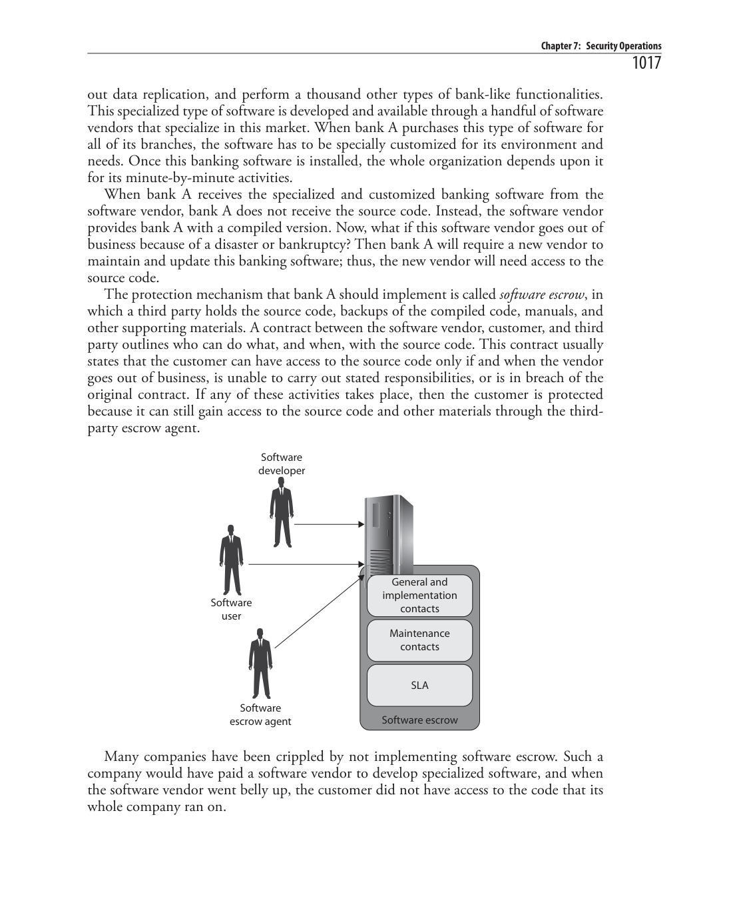
Diagram (p. 1051)
Choosing a Software Backup Facility
A company needs to address several issues and ask specific questions when it is deciding upon a storage facility for its backup materials. The following provides a list of just some of the issues that need to be thought through before committing to a specific vendor for this service:
Can the media be accessed in the necessary timeframe?
- Is the facility closed on weekends and holidays, and does it only operate during
- specific hours of the day?
Are the access control mechanisms tied to an alarm and/or the police station?
- Does the facility have the capability to protect the media from a variety of
- threats?
What is the availability of a bonded transport service?
- Are there any geographical environmental hazards such as floods, earthquakes,
- tornadoes, and so on that might affect the facility?
Does the facility have a fire detection and suppression system?
- Does the facility provide temperature and humidity monitoring and control?
- What type of physical, administrative, and logical access controls are used?
- The questions and issues that need to be addressed will vary depending on the type of company, its needs, and the requirements of a backup facility.
Documentation
Documentation seems to be a dreaded task to most people, who will find many other tasks to take on to ensure they are not the ones stuck with documenting processes and procedures. However, a company does a great and responsible job by backing up hardware and software to an offsite facility, maintaining it, and keeping everything up-to-date and current; without documentation, when a disaster hits, no one will know how to put Humpty Dumpty back together again. Restoration of files can be challenging, but restoring a whole environment that was swept away in a flood can be overwhelming, if not impossible. Procedures need to be documented because when they are actually needed, it will most likely be a chaotic and frantic atmosphere with a demanding time schedule. The documentation may need to include information on how to install images, configure operating systems and servers, and properly install utilities and proprietary software. Other documentation could include a calling tree, which outlines who should be contacted, in what order, and who is responsible for doing the calling. The documentation must also contain contact information for specific vendors, emergency agencies, offsite facilities, and any other entity that may need to be contacted in a time of need.
Most network environments evolve over time. Software has been installed on top of other software, configurations have been altered over the years to properly work in a unique environment, and service packs and patches have been installed to fix this problem or that issue. To expect one person or a group of people to go through all of these steps during a crisis and end up with an environment that looks and behaves exactly like the original environment and in which all components work together seamlessly may be a lofty dream. So, the dreaded task of documentation may be the saving grace one day. It is an essential piece of business, and therefore an essential piece in disaster recovery and business continuity. It is important to make one or more roles responsible for proper documentation. As with all the items addressed in this chapter, simply saying “All documentation will be kept up to date and properly protected” is the easy part—saying and doing are two different things. Once the BCP team identifies tasks that must be done, the tasks must be assigned to individuals, and those individuals have to be accountable. If these steps are not taken, the BCP team could have wasted a lot of time and resources defining these tasks, and the company could be in grave danger if a disaster occurs.
An organization may need to solidify communications channels and relationships with government officials and emergency response groups. The goal of this activity is to solidify proper protocol in case of a cityor region-wide disaster. During the BIA phase, local authorities should be contacted so the team understands the risks of its geographical location and how to access emergency zones. If the company has to initiate its BCP, it will need to contact many of these emergency response groups during the recovery stage.
Human Resources
One of the resources commonly left out of the equation is people. A company may restore its networks and critical systems and get business functions up and running, only to realize it doesn’t know the answer to the question, “Who will take it from here?” The area of human resources is a critical component to any recovery and continuity process, and it needs to be fully thought out and integrated into the plan. What happens if we have to move to an offsite facility that is 250 miles away? We cannot expect people to drive back and forth from home to work. Should we pay for temporary housing for the necessary employees? Do we have to pay their moving costs? Do we need to hire new employees in the area of the offsite facility? If so, what skill set do we need from them? The BCP team should go through a long succession of these types of questions.
Storing Business Continuity and Disaster Recovery Plans
Once the business continuity and disaster recovery plans are completed, where should they be stored? Should the company have only one copy and keep it safely in a file cabinet next to Bob so that he feels safe? Nope. There should be two or three copies of these plans. One copy may be at the primary location, but the other copies should be at other locations in case the primary facility is destroyed. This reduces the risk of not having access to the plans when needed. These plans should not be stored in a file cabinet, but rather in a fire-resistant safe. When they are stored offsite, they need to be stored in a way that provides just as much protection as the primary site would provide.
The BCP project expands job responsibilities, descriptions, hours, and even workplaces. The project has to identify the critical personnel and subordinates who will develop the plan and execute key duties during an incident. Among the key players may be heads of BCP coordination, IT systems, data and voice communications, business units, transport, logistics, security, safety, facilities, finance, auditing, legal, and public relations. Multiple people should be trained in executing the duties and procedures spelled out in the plan so that one person can fill another’s shoes in an emergency. Clear documentation is vital in such cross-training. The HR department normally manages the availability of personnel for the continuity process. If a large disaster takes place that affects not only the company’s facility but also surrounding areas, including housing, employees will be more worried about their families than their company. Some companies assume that employees will be ready and available to help them get back into production, when in fact they may need to be at home because they have responsibilities to their families. Regrettably, some employees may be killed or severely injured in the disaster, and the team should have plans in place to replace employees quickly through a temporary employment agency or a job recruiter. This is an extremely unfortunate scenario to contemplate, but it is part of reality. The team that considers all threats and is responsible for identifying practical solutions needs to think through all of these issues. Organizations should already haveexecutive succession planningin place. This means that if someone in a senior executive position retires, leaves the company, or is killed, the organization has predetermined steps to carry out to protect the company. The loss of a senior executive could tear a hole in the company’s fabric, creating a leadership vacuum that must be filled quickly with the right individual. The line-of-succession plan defines who would step in and assume responsibility for this role. Many organizations have “deputy” roles. For example, an organization may have a deputy CIO, deputy CFO, and deputy CEO ready to take over the necessary tasks if the CIO, CFO, or CEO becomes unavailable. Often, larger organizations also have a policy indicating that two or more of the senior staff cannot be exposed to a particular risk at the same time. For example, the CEO and president cannot travel on the same plane. If the plane were to crash and both individuals were killed, then the company could be in danger. This is why you don’t see the president
of the United States and the vice president together too often. It is not because they don’t like each other and thus keep their distance from each other. It is because there is a policy indicating that to protect the United States, its top leaders cannot be under the same risk at the same time.
End-User Environment
Because the end users are usually the worker bees of a company, they must be provided a functioning environment as soon as possible after a disaster hits. This means that the BCP team must understand the current operational and technical functioning environment and examine critical pieces so they can replicate them. The first issue pertaining to users is how they will be notified of the disaster and who will tell them where to go and when. A tree structure of managers can be developed so that once a disaster hits, the person at the top of the tree calls two managers, and they in turn call three managers, and so on until all managers are notified. Each manager would be responsible for notifying the people he is responsible for until everyone is on the same page. Then, one or two people must be in charge of coordinating the issues pertaining to users. This could mean directing them to a new facility, making sure they have the necessary resources to complete their tasks, restoring data, and being a liaison between the different groups. In most situations, after a disaster, only a skeleton crew is put back to work. The BCP committee identified the most critical functions of the company during the analysis stage, and the employees who carry out those functions must be put back to work first. So the recovery process for the user environment should be laid out in different stages. The first stage is to get the most critical departments back online, the next stage is to get the second most important back online, and so on. The BCP team needs to identify user requirements, such as whether users can work on stand-alone PCs or need to be connected in a network to fulfill specific tasks. For example, in a financial institution, users who work on stand-alone PCs might be able to accomplish some small tasks like filling out account forms, word processing, and accounting tasks, but they might need to be connected to a host system to update customer profiles and to interact with the database. The BCP team also needs to identify how current automated tasks can be carried out manually if that becomes necessary. If the network is going to be down for 12 hours, could the necessary tasks be carried out through traditional pen-and-paper methods? If the Internet connection is going to be down for five hours, could the necessary communications take place through phone calls? Instead of transmitting data through the internal mail system, could couriers be used to run information back and forth? Today, we are extremely dependent upon technology, but we often take for granted that it will always be there for us to use. It is up to the BCP team to realize that technology may be unavailable for a period of time and to come up with solutions for those situations.
Data Backup Alternatives
As we have discussed so far, backup alternatives are needed for hardware, software, personnel, and offsite facilities. It is up to each company and its continuity team to decide
if all of these components are necessary for its survival and the specifics for each type of backup needed. Data has become one of the most critical assets to nearly all organizations. It may include financial spreadsheets, blueprints on new products, customer information, product inventory, trade secrets, and more. In Chapter 1, we stepped through risk analysis procedures and, in Chapter 2, data classification. The BCP team should not be responsible for setting up and maintaining the company’s data classification procedures, but the team should recognize that the company is at risk if it does not have these procedures in place. This should be seen as a vulnerability that is reported to management. Management would need to establish another group of individuals who would identify the company’s data, define a loss criterion, and establish the classification structure and processes. The BCP team’s responsibility is to provide solutions to protect this data and identify ways to restore it after a disaster. In this section, we look at different ways data can be protected and restored when needed. Data usually changes more often than hardware and software, so these backup or archival procedures must happen on a continual basis. The data backup process must make sense and be reasonable and effective. If data in the files changes several times a day, backup procedures should happen a few times a day or nightly to ensure all the changes are captured and kept. If data is changed once a month, backing up data every night is a waste of time and resources. Backing up a file and its corresponding changes is usually more desirable than having multiple copies of that one file. Online backup technologies usually record the changes to a file in a transaction log, which is separate from the original file.
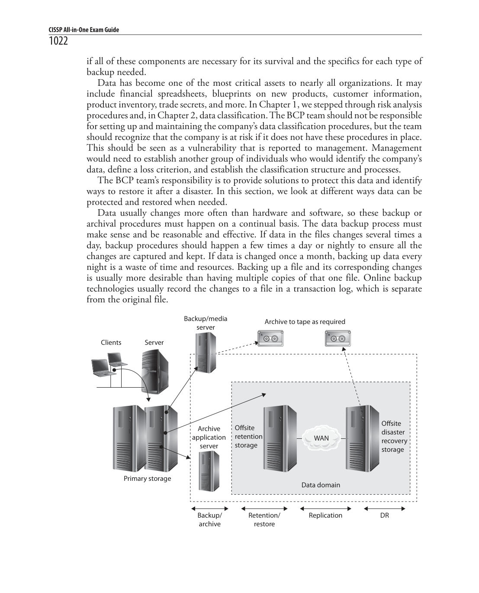
Diagram (p. 1056)
The operations team is responsible for defining which data gets backed up and how often. These backups can be full, differential, or incremental, and are usually used in some type of combination with each other. Most files are not altered every day, so, to save time and resources, it is best to devise a backup plan that does not continually back up data that has not been modified. So, how do we know which data has changed and needs to be backed up without having to look at every file’s modification date? This is accomplished by anarchive bit. Operating systems’ file systems keep track of what files have been modified by setting an archive bit. If a file is modified or created, the file system sets the archive bit to 1. Backup software has been created to review this bit setting when making its determination on what gets backed up and what does not. The first step is to do afull backup, which is just what it sounds like—all data is backed up and saved to some type of storage media. During a full backup, the archive bit is cleared, which means that it is set to 0. A company can choose to do full backups only, in which case the restoration process is just one step, but the backup and restore processes could take a long time. Most companies choose to combine a full backup with a differential or incremental backup. Adifferential processbacks up the files that have been modified since thelast full backup. When the data needs to be restored, the full backup is laid down first, and then the most recent differential backup is put down on top of it. The differential process does not change the archive bit value. Anincremental processbacks up all the files that have changed since thelast full or incremental backupand sets the archive bit to 0. When the data needs to be restored, the full backup data is laid down, and then each incremental backup is laid down on top of it in the proper order (see Figure 7-14). If a company experienced a disaster and it used the incremental process, it would first need to restore the full backup on its hard drives and lay down every incremental backup that was carried out before the disaster took place (and after the last full backup). So, if the full backup was done six months ago and the operations department carried out an incremental backup each month, the restoration team would restore the full backup and start with the older incremental backups taken since the full backup and restore each one of them until they were all restored. Which backup process is best? If a company wants the backup and restoration processes to be simplistic and straightforward, it can carry out just full backups—but this may require a lot of hard drive space and time. Although using differential and incremental backup processes is more complex, it requires fewer resources and less time. A differential backup takes more time in the backing-up phase than an incremental backup, but it also takes less time to restore than an incremental backup because carrying out restoration of a differential backup happens in two steps, whereas in an incremental backup, every incremental backup must be restored in the correct sequence. Whatever the organization chooses, it is important to not mix differential and incremental backups. This overlap could cause files to be missed, since the incremental backup changes the archive bit and the differential backup does not. Critical data should be backed up and stored at an onsite areaandan offsite area. The onsite backup copies should be easily accessible in case of nondisasters and should provide a quick restore process so operations can return to normal. However, onsite backup copies are not enough to provide real protection. The data should also be held in
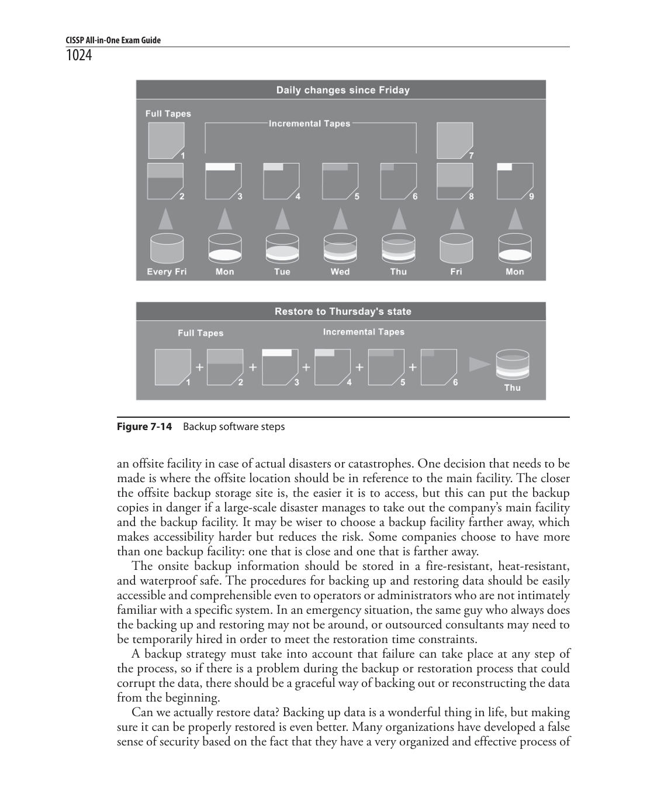
Figure 7-14Backup software steps
an offsite facility in case of actual disasters or catastrophes. One decision that needs to be made is where the offsite location should be in reference to the main facility. The closer the offsite backup storage site is, the easier it is to access, but this can put the backup copies in danger if a large-scale disaster manages to take out the company’s main facility and the backup facility. It may be wiser to choose a backup facility farther away, which makes accessibility harder but reduces the risk. Some companies choose to have more than one backup facility: one that is close and one that is farther away. The onsite backup information should be stored in a fire-resistant, heat-resistant, and waterproof safe. The procedures for backing up and restoring data should be easily accessible and comprehensible even to operators or administrators who are not intimately familiar with a specific system. In an emergency situation, the same guy who always does the backing up and restoring may not be around, or outsourced consultants may need to be temporarily hired in order to meet the restoration time constraints. A backup strategy must take into account that failure can take place at any step of the process, so if there is a problem during the backup or restoration process that could corrupt the data, there should be a graceful way of backing out or reconstructing the data from the beginning. Can we actually restore data? Backing up data is a wonderful thing in life, but making sure it can be properly restored is even better. Many organizations have developed a false sense of security based on the fact that they have a very organized and effective process of
backing up their data. That sense of security can disappear in seconds when a company realizes in a time of crisis that its restore processes do not work. For example, one company had paid an offsite backup facility to use a courier to collect its weekly backup tapes and transport them to the offsite facility for safekeeping. What the company did not realize was that this courier used the subway and many times set the tapes on the ground while waiting for the subway train. A subway has many large engines that create their own magnetic field. This can have the same effect on media as large magnets, meaning that the data can be erased or corrupted. The company never tested its restore processes and eventually experienced a disaster. Much to its surprise, it found out that three years of data were corrupted and unusable. Many other stories and experiences like this are out there. Don’t let your organization end up as an anecdote in someone else’s book because it failed to verify that its backups could be restored.
Electronic Backup Solutions
Manually backing up systems and data can be time-consuming, error-prone, and costly. Several technologies serve as automated backup alternatives. Although these technologies are usually more expensive, they are quicker and more accurate, which may be necessary for online information that changes often. Among the many technologies and ways to back up data electronically is disk shadowing, which is very similar to data mirroring.
Disk duplexingmeans there is more than one disk controller. If one disk controller fails, the other is ready and available.
Disk shadowingis used to ensure the availability of data and to provide a faulttolerant solution by duplicating hardware and maintaining more than one copy of the information. The data is dynamically created and maintained on two or more identical disks. If onlydisk mirroringis used, then each disk would have a corresponding mirrored disk that contains the exact same information. If shadow sets are used, the data can be stored as images on two or more disks. Systems that need to interact with this data are connected to all the drives at the same time. All of these drives “look” like just one drive to the user. This provides transparency to the user so that when she needs to retrieve a file, she does not have to worry about which drive to go to for this process. When a user writes data to be stored on this media, the data is written to all disks in the shadow set. Disk shadowing provides online backup storage, which can either reduce or replace the need for periodic offline manual backup operations. Another benefit to this solution is that it can boost read operation performance. Multiple paths are provided to duplicate data, and a shadow set can carry out multiple read requests in parallel. Disk shadowing is commonly seen as an expensive solution because two or more hard drives are used to hold the exact same data. If a company has data that will fill up 100 hard drives, it must purchase and maintain at least 200 hard drives. A company would choose this solution if fault tolerance were required.
If a disk drive fails, at least one shadow set is still available. A new disk can be assigned to this set through proper configurations, and the data can be copied from the shadow set. The copying can take place offline, but this means the data is unavailable for a period of time. Most products that provide disk-shadowing functionality allow for online copying, where disks are hot swapped into the set, and can carry out the necessary copy functions without having to bring the drives offline. Electronic vaulting and remote journaling are other solutions that companies should be aware of.Electronic vaultingmakes copies of files as they are modified and periodically transmits them to an offsite backup site. The transmission does not happen in real time, but is carried out in batches. So, a company can choose to have all files that have been changed sent to the backup facility every hour, day, week, or month. The information can be stored in an offsite facility and retrieved from that facility in a short time. This form of backup takes place in many financial institutions, so when a bank teller accepts a deposit or withdrawal, the change to the customer’s account is made locally to that branch’s database and to the remote site that maintains the backup copies of all customer records. Electronic vaulting is a method of transferring bulk information to offsite facilities for backup purposes.Remote journalingis another method of transmitting data offsite, but this usually only includes moving the journal or transaction logs to the offsite facility, not the actual files. These logs contain the deltas (changes) that have taken place to the individual files. If and when data is corrupted and needs to be restored, the bank can retrieve these logs, which are used to rebuild the lost data. Journaling is efficient for database recovery, where only the reapplication of a series of changes to individual records is required to resynchronize the database.
Remote journaling takes place in real time and transmits only the file deltas. Electronic vaulting takes place in batches and moves the entire file that has been updated. It may be necessary to keep different versions of software and files, especially in a software development environment. The object and source code should be backed up along with libraries, patches, and fixes. The offsite facility should mirror the onsite facility, meaning it does not make sense to keep all of this data at the onsite facility and only the source code at the offsite facility. Each site should have a full set of the most current and updated information and files. Another software backup technology we will discuss is referred to astape vaulting. Many businesses back up their data to tapes that are then manually transferred to an offsite facility by a courier or an employee. With automatic tape vaulting, the data is sent over a serial line to a backup tape system at the offsite facility. The company that maintains the offsite facility maintains the systems and changes out tapes when necessary. Data can be quickly backed up and retrieved when necessary. This technology reduces the manual steps in the traditional tape backup procedures. Basic vaulting of tape data sends backup tapes to an offsite location, but a manual process can be error-prone. Electronic tape vaulting transmits data over a network to tape
devices located at an alternate data center. Electronic tape vaulting improves recovery speed and reduces errors, and backups can be run more frequently. Data repositories commonly have replication capabilities, so that when changes take place to one repository (i.e., database) they are replicated to all of the other repositories within the organization. The replication can take place over telecommunication links, which allow offsite repositories to be continuously updated. If the primary repository goes down or is corrupted, the replication flow can be reversed, and the offsite repository updates and restores the primary repository. Replication can be asynchronous or synchronous.Asynchronous replicationmeans the primary and secondary data volumes are out of sync. Synchronization may take place in seconds, hours, or days, depending upon the technology in place. Withsynchronous replication, the primary and secondary repositories are always in sync, which provides true real-time duplication. Figure 7-15 shows how offsite replication can take place. The BCP team must balance the cost to recover against the cost of the disruption. The balancing point becomes the recovery time objective. Figure 7-16 illustrates the relationship between the cost of various recovery technologies and the provided recovery times.
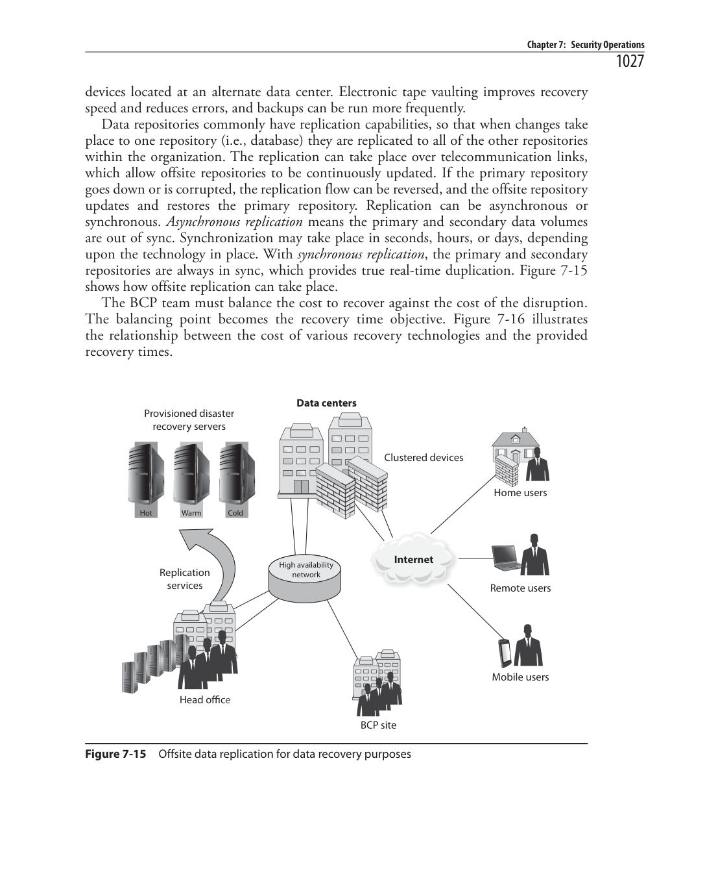
Figure 7-15Offsite data replication for data recovery purposes
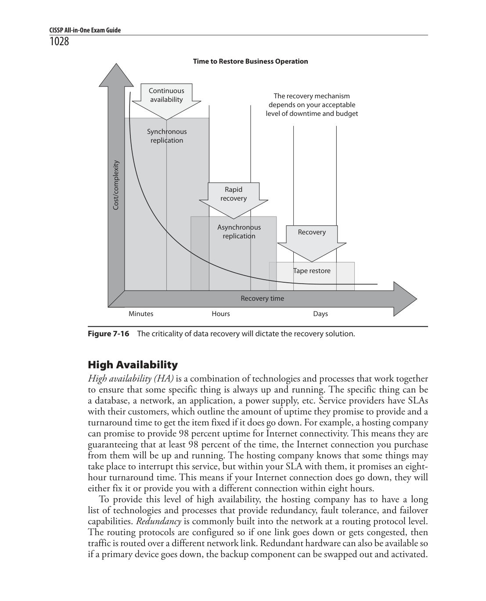
Figure 7-16The criticality of data recovery will dictate the recovery solution.
High Availability
High availability (HA)is a combination of technologies and processes that work together to ensure that some specific thing is always up and running. The specific thing can be a database, a network, an application, a power supply, etc. Service providers have SLAs with their customers, which outline the amount of uptime they promise to provide and a turnaround time to get the item fixed if it does go down. For example, a hosting company can promise to provide 98 percent uptime for Internet connectivity. This means they are guaranteeing that at least 98 percent of the time, the Internet connection you purchase from them will be up and running. The hosting company knows that some things may take place to interrupt this service, but within your SLA with them, it promises an eighthour turnaround time. This means if your Internet connection does go down, they will either fix it or provide you with a different connection within eight hours. To provide this level of high availability, the hosting company has to have a long list of technologies and processes that provide redundancy, fault tolerance, and failover capabilities.Redundancyis commonly built into the network at a routing protocol level. The routing protocols are configured so if one link goes down or gets congested, then traffic is routed over a different network link. Redundant hardware can also be available so if a primary device goes down, the backup component can be swapped out and activated.
Fault toleranceis the capability of a technology to continue to operate as expected even if something unexpected takes place (a fault). If a database experiences an unexpected glitch, it can roll back to a known-good state and continue functioning as though nothing bad happened. If a packet gets lost or corrupted during a TCP session, the TCP protocol will resend the packet so that system-to-system communication is not affected. If a disk within a RAID system gets corrupted, the system uses its parity data to rebuild the corrupted data so that operations are not affected. If a technology has afailovercapability, this means that if there is a failure that cannot be handled through normal means, then processing is “switched over” to a working system. For example, two servers can be configured to send each other heartbeat signals every 30 seconds. If server A does not receive a heartbeat signal from server B after 40seconds, then all processes are moved to server A so that there is no lag in operations. Also, when servers areclustered, this means that there is an overarching piece of software monitoring each server and carrying out load balancing. If one server within the cluster goes down, the clustering software stops sending it data to process so that there are no delays in processing activities. Redundancy, fault tolerance, and failover capabilities increase the reliability of a system or network, wherereliabilityis the probability that a system performs the necessary function for a specified period under defined conditions. High reliability allows for high availability, which is a measure of its readiness. If the probability of a system performing as expected under defined conditions is low, then the availability for this system cannot be high. For a system to have the characteristic of high availability, then high reliability must be in place. Figure 7-17 illustrates where load balancing, clustering, failover devices, and replication commonly take place in a network architecture. Remember that data restoration (RPO) requirements can be different from processing restoration (RTO) requirements. Data can be restored through backup tapes, electronic vaulting, synchronous or asynchronous replication, or RAID. Processing capabilities can be restored through clustering, load balancing, mirroring, redundancy, and failover technologies. If the results of the BCP team’s BIA indicate that the RPO value is two days, then the company can use tape backups. If the RPO value is one minute, then synchronous replication needs to be in place. If the BIA indicates that the RTO value is three days, then redundant hardware can be used. If the RTO value is one minute, then clustering and load balancing should be used. HA and disaster recovery (DR) are not the same, but they have a relationship. HA technologies and processes are commonly put into place so that if a disaster does take place, either the critical functions are likelier to remain available or the delay of getting them back online and running is low. In the industry, HA is usually thought about only in technology terms, but remember that there are many things that an organization needs to keep functioning. Availability of each of the following items must be thought through and planned:
Facility (cold, warm, hot, redundant, rolling, reciprocal sites)
- Infrastructure (redundancy, fault tolerance)
- Storage (RAID, SAN, mirroring, disk shadowing, cloud)
- Server (clustering, load balancing)
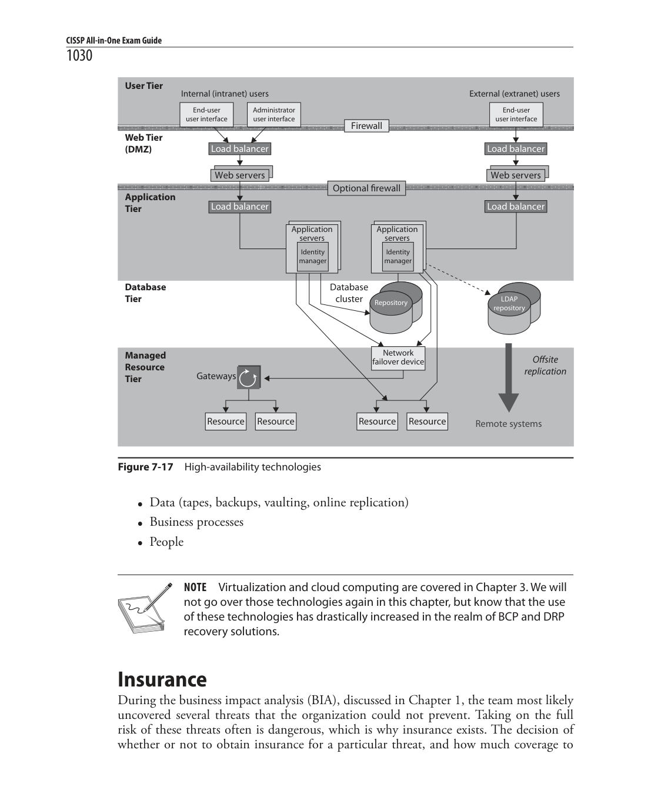
Figure 7-17High-availability technologies
Data (tapes, backups, vaulting, online replication)
- Business processes
- People
Virtualization and cloud computing are covered in Chapter 3. We will not go over those technologies again in this chapter, but know that the use of these technologies has drastically increased in the realm of BCP and DRP recovery solutions.
Insurance
During the business impact analysis (BIA), discussed in Chapter 1, the team most likely uncovered several threats that the organization could not prevent. Taking on the full risk of these threats often is dangerous, which is why insurance exists. The decision of whether or not to obtain insurance for a particular threat, and how much coverage to
obtain when choosing to insure, should be based on the probability of the threat becoming real and the loss potential, which was identified during the BIA. The BCP team should work with management to understand what the current coverage is, the various insurance options, and the limits of each option. The goal here is to make sure the insurance coverage fills in the gap of what the current preventive countermeasures cannot protect against. We can eat healthy, work out, and take our vitamins—but these things cannot always prevent serious health issues. We purchase medical insurance to help cover the costs of any unexpected health conditions. Organizations also need insurance to protect them from unexpected events. Just as people are given different premiums on health and life insurance, companies are given different premiums on the type of insurance they purchase. Different types of insurance policies can be purchased by companies, cyber insurance being one of them. Cyber insuranceis a new type of coverage that insures losses caused by denial-of-service attacks, malware damages, hackers, electronic theft, privacy-related lawsuits, and more. Whereas a person is asked how old he is, which previous health issues he’s had, if he smokes, and so on, to determine his health insurance premium, companies are asked questions about their security program, such as whether they have an IDS, antivirus software, firewalls, and other security measures. A company could also choose to purchase abusiness interruption insurancepolicy. With this type of policy, if the company is out of business for a certain length of time, the insurance company will pay for specified expenses and lost earnings. Another policy that can be bought insures accounts receivable. If a company cannot collect on its accounts receivable for one reason or another, this type of coverage covers part or all of the losses and costs. The company’s insurance should be reviewed annually because threat levels may change and the company may expand into new ventures that need to be properly covered. Purchasing insurance should not lull a company into a false sense of security, though. Insurance coverage has its limitations, and if the company does not practice due care, the insurance company may not be legally obligated to pay if a disaster hits. It is important to read and understand the fine print when it comes to insurance and to make sure you know what is expected of your company—not just what is expected from the insurance organization.
Recovery and Restoration
The BCP coordinator needs to define several different teams that should be properly trained and available if a disaster hits. The types of teams an organization needs depends upon the organization. The following are some examples of teams that a company may need to construct:
Damage assessment team
- Legal team
- Media relations team
- Recovery team
- Relocation team
- Restoration team
- Salvage team
- Security team
- The BCP coordinator should have an understanding of the needs of the company and the types of teams that need to be developed and trained. Employees should be assigned to the specific teams based on their knowledge and skill set. Each team needs to have a designated leader, who will direct the members and their activities. These team leaders will be responsible not only for ensuring that their team’s objectives are met, but also for communicating with each other to make sure each team is working in parallel phases. Therestoration teamshould be responsible for getting the alternate site into a working and functioning environment, and thesalvage teamshould be responsible for starting the recovery of the original site. Both teams must know how to do many tasks, such as install operating systems, configure workstations and servers, string wire and cabling, set up the network and configure networking services, and install equipment and applications. Both teams must also know how to restore data from backup facilities. They also must know how to do so in a secure manner, one that ensures the confidentiality, integrity, and availability of the system and data. The BCP must outline the specific teams, their responsibilities, and notification procedures. The plan must indicate the methods that should be used to contact team leaders during business hours and after business hours. A role, or a team, needs to be created to carry out adamage assessmentonce a disaster has taken place. The assessment procedures should be properly documented and include the following steps:
Determine the cause of the disaster.
- Determine the potential for further damage.
- Identify the affected business functions and areas.
- Identify the level of functionality for the critical resources.
- Identify the resources that must be replaced immediately.
- Estimate how long it will take to bring critical functions back online.
- If it will take longer than the previously estimated MTD values to restore operations,
- then a disaster should be declared and the BCP should be put intoaction.
After this information is collected and assessed, it will indicate which teams need to be called to action and whether the BCP actually needs to be activated. The BCP coordinator and team must develop activation criteria. After the damage assessment, if one or more of the situations outlined in the criteria have taken place, then the team is moved into recovery mode. Different organizations have different criteria because the business drivers and critical functions will vary from organization to organization. The criteria may comprise some or all of the following elements:
Danger to human life
- Danger to state or national security
- Damage to facility
- Damage to critical systems
- Estimated value of downtime that will be experienced
- Once the damage assessment is completed and the plan is activated, various teams must be deployed, which signals the company’s entry into therecovery phase. Each team has its own tasks—for example, the restoration team prepares the offsite facility (if needed), the network team rebuilds the network and systems, and the relocation team starts organizing the staff to move into a new facility. The recovery process needs to be well organized to get the company up and running as soon as possible. This is much easier to state in a book than to carry out in reality. This is why written procedures are critical. During the BIA, the critical functions and their resources were identified. These are the things that the teams need to work together on getting up and running first. Templates should have been developed during the plan development stage. These templates are used by the different teams to step them through the necessary phases and to document their findings. For example, if one step could not be completed until new systems were purchased, this should be indicated on the template. If a step is partially completed, this should be documented so the team does not forget to go back and finish that step when the necessary part arrives. These templates keep the teams on task and also quickly tell the team leaders about the progress, obstacles, and potential recovery time.
Examples of possible templates can be found in NIST Special Publication 800-34, Revision 1,“Contingency Planning Guide for Federal Information Systems,” which is available online at http://csrc.nist.gov/ publications/nistpubs/800-34-rev1/sp800-34-rev1_errata-Nov11-2010.pdf. When it is time for the company to move back into its original site or a new site, the company enters thereconstitution phase. A company is not out of an emergency state until it is back in operation at the original primary site or a new site that was constructed to replace the primary site, because the company is always vulnerable while operating in a backup facility. Many logistical issues need to be considered as to when a company must return from the alternate site to the original site. The following lists a few of these issues: Ensuring the safety of employees
- Ensuring an adequate environment is provided (power, facility infrastructure,
- water, HVAC)
Ensuring that the necessary equipment and supplies are present and in working order
- Ensuring proper communications and connectivity methods are working
- Properly testing the new environment
- Once the coordinator, management, and salvage team sign off on the readiness of the facility, the salvage team should carry out the following steps:
Back up data from the alternate site and restore it within the new facility.
- Carefully terminate contingency operations.
- Securely transport equipment and personnel to the new facility.
- The least critical functions should be moved back first, so if there are issues in network configurations or connectivity, or important steps were not carried out, the critical operations of the company are not negatively affected. Why go through the trouble of moving the most critical systems and operations to a safe and stable site, only to return them to a main site that is untested? Let the less critical departments act as the canary in the coal mine. If they survive, then move the more critical components of the company to the main site.
Developing Goals for the Plans
If you do not have established goals, how do you know when you are done and whether your efforts were actually successful? Goals are established so everyone knows the ultimate objectives. Establishing goals is important for any task, but especially for business continuity and recovery plans. The definition of the goals helps direct the proper allocation of resources and tasks, develops necessary strategies, and assists in economical justification of
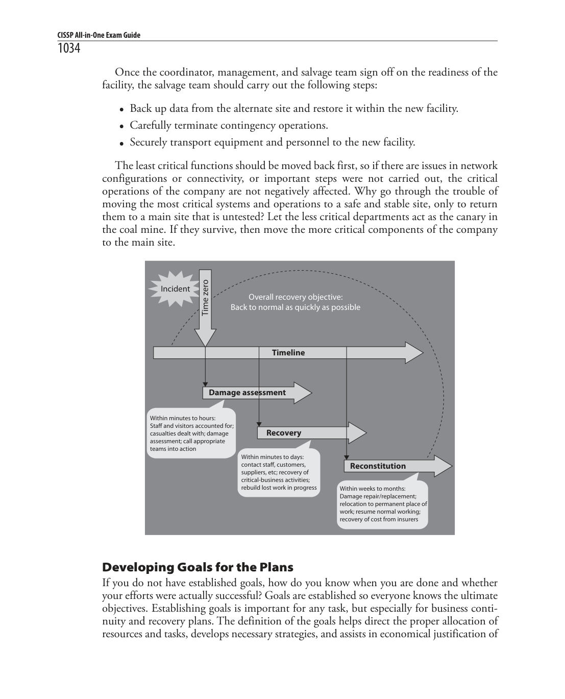
Diagram (p. 1068)
the plans and program overall. Once the goals are set, they provide a guide to the development of the actual plans themselves. Anyone who has been involved in large projects that entail many small, complex details knows that at times it is easy to get off track and not actually accomplish the major goals of the project. Goals are established to keep everyone on track and to ensure that the efforts pay off in the end.
BCP Development Products
Since there is so much work in collecting, analyzing, and maintaining DRP and BCP data, using a product that automates these tasks can prove to be extremely helpful. “Automated” plan development can help you create
Customizable questionnaires through the use of expert-system templates
- Timetables for disaster recovery procedures
- What-if scenario modeling
- Reports on financial and operational impact analysis
- Graphic representations of the analysis results
- Sample questionnaires, forms, and templates
- Permission-based plan maintenance
- Central version control and integration
- Regulatory compliance
- Great—we have established that goals are important. But the goal could be, “Keep the company in business if an earthquake hits.” Good goal, but not overly useful without more clarity and direction. To be useful, a goal must contain certain key information, such as the following:
ResponsibilityEach individual involved with recovery and continuity should
- have their responsibilities spelled out in writing to ensure a clear understanding in a chaotic situation. Each task should be assigned to the individual most logically situated to handle it. These individuals must know what is expected of them, which is done through training, drills, communication, and documentation. So, for example, instead of just running out of the building screaming, an individual must know that he is responsible for shutting down the servers before he can run out of the building screaming.
AuthorityIn times of crisis, it is important to know who is in charge.
- Teamwork is important in these situations, and almost every team does much better with an established and trusted leader. Such leaders must know that they are expected to step up to the plate in a time of crisis and understand what type of direction they should provide to the rest of the employees. Clear-cut authority will aid in reducing confusion and increasing cooperation.
PrioritiesIt is extremely important to know what is critical versus what is
- merely nice to have. Different departments provide different functionality for an organization. The critical departments must be singled out from the departments that provide functionality that the company can live without for a week or two. It is necessary to know which department must come online first, which second, and so on. That way, the efforts are made in the most useful, effective, and focused manner. Along with the priorities of departments, the priorities of systems, information, and programs must be established. It may be necessary to ensure that the database is up and running before working to bring the web servers online. The general priorities must be set by management with the help of the different departments and IT staff.
Implementation and testingIt is great to write down very profound ideas and
- develop plans, but unless they are actually carried out and tested, they may not add up to a hill of beans. Once a continuity plan is developed, it actually has to be put into action. It needs to be documented and put in places that are easily accessible in times of crisis. The people who are assigned specific tasks need to be taught and informed how to fulfill those tasks, and dry runs must be done to walk people through different situations. The drills should take place at least once a year, and the entire program should be continually updated and improved.
Studies have shown that 65 percent of businesses that lose computing capabilities for over one week are never able to recover and subsequently go out of business. Not being able to bounce back quickly or effectively by setting up shop somewhere else can make a company lose business and, more importantly, its reputation. In such a competitive world, customers have a lot of options. If one company is not prepared to bounce back after a disruption or disaster, customers may go to another vendor and stay there. The biggest effect of an incident, especially one that is poorly managed or that was preventable, is on an organization’s reputation or brand. This can result in a considerable and even irreparable loss of trust by customers and clients. On the other hand, handling an incident well, or preventing great damage through smart, preemptive measures, can enhance the reputation of, or trust in, an organization.
Implementing Strategies
As stated previously, copies of the plan need to be kept in one or more locations other than the primary site, so that if the primary site is destroyed or negatively affected, the continuity plan is still available to the teams. It is also critical that different formats of the plan be available to the team, including both electronic and paper versions. An electronic version of the plan is not very useful if you don’t have any electricity to run a computer. In addition to having copies of the recovery documents located at their offices and homes, key individuals should have easily accessible versions of critical procedures and call tree information. One simple way to accomplish this is to publish the call tree data on cards that can be affixed to personnel badges or kept in a wallet. In an emergency situation, valuable
minutes are better spent responding to an incident than looking for a document or having to wait for a laptop to power up. The plan should address in detail all of the topics we have covered so far. The actual format of the plan will depend on the environment, the goals of the plan, priorities, and identified threats. After each of those items is examined and documented, the topics of the plan can be divided into the necessary categories. A commonly accepted structure for a BCP is illustrated in Figure 7-18. Each organization’s BCP looks different, but these core topics should be covered in some fashion. The role of the plan is to provide preplanned and sequenced structure to these different processes. The plan also needs to integrate a degree of flexibility, because no one knows exactly what type of disaster will take place, nor its effects. Although procedures need to be documented for the different phases of the plan, a balance between detail and flexibility must be achieved so the company is ready for any type of disaster.
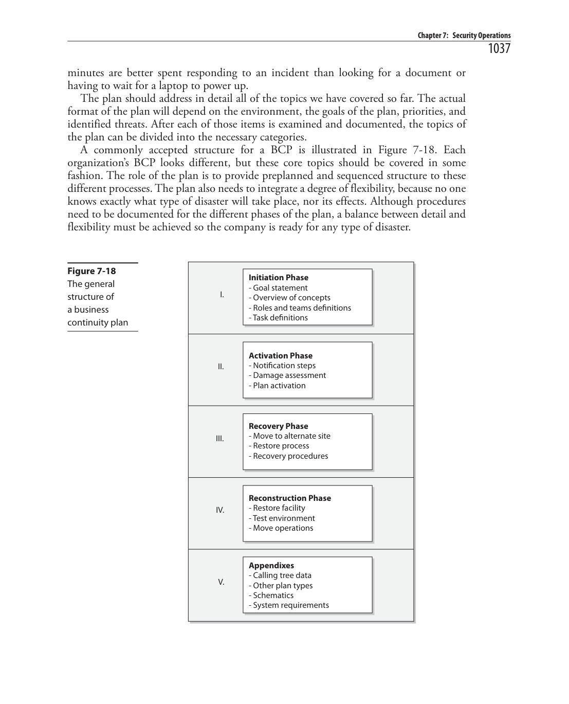
Figure 7-18
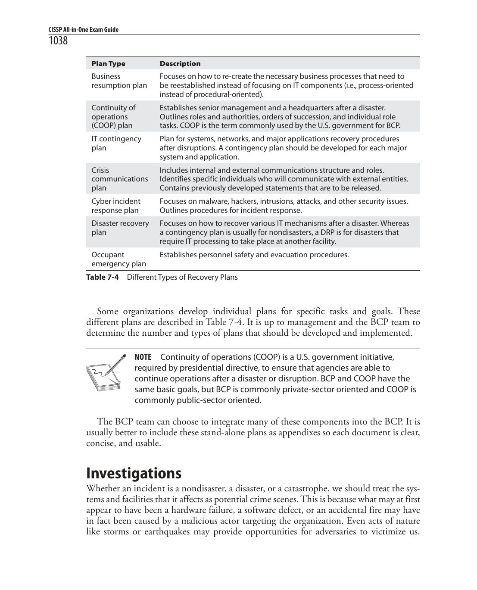
BusinessFocuses on how to re-create the necessary business processes that need to
Some organizations develop individual plans for specific tasks and goals. These different plans are described in Table 7-4. It is up to management and the BCP team to determine the number and types of plans that should be developed and implemented.
Continuity of operations (COOP) is a U.S. government initiative, required by presidential directive, to ensure that agencies are able to continue operations after a disaster or disruption. BCP and COOP have the same basic goals, but BCP is commonly private-sector oriented and COOP is commonly public-sector oriented. The BCP team can choose to integrate many of these components into the BCP. It is usually better to include these stand-alone plans as appendixes so each document is clear, concise, and usable.
Investigations
Whether an incident is a nondisaster, a disaster, or a catastrophe, we should treat the systems and facilities that it affects as potential crime scenes. This is because what may at first appear to have been a hardware failure, a software defect, or an accidental fire may have in fact been caused by a malicious actor targeting the organization. Even acts of nature like storms or earthquakes may provide opportunities for adversaries to victimize us.
Because we are never (initially) quite sure whether an incident may have a criminal element, we should treat all incidents as if they do (until proven otherwise). Since computer crimes are only increasing and will never really go away, it is important that all security professionals understand how computer investigations should be carried out. This includes understanding legal requirements for specific situations, the “chain of custody” for evidence, what type of evidence is admissible in court, incident response procedures, and escalation processes. When a potential computer crime takes place, it is critical that the investigation steps are carried out properly to ensure that the evidence will be admissible to the court if things go that far and that it can stand up under the cross-examination and scrutiny that will take place. As a security professional, you should understand that an investigation is not just about potential evidence on a disk drive. The whole environment will be part of an investigation, including the people, network, connected internal and external systems, federal and state laws, management’s stance on how the investigation is to be carried out, and the skill set of whomever is carrying out the investigation. Messing up on just one of these components could make your case inadmissible or at least damage it if it is brought to court.
Cops or No Cops?
Management needs to make the decision as to whether law enforcement should be called in to handle the security breach. The following are some of the issues to understand if law enforcement is brought in:
Law enforcement agencies bring significant investigative capability.
- The company may lose control over where the investigation leads once law
- enforcement is involved.
Secrecy of compromise is not promised; it could become part of public record.
- Effects on reputation need to be considered (the ramifications of this
- information reaching customers, shareholders, and so on).
Evidence will be collected and may not be available for a long period of
- time. It may take a year or so to get into court.
Computer Forensics and Proper Collection of Evidence
Forensicsis a science and an art that requires specialized techniques for the recovery, authentication, and analysis of electronic data for the purposes of a digital criminal investigation. It is the coming together of computer science, information technology, and engineering with law. When discussing computer forensics with others, you might hear the terms computer forensics, network forensics, electronic data discovery, cyberforensics, and forensic computing. (ISC)usesdigital forensicsas a synonym for all of these other terms, so that’s what you’ll see on the CISSP exam. Computer forensics encompasses all domains
in which evidence is in a digital or electronic form, either in storage or on the wire. At one time computer forensic results were differentiated from network and code analysis, but now this entire area is referred to asdigital evidence. The people conducting the forensic investigation must be properly skilled in this trade and know what to look for. If someone reboots the attacked system or inspects various files, this could corrupt viable evidence, change timestamps on key files, and erase footprints the criminal may have left. Most digital evidence has a short lifespan and must be collected quickly in order of volatility. In other words, the most volatile or fragile evidence should be collected first. In some situations, it is best to remove the system from the network, dump the contents of the memory, power down the system, and make a sound image of the attacked system and perform forensic analysis on this copy. Working on the copy instead of the original drive will ensure that the evidence stays unharmed on the original system in case some steps in the investigation actually corrupt or destroy data. Dumping the memory contents to a file before doing any work on the system or powering it down is a crucial step because of the information that could be stored there. This is another method of capturing fragile information. However, this creates a sticky situation: capturing RAM or conducting live analysis can introduce changes to the crime scene because various state changes and operations take place. Whatever method the forensic investigator chooses to use to collect digital evidence, that method must be documented. This is the most important aspect of evidence handling.
The forensics team needs specialized tools, an evidence collection notebook, containers, a camera, and evidence identification tags. The notebook should not be a spiral notebook but rather a notebook that is bound in a way that one can tell if pages have been removed. Digital evidence must be handled in a careful fashion so it can be used in different courts, no matter what jurisdiction is prosecuting a suspect. Within the United States, there is theScientific Working Group on Digital Evidence (SWGDE), which aims to ensure consistency across the forensic community. The principles developed by the SWGDE for the standardized recovery of computer-based evidence are governed by the following attributes: Consistency with all legal systems
- Allowance for the use of a common language
- Durability
- Ability to cross international and state boundaries
- Ability to instill confidence in the integrity of evidence
- Applicability to all forensic evidence
- Applicability at every level, including that of individual, agency, and country
- The SWGDE principles are listed next:
1.When dealing with digital evidence, all of the general forensic and procedural principles must be applied. 2.Upon the seizing of digital evidence, actions taken should not change that evidence. 3.When it is necessary for a person to access original digital evidence, that person should be trained for the purpose. 4.All activity relating to the seizure, access, storage, or transfer of digital evidence must be fully documented, preserved, and available for review. 5.An individual is responsible for all actions taken with respect to digital evidence while the digital evidence is in their possession. 6.Any agency that is responsible for seizing, accessing, storing, or transferring digital evidence is responsible for compliance with these principles.
The Digital Forensic Research Workshop (DFRWS) brings together academic researchers and forensic investigators to also address a standardized process for collecting evidence, to research practitioner requirements, and to incorporate a scientific method as a tenant of digital forensic science. Learn more at www.dfrws.org/index.shtml.
Motive, Opportunity, and Means
Today’s computer criminals are similar to their traditional counterparts. To understand the “whys” in crime, it is necessary to understand the motive, opportunity, and means— or MOM. This is the same strategy used to determine the suspects in a traditional, noncomputer crime. Motiveis the “who” and “why” of a crime. The motive may be induced by either internal or external conditions. A person may be driven by the excitement, challenge, and adrenaline rush of committing a crime, which would be an internal condition. Examples of external conditions might include financial trouble, a sick family member, or other dire straits. Understanding the motive for a crime is an important piece in figuring out who would engage in such an activity. For example, in the past many hackers attacked big-name sites because when the sites went down, it was splashed all over the news. However, once technology advanced to the point where attacks could not bring down these sites, or once these activities were no longer so highly publicized, many individuals eventually moved on to other types of attacks. Opportunityis the “where” and “when” of a crime. Opportunities usually arise when certain vulnerabilities or weaknesses are present. If a company does not have a firewall, hackers and attackers have all types of opportunities within that network. If a company does not perform access control, auditing, and supervision, employees may have many opportunities to embezzle funds and defraud the company. Once a crime fighter finds out why a person would want to commit a crime (motive), she will look at what could allow the criminal to be successful (opportunity).
Meanspertains to the abilities a criminal would need to be successful. Suppose a crime fighter was asked to investigate a complex embezzlement that took place within a financial institution. If the suspects were three people who knew how to use a mouse, keyboard, and a word processing application, but only one of them was a programmer and system analyst, the crime fighter would realize that this person may have the means to commit this crime much more successfully than the other two individuals.
Computer Criminal Behavior
Like traditional criminals, computer criminals have a specific modus operandi (MO, pronounced “em-oh”). In other words, criminals use a distinct method of operation to carry out their crime that can be used to help identify them. The difference with computer crimes is that the investigator, obviously, must have knowledge of technology. For example, an MO for computer criminals may include the use of specific hacking tools, or targeting specific systems or networks. The method usually involves repetitive signature behaviors, such as sending e-mail messages or programming syntax. Knowledge of the criminal’s MO and signature behaviors can be useful throughout the investigative process. Law enforcement can use the information to identify other offenses by the same criminal, for example. The MO and signature behaviors can also provide information that is useful during the interview process and potentially a trial. Psychological crime scene analysis (profiling) can also be conducted using the criminal’s MO and signature behaviors. Profiling provides insight into the thought processes of the attacker and can be used to identify the attacker or, at the very least, the tool he used to conduct the crime.
Locard’s exchange principlealso applies to profiling. The principle states that a criminal leaves something behind at the crime scene and takes something with them. This principle is the foundation of criminalistics. Even in an entirely digital crime scene, Locard’s exchange principle can shed light on who the perpetrator(s) may be.
Incident Investigators
Incident investigators are a breed of their own. The good ones must be aware of suspicious or abnormal activities that others might normally ignore. This is because, due to their training and experience, they may know what is potentially going on behind some abnormal system activity, while another employee would just respond, “Oh, that just happens sometimes. We don’t know why.” The investigator could identify suspicious activities, such as port scans, attempted SQL injections, or evidence in a log that describes a dangerous activity that took place. Identifying abnormal activities is a bit more difficult, because it is more subtle. These activities could be increased network traffic, an employee’s staying late every night, unusual requests to specific ports on a network server, and so on. On top of being observant, the investigator must understand forensic procedures, evidence collection
issues, and how to analyze a situation to determine what is going on and know how to pick out the clues in system logs.
Different Types of Assessments an Investigator Can Perform
There are four general types of assessments performed by investigators.
Network analysis Traffic analysis
- Log analysis
- Path tracing
- Media analysis
Disk imaging
- Timeline analysis (modify, access, create times)
- Registry analysis
- Slack space analysis
- Shadow volume analysis
- Software analysis
Reverse engineering
- Malicious code review
- Exploit review
- Hardware/embedded device analysis
Dedicated appliance attack points
- Firmware and dedicated memory inspections
- Embedded operating systems, virtualized software, and hypervisor analysis
The Forensic Investigation Process
To ensure that forensic activities are carried out in a standardized manner and the evidence collected is admissible, it is necessary for the team to follow specific laid-out steps so that nothing is missed. Figure 7-19 illustrates the phases through a common investigation process. Each team or company may commonly come up with their own steps, but all should be essentially accomplishing the same things:
Identification
- Preservation
- Collection
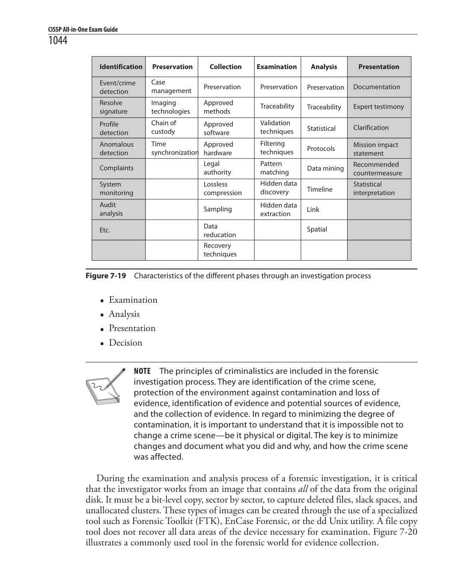
Figure 7-19Characteristics of the different phases through an investigation process
Examination
- Analysis
- Presentation
- Decision
The principles of criminalistics are included in the forensic investigation process. They are identification of the crime scene, protection of the environment against contamination and loss of evidence, identification of evidence and potential sources of evidence, and the collection of evidence. In regard to minimizing the degree of contamination, it is important to understand that it is impossible not to change a crime scene—be it physical or digital. The key is to minimize changes and document what you did and why, and how the crime scene was affected. During the examination and analysis process of a forensic investigation, it is critical that the investigator works from an image that containsallof the data from the original disk. It must be a bit-level copy, sector by sector, to capture deleted files, slack spaces, and unallocated clusters. These types of images can be created through the use of a specialized tool such as Forensic Toolkit (FTK), EnCase Forensic, or the dd Unix utility. A file copy tool does not recover all data areas of the device necessary for examination. Figure 7-20 illustrates a commonly used tool in the forensic world for evidence collection.
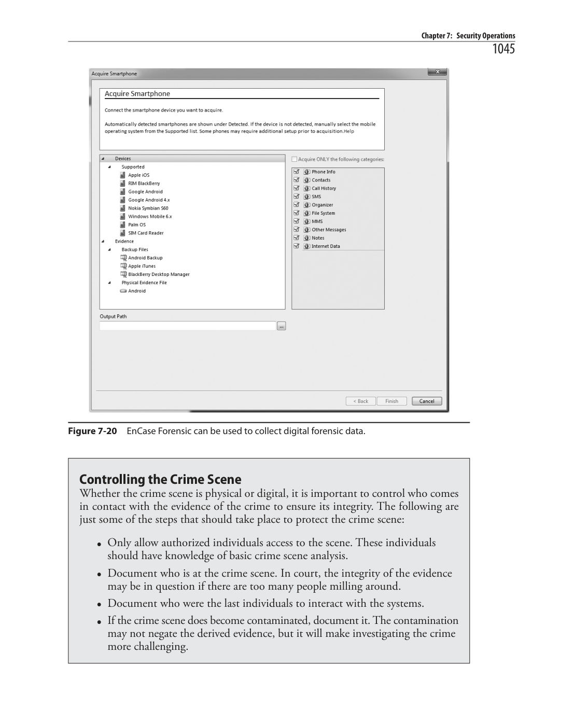
Figure 7-20EnCase Forensic can be used to collect digital forensic data.
Controlling the Crime Scene
Whether the crime scene is physical or digital, it is important to control who comes in contact with the evidence of the crime to ensure its integrity. The following are just some of the steps that should take place to protect the crime scene:
Only allow authorized individuals access to the scene. These individuals
- should have knowledge of basic crime scene analysis.
Document who is at the crime scene. In court, the integrity of the evidence
- may be in question if there are too many people milling around.
Document who were the last individuals to interact with the systems.
- If the crime scene does become contaminated, document it. The contamination
- may not negate the derived evidence, but it will make investigating the crime more challenging.
The original media should have two copies created: aprimary image(a control copy that is stored in a library) and aworking image(used for analysis and evidence collection). These should be timestamped to show when the evidence was collected. Before creating these images, the investigator must make sure the new media has been properly purged, meaning it does not contain any residual data. Some incidents have occurred where drives that were new and right out of the box (shrink-wrapped) contained old data not purged by the vendor. To ensure that the original image is not modified, it is important to create message digests for files and directories before and after the analysis to prove the integrity of the original image. The investigator works from the duplicate image because it preserves the original evidence, prevents inadvertent alteration of original evidence during examination, and allows re-creation of the duplicate image if necessary. Much of the needed data is volatile and can be contained in the following:
Registers and cache
- Process tables and ARP cache
- System memory (RAM)
- Temporary file systems
- Special disk sectors
- So, great care and precision must take place to capture clues from any computer or device. Remember that digital evidence can exist in many more devices than traditional computer systems. Cell phones, USB drives, laptops, GPS devices, and memory cards can be containers of digital evidence as well. Acquiring evidence on live systems and those using network storage further complicates matters because you cannot turn off the system in order to make a copy of the hard drive. Imagine the reaction you’d receive if you were to tell an IT manager that you need to shut down a primary database or e-mail system. It wouldn’t be favorable. So these systems and others, such as those using on-the-fly encryption, must be imaged while they are running.
Forensics Field Kits
When forensics teams are deployed, they should be properly equipped with all of the tools and supplies needed. The following are some of the common items in the forensics field kits:
Documentation toolsTags, labels, and time-lined forms
- Disassembly and removal toolsAntistatic bands, pliers, tweezers,
- screwdrivers, wire cutters, and so on
Package and transport suppliesAntistatic bags, evidence bags and tape,
- cable ties, and others
The next crucial piece is to keep a properchain of custodyof the evidence. Because evidence from these types of crimes can be very volatile and easily dismissed from court because of improper handling, it is important to follow very strict and organized procedures when collecting and tagging evidence in every single case—no exceptions! Furthermore, the chain of custody should follow evidence through its entire life cycle, beginning with identification and ending with its destruction, permanent archiving, or return to owner.
A chain of custody is a history that shows how evidence was collected, analyzed, transported, and preserved in order to be presented in court. Because electronic evidence can be easily modified, a clearly defined chain of custody demonstrates that the evidence is trustworthy. When copies of data need to be made, this process must meet certain standards to ensure quality and reliability. Specialized software for this purpose can be used. The copies must be able to be independently verified and must be tamperproof. Each piece of evidence should be marked in some way with the date, time, initials of the collector, and a case number if one has been assigned. Magnetic disk surfaces should not be marked on. The piece of evidence should then be sealed in a container, which should be marked with the same information. The container should be sealed with evidence tape, and if possible, the writing should be on the tape so a broken seal can be detected. An example of the data that should be collected and displayed on each evidence container is shown in Figure 7-21.
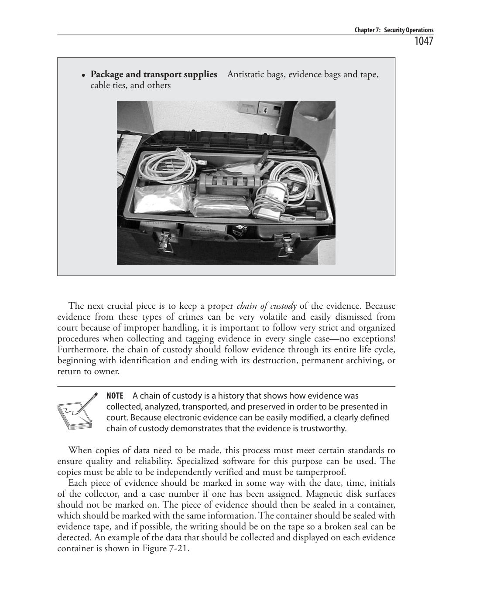
Diagram (p. 1081)
EVIDENCE
CHAIN OF CUSTODY
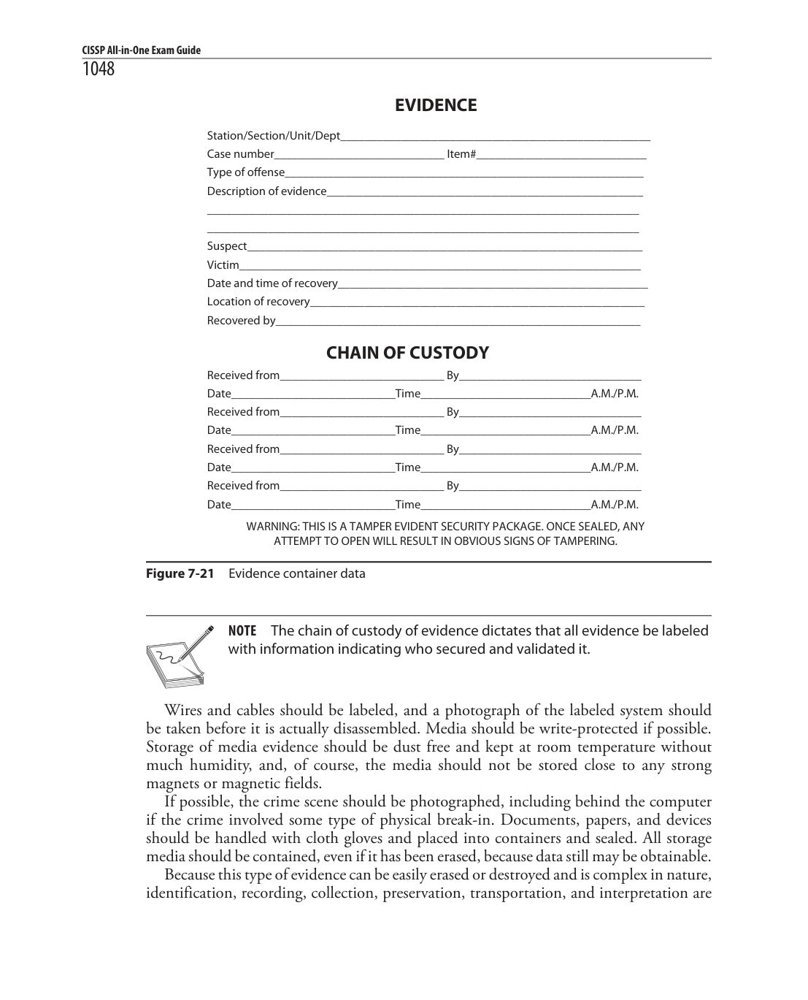
Figure 7-21Evidence container data
The chain of custody of evidence dictates that all evidence be labeled with information indicating who secured and validated it.
Wires and cables should be labeled, and a photograph of the labeled system should be taken before it is actually disassembled. Media should be write-protected if possible. Storage of media evidence should be dust free and kept at room temperature without much humidity, and, of course, the media should not be stored close to any strong magnets or magnetic fields. If possible, the crime scene should be photographed, including behind the computer if the crime involved some type of physical break-in. Documents, papers, and devices should be handled with cloth gloves and placed into containers and sealed. All storage media should be contained, even if it has been erased, because data still may be obtainable. Because this type of evidence can be easily erased or destroyed and is complex in nature, identification, recording, collection, preservation, transportation, and interpretation are
all important. After everything is properly labeled, a chain of custody log should be made of each container and an overall log should be made capturing all events. For a crime to be successfully prosecuted, solid evidence is required. Computer forensics is the art of retrieving this evidence and preserving it in the proper ways to make it admissible in court. Without proper computer forensics, hardly any computer crimes could ever be properly and successfully presented in court. The most common reasons for improper evidence collection are lack of an established incident response team, lack of an established incident response procedures, poorly written policy, or a broken chain of custody. The next step is the analysis of the evidence. Forensic investigators use a scientific method that involves
Determining the characteristics of the evidence, such as whether it’s admissible as
- primary or secondary evidence, as well as its source, reliability, and permanence
Comparing evidence from different sources to determine a chronology of events
- Event reconstruction, including the recovery of deleted files and other activity on
- the system
This can take place in a controlled lab environment or, thanks to hardware writeblockers and forensic software, in the field. When investigators analyze evidence in a lab, they are dealing with dead forensics; that is, they are working only with static data. Live forensics, which takes place in the field, includes volatile data. If evidence is lacking, then an experienced investigator should be called in to help complete the picture. Finally, the interpretation of the analysis should be presented to the appropriate party. This could be a judge, lawyer, CEO, or board of directors. Therefore, it is important to present the findings in a format that will be understood by a nontechnical audience. As a CISSP, you should be able to explain these findings in layman’s terms using metaphors and analogies. Of course, the findings, which are top secret or company confidential, should be disclosed only to authorized parties. This may include the legal department or any outside counsel that assisted with the investigation.
What Is Admissible in Court?
Computer logs are important in many aspects of the IT world. They are generally used to troubleshoot an issue or to try to understand the events that took place at a specific moment in time. When computer logs are to be used as evidence in court, they must be collected in the regular course of business. Most of the time, computer-related documents are consideredhearsay, meaning the evidence is secondhand evidence. Hearsay evidence is not normally admissible in court unless it has firsthand evidence that can be used to prove the evidence’s accuracy, trustworthiness, and reliability, such as the testimony of a businessperson who generated the computer logs and collected them. This person must generate and collect logs as a normal part of his business activities and not just this one time for court. The value of evidence depends upon the genuineness and competence of the source.
Business Records Exception
A legal exception to the U.S. hearsay rule of the Federal Rules of Evidence (FRE) is called the business records exception rule or business entry rule. Under this rule, a party could admit any records of a business (1) that were made in the regular course of business; (2) that the business has a regular practice to make such records; (3) that were made at or near the time of the recorded event; and (4) that contain information transmitted by a person with knowledge of the information within the document.
It is important to show that the logs, and all evidence, have not been tampered with in any way, which is the reason for the chain of custody of evidence. Several tools are available that run checksums or hashing functions on the logs, which will allow the team to be alerted if something has been modified. When evidence is being collected, one issue that can come up is the user’s expectation of privacy. If an employee is suspected of, and charged with, a computer crime, he might claim that his files on the computer he uses are personal and not available to law enforcement and the courts. This is why it is important for companies to conduct securityawareness training, have employees sign documentation pertaining to the acceptable use of the company’s computers and equipment, and have legal banners pop up on every employee’s computer when they log on. These are key elements in establishing that a user has no right to privacy when he is using company equipment. The following banner is suggested by CERT Advisory:
This system is for the use of authorized users only. Individuals using this computer system without authority, or in excess of their authority, are subject to having all of their activities on this system monitored and recorded by system personnel.
In the course of monitoring an individual improperly using this system, or in the course of system maintenance, the activities of authorized users may also be monitored.
Anyone using this system expressly consents to such monitoring and is advised that if such monitoring reveals possible evidence of criminal activity, system personnel may provide the evidence of such monitoring to law enforcement officials.
This explicit warning strengthens a legal case that can be brought against an employee or intruder, because the continued use of the system after viewing this type of warning implies that the person acknowledges the security policy and gives permission to be monitored. Evidence has its own life cycle, and it is important that the individuals involved with the investigation understand the phases of the life cycle and properly follow them. The life cycle of evidence includes
Collection and identification
- Storage, preservation, and transportation
- Presentation in court
- Return of the evidence to the victim or owner
- Several types of evidence can be used in a trial, such as written, oral, computer generated, and visual or audio. Oral evidence is testimony of a witness. Visual or audio is usually a captured event during the crime or right after it. It is important that evidence be relevant, complete, sufficient, and reliable to the case at hand. These four characteristics of evidence provide a foundation for a case and help ensure that the evidence is legally permissible. For evidence to berelevant, it must have a reasonable and sensible relationship to the findings. If a judge rules that a person’s past traffic tickets cannot be brought up in a murder trial, this means the judge has ruled that the traffic tickets are not relevant to the case at hand. Therefore, the prosecuting lawyer cannot even mention them in court. For evidence to becomplete, it must present the whole truth of an issue. For the evidence to besufficient, or believable, it must be persuasive enough to convince a reasonable person of the validity of the evidence. This means the evidence cannot be subject to personal interpretation. Sufficient evidence also means it cannot be easily doubted. For evidence to bereliable, or accurate, it must be consistent with the facts. Evidence cannot be reliable if it is based on someone’s opinion or copies of an original document, because there is too much room for error. Reliable evidence means it is factual and not circumstantial.
Don’t dismiss the possibility that as an information security professional you will be responsible for entering evidence into court. Most tribunals, commissions, and other quasi-legal proceedings have admissibility requirements. Because these requirements can change between jurisdictions, you should seek legal counsel to better understand the specific rules for your jurisdiction.
Surveillance, Search, and Seizure
Two main types of surveillance are used when it comes to identifying computer crimes: physical surveillance and computer surveillance.Physical surveillancepertains to security cameras, security guards, and closed-circuit TV (CCTV), which may capture evidence. Physical surveillance can also be used by an undercover agent to learn about the suspect’s spending activities, family and friends, and personal habits in the hope of gathering more clues for the case. Computer surveillancepertains to auditing events, which passively monitors events by using network sniffers, keyboard monitors, wiretaps, and line monitoring. In most jurisdictions, active monitoring may require a search warrant. In most workplace environments, to legally monitor an individual, the person must be warned ahead of time that her activities may be subject to this type of monitoring. Search and seizure activities can get tricky depending on what is being searched for and where. For example, American citizens are protected by the Fourth Amendment
against unlawful search and seizure, so law enforcement agencies must have probable cause and request a search warrant from a judge or court before conducting such a search. The actual search can take place only in the areas outlined by the warrant. The Fourth Amendment does not apply to actions by private citizens unless they are acting as police agents. So, for example, if Kristy’s boss warned all employees that the management could remove files from their computers at any time, and her boss was not a police officer or acting as a police agent, she could not successfully claim that her Fourth Amendment rights were violated. Kristy’s boss may have violated some specific privacy laws, but he did not violate Kristy’s Fourth Amendment rights. In some circumstances, a law enforcement agent may seize evidence that is not included in the warrant, such as if the suspect tries to destroy the evidence. In other words, if there is an impending possibility that evidence might be destroyed, law enforcement may quickly seize the evidence to prevent its destruction. This is referred to asexigent circumstances, and a judge will later decide whether the seizure was proper and legal before allowing the evidence to be admitted. For example, if a police officer had a search warrant that allowed him to search a suspect’s living room but no other rooms and then he saw the suspect dumping cocaine down the toilet, the police officer could seize the cocaine even though it was in a room not covered under his search warrant. After evidence is gathered, the chain of custody needs to be enacted and enforced to make sure the evidence’s integrity is not compromised. A thin line exists between enticement and entrapment when it comes to capturing a suspect’s actions.Enticementis legal and ethical, whereasentrapmentis neither legal nor ethical. In the world of computer crimes, a honeypot is always a good example to explain the difference between enticement and entrapment. Companies put systems in their screened subnets that either emulate services that attackers usually like to take advantage of or actually have the services enabled. The hope is that if an attacker breaks into the company’s network, she will go right to the honeypot instead of the systems that are actual production machines. The attacker will beenticedto go to the honeypot system because it has many open ports and services running and exhibits vulnerabilities that the attacker would want to exploit. The company can log the attacker’s actions and later attempt to prosecute. The action in the preceding example is legal unless the company crosses the line to entrapment. For example, suppose a web page has a link that indicates that if an individual clicks it, she could then download thousands of MP3 files for free. However, when she clicks that link, she is taken to the honeypot system instead, and the company records all of her actions and attempts to prosecute. Entrapment does not prove that the suspect had the intent to commit a crime; it only proves she was successfully tricked.
Interviewing Suspects
Once surveillance and search and seizure activities have been performed, it is very likely that suspects must be interviewed. However, interviewing is both an art and a science, and the interview should be conducted by a properly trained professional. Even then, the interview may only be conducted after consultation with legal counsel. This doesn’t, however, completely relieve you as an information security professional from responsibility
during the interviewing process. You may be asked to provide input or observe an interview in order to clarify technical information that comes up in the course of questioning. When this is needed, there should be one person in charge of the interview, with one or two others present. Both the topics of discussion and the questions should be prepared beforehand and asked in a systematic and calm fashion, because the interview could yield evidence for a trial. The employee interviewer should be in a position that is senior to the employee suspect. A vice president is not going to be very intimidated or willing to spill his guts to the mailroom clerk. The interview should be held in a private place, in an environment conducive to making the suspect relatively comfortable and at ease. If exhibits are going to be shown to the suspect, they should be shown one at a time, and otherwise kept in a folder. It is not necessary to read a person their rights before questioning unless law enforcement officers do the interrogation. What the interviewers do not want to happen during an interview is to be deceived by the suspect, to relinquish important information pertaining to the investigation, or to have the suspect flee before a trial date is set.
Liability and Its Ramifications
As legislatures, courts, and law enforcement develop and refine their respective approaches to computer crimes, so too must corporations. Corporations should develop not only their preventive, detective, and corrective approaches, but also their liability and responsibility approaches. As these crimes increase in frequency and sophistication, so do their destruction and lasting effects. In most cases, the attackers are not caught, but there is plenty of blame to be passed around, so a corporation needs to take many steps to ensure that the blame and liability do not land clearly at its doorstep. The same is true for other types of threats that corporations have to deal with today. If a company has a facility that burns to the ground, the arsonist is only one small piece of this tragedy. The company is responsible for providing fire detection and suppression systems, fire-resistant construction material in certain areas, alarms, exits, fire extinguishers, and backups of all the important information that could be affected by a fire. If a fire burns a company’s building to the ground and consumes all the records (customer data, inventory records, and similar information that is necessary to rebuild the business), then the company did not exercise due care (acting responsibly) to ensure it was protected from such loss (by backing up to an offsite location, for example). In this case, the employees, shareholders, customers, and everyone affected could successfully sue the company. However, if the company did everything expected of it in the previously listed respects, it could not be successfully sued for failure to practice due care. In the context of security,due caremeans that a company did all it could have reasonably done, under the circumstances, to prevent security breaches, and also took reasonable steps to ensure that if a security breach did take place, proper controls or countermeasures were in place to mitigate the damages. In short, due care means that a company practiced common sense and prudent management and acted responsibly.Due diligencemeans that the company properly investigated all of its possible weaknesses and vulnerabilities.
Before you can figure out how to properly protect yourself, you need to find out what it is you are protecting yourself against. This is what due diligence is all about— researching and assessing the current level of vulnerabilities so the true risk level is understood. Only after these steps and assessments take place can effective controls and safeguards be identified and implemented.
Due Care vs. Due Diligence
Due diligence is the act of gathering the necessary information so the best decisionmaking activities can take place. Before a company purchases another company, it should carry out due diligence activities so that the purchasing company does not have any “surprises” down the road. The purchasing company should investigate all relevant aspects of the past, present, and predictable future of the business of the target company. If this does not take place and the purchase of the new company hurts the original company financially or legally, the decision makers could be found liable (responsible) and negligent by the shareholders. In information security, similar data gathering should take place so that there are no “surprises” down the road and the risks are fully understood before they are accepted. If a financial company is going to provide online banking functionality to its customers, the company needs to fully understand all the risks this service entails for the company. Website hacking will increase, account fraud will increase, database attacks will increase, social engineering attacks will increase, etc. While this company is offering its customers a new service, it is also making itself a juicier target for attackers and lawyers. The company needs to carry out due diligence to understand all these risks before offering this new service so that the company can make the best business decisions. If it doesn’t implement proper countermeasures, the company opens itself up to potential criminal charges, civil suits, regulatory fines, loss of market share, and more. Due care pertains to acting responsibly and “doing the right thing.” It is a legal term that defines the standards of performance that can be expected, either by contract or by implication, in the execution of a particular task. Due care ensures that a minimal level of protection is in place in accordance with the best practice in the industry. If a company does not have sufficient security policies, necessary countermeasures, and proper security awareness training in place, it is not practicing due care and can be found negligent. If a financial institution that offers online banking does not implement TLS for account transactions, for example, it is not practicing due care. Many times due diligence (data gathering) has to be performed so that proper due care (prudent actions) can take place.
The same type of responsibility is starting to be expected of corporations pertaining to computer crime and resource protection. Security is developed and implemented to protect an organization’s valuable resources; thus, appropriate safeguards need to be in place to protect the company’s mission by protecting its tangible and intangible resources,
reputation, employees, customers, shareholders, and legal position. Security is a means to an end and not an end within itself. It is not practiced just for the sake of doing it. It should be practiced in such a way as to accomplish fully understood, planned, and attainable goals. Senior management has an obligation to protect the company from a long list of activities that can negatively affect it, including protection from malicious code, natural disasters, privacy violation, infractions of the law, and more. The costs and benefits of security should be evaluated in monetary and nonmonetary terms to ensure that the cost of security does not outweigh the expected benefits. Security should be proportional to potential loss estimates pertaining to the severity, likelihood, and extent of potential damage. As the following illustration shows, there are many costs to consider when it comes to security breaches: loss of business, response activities, customer and partner notification, and detection and escalation measures. These types of costs need to be understood through due diligence exercises so that the company can practice proper due care by implementing the necessary controls to reduce the risks and these costs. Security mechanisms should be employed to reduce the frequency and severity of security-related losses. A sound security program is a smart business practice.
Senior management needs to decide upon the amount of risk it is willing to take pertaining to computer and information security, and implement security in an economical and responsible manner. (These issues are discussed in great detail in Chapter 1.) These risks do not always stop at the boundaries of the organization. Many companies work with third parties, with whom they must share sensitive data. The main company is still liable for the protection of this sensitive data that it owns, even if the data is on another company’s network. This is why more and more regulations are requiring companies to evaluate their third-party security measures. If one of the companies does not provide the necessary level of protection and its negligence affects a partner it is working with, the affected company can sue the upstream company. For example, let’s say company A and company B have constructed an extranet. Company A does not put in controls to detect and deal with viruses. Company A gets
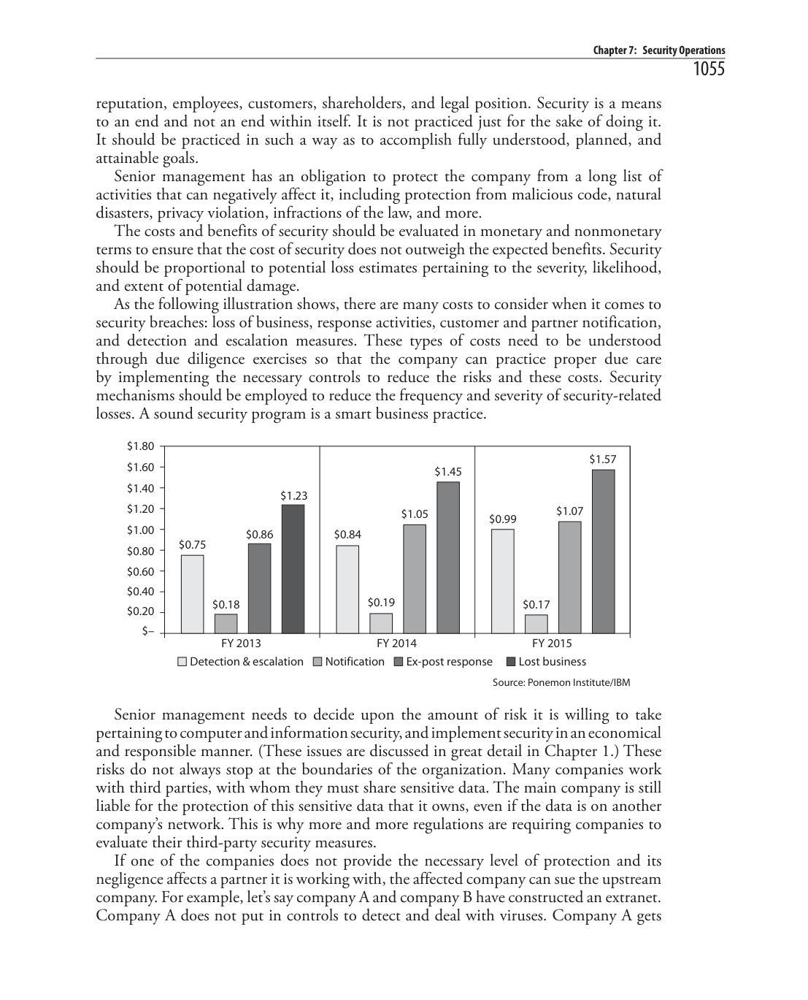
Diagram (p. 1089)
infected with a destructive virus and it is spread to company B through the extranet. The virus corrupts critical data and causes a massive disruption to company B’s production. Therefore, company B can sue company A for being negligent. Both companies need to make sure they are doing their part to ensure that their activities, or the lack of them, will not negatively affect another company, which is referred to asdownstream liability.
Responsibilitygenerally refers to the obligations and expected actions and behaviors of a particular party. An obligation may have a defined set of specific actions that are required, or a more general and open approach, which enables the party to decide how it will fulfill the particular obligation.Accountabilityrefers to the ability to hold a party responsible for certain actions or inaction. Each company has different requirements when it comes to its list of due care responsibilities. If these steps are not taken, the company may be charged with negligence if damage arises out of its failure to follow these steps. To prove negligence in court, the plaintiff must establish that the defendant had alegally recognized obligation, or duty, to protect the plaintiff from unreasonable risks and that the defendant’s failure to protect the plaintiff from an unreasonable risk (breach of duty) was theproximate causeof the plaintiff ’s damages. Penalties for negligence can be either civil or criminal, ranging from actions resulting in compensation for the plaintiff to jail time for violation of the law.
Proximate causeis an act or omission that naturally and directly produces a consequence. It is the superficial or obvious cause for an occurrence. It refers to a cause that leads directly, or in an unbroken sequence, to a particular result. It can be seen as an element of negligence in a court of law.
Liability Scenarios
The following are some sample scenarios in which a company could be held liable for negligence in its actions and responsibilities.
Personal Information
In this scenario, a company that holds medical information, Medical Information, Inc., does not have strict procedures on how patient information is disseminated or shared. A person pretending to be a physician calls Medical Information, Inc., and requests medical information on the patient Don Hammy. The receptionist does not question the caller and explains that Don Hammy has a brain tumor. A week later, Don Hammy does not receive the job he interviewed for and finds out that the employer called Medical Information, Inc., for his medical information. So what was improper about this activity and how would liability be determined? If and when this case went to court, the following items would be introduced and addressed:
Legally recognized obligation
- Medical Information, Inc., does not have policies and procedures in place to
- protect patient information.
The employer does not have the right to make this kind of call and is not able
- to use medical information against potential employees.
Failure to conform to the required standard
- Sensitive information was released to an unauthorized person by a Medical
- Information, Inc., employee.
The employer requested information it did not have a right to.
- Proximate causation and resulting injury or damage
- The information provided by Medical Information, Inc., caused Don Hammy
- great emotional distress and prevented him from obtaining a specific job.
The employer made its decision based on information it did not have a right
- to inquire about in the first place. The employer’s illegal acquisition and review of Don’s private medical information caused it to not hire him.
The outcome was a long legal battle, but Don Hammy ended up successfully suing both companies, recovered from his brain tumor, bought an island, and has never had to work again.
Hacker Intrusion
Suppose that a financial institution, Cheapo, Inc., buys the necessary middleware to enable it to offer online bank account transactions for its customers. It does not add any of the necessary security safeguards required for this type of transaction to take place securely over the Internet. Within the first two weeks of offering this service, 22 customers have their checking and savings accounts hacked into, with a combined loss of $439,344.09. What was improper about this activity and how would liability be determined? If and when this case went to court, the following items would be introduced and addressed:
Legally recognized obligation
- Cheapo, Inc., did not implement a firewall or IDS, harden the database holding
- the customer account information, or use encryption for customer transactions.
Cheapo, Inc., did not effectively protect its customers’ assets.
- Failure to conform to the required standard
- By not erecting the proper security policy and program and implementing the
- necessary security controls, Cheapo, Inc., broke 12 federal regulations used to govern financial institutions.
Proximate causation and resulting injury or damage
- The financial institution’s failure to practice due care and implement the basic
- requirements of online banking directly caused 22 clients to lose $439,344.09.
Eventually, a class action suit was brought against Cheapo, Inc., a majority of the customers got most of their money back, and the facility Cheapo, Inc., was using as a financial institution is now used to sell tacos. These scenarios are simplistic and described in a light-hearted manner, but failure to implement computer and information security properly can expose a company and its board of directors to litigation and legal punishment. In cases of serious misconduct, executives are not able to hide behind the legal concept of the corporation and are held accountable individually and personally. The board of directors can shirk its responsibilities to the stockholders, customers, and employees by not ensuring that due care is practiced and that the company is not being negligent in any way.
Third-Party Risk
Most organizations outsource more business functions than they realize, and that trend is only increasing. Through the use of cloud computing, Software as a Service (SaaS) in particular, organizations are increasingly turning to third-party service providers to maintain, manage, transmit, or store company-owned information resources to improve delivery of services, gain efficiencies, and reduce cost. Information security issues should be defined and assessed before engaging a third-party service provider to host or provide a service on behalf of the organization. To ensure that adequate security controls are in place prior to finalizing any contract agreement, the organization should conduct a thirdparty risk assessment for all services (applications, hosting, systems, etc.) that would involve the collection, processing, transmission, or storage of sensitive data or provide critical business functionality processing.
Contractual Agreements
While often overlooked, it is critical that information security issues are addressed in many of the contracts organizations use or enter into during regular business activities. Security considerations should be taken for at least the following contracts types:
Outsourcing agreements
- Hardware supply
- System maintenance and support
- System leasing agreements
- Consultancy service agreements
- Website development and support
- Nondisclosure and confidentiality agreements
- Information security management agreements
- Software development agreements
- Software licensing
- The organization must understand its regulatory and legal requirements pertaining to the items the previous contract list involves, and security requirements must be integrated properly in the contractual clauses. Contractual agreements not only need to be created in a manner that covers regulatory, legal, and security requirements, but also must be reviewed periodically to ensure that they are still relevant and provide the necessary level of protection.
Procurement and Vendor Processes
Before purchasing any product or service, the organization’s security requirements need to be fully understood so that they can be expressed and integrated into theprocurement process. Procurement is not just purchasing something, but includes the activities and processes involved with defining requirements, evaluating vendors, contract negotiation, purchasing, and receiving the needed solution. The acquisition of a solution (system, application, or service) often includes aRequest for Proposals(RFP), which is usually designed to get vendors to provide solutions to a business problem or requirement, bring structure to the procurement decision, and allow the risks and benefits of a solution to be identified clearly up-front. It is important that the RFP conveys the necessary security requirements and elicits meaningful and specific responses that describe how the vendor will meet those requirements. Federal and state legal requirements, regulation, and business contractual obligations must be thought through when constructing the requirements laid out in the RFPs. The initial security requirements can be used to formulate questions for the RFP. The answers to the RFP can be used to evaluate vendors and refine the security requirements. The evaluation and risk assessment of vendor finalists refine the security requirements that will, in turn, be added as language to the contract or statement of work. While procurement is an activity an organization carries out to properly identify, solicit, and select vendors for products and services,vendor managementis an activity that involves developing and monitoring vendor relationships after the contracts are in place. Since organizations are extremely dependent upon their vendors and outsourcing providers, if something slips up, operations will be affected, which always drains the bottom line (profit margin) and could put the company at risk. For example, suppose your cloud computing provider downgrades its data encryption strength (from AES-256 to 3DES with a 56-bit key) so that it can meet a wider range of client requirements, but fails to inform you about the change. Next time your organization goes through a PCI- DSS audit, it can be found out of compliance and your company could be fined. If your company pays a software development company to develop a specialized application, do you have a way to test the code to make sure it is providing the level of protection the developer is claiming? Or what if you set up a contract with a vendor to scan your external websites each week and you get busy with a million other things and six months down the line, the contractor just stops scanning and you are not informed. You assume it is being taken care of, but you do not have governing processes in place to make sure this is true.
Avendor management governingprocess needs to be set up, which includes performance metrics, SLAs, scheduled meetings, a reporting structure, and someone who is directly responsible. Your company is always responsible for its own risk. Just because it farms out some piece of its operations does not resolve it of this responsibility. The company needs to have a holistic program that defines procurement, contracting, vendor assessment, and monitoring to make sure things are continually healthy and secure.
Compliance
While it is important to knowwhatlaws and regulations your company needs to be compliant with, it is also important to knowhowto ensure that compliance is being met and how to properly convey that to the necessary stakeholders. A compliance program should be developed, which outlines what needs to be put into place to be compliant with the necessary internal and external drivers. Then, an audit team will assess how well the organization is meeting the identified requirements. The first step is to understand what laws and regulations your organization needs to be compliant with (SOX, HIPAA, PCI DSS, GLBA, FISMA, etc.). This will help determine the type of security framework that should be set up within the organization (ISO\ IEC 27001, COSO, Zachman). Then a risk methodology needs to be decided upon (ISO\IEC 27005, NIST 800-30, OCTAVE, AS/NZS 4360). The regulatory and legal requirements will help determine which control objective standard to follow (COBIT, NIST 800-53). Once these pieces are established and put into place, the auditors have stuff to audit. If the organization must be compliant with SOX and HIPAA, does it meet all the requirements of these regulations? If the organization set up its security program based upon the ISO\IEC 27001 standard, are all the pieces in place or are a third of them missing? If the organization chose to use the NIST 800-30 risk management standard, is it actually carrying it out properly? If the organization must comply with the NIST 800- 53 standard by implementing all the controls listed within the standard, are the controls in place and working properly?
Most of these items were covered in Chapter 1. The role of auditors and an audit committee were covered in Chapter 6.
Auditors can be internal or external to the organization. The auditors will have long checklists of items that correspond with the legal, regulatory, and policy requirements the organization must meet. Figure 7-22 shows a small portion of the audit checklists auditors follow when determining if an organization is compliant with the specifics of the PCI-DSS regulation. It is common for organizations to developgovernance, risk, and compliance (GRC) programs, which allow for the integration and alignment of the activities that take place in each one of these silos of a security program. If the samekey performance indicators (KPIs)are used in the GRC auditing activities, then the resulting reports can effectively
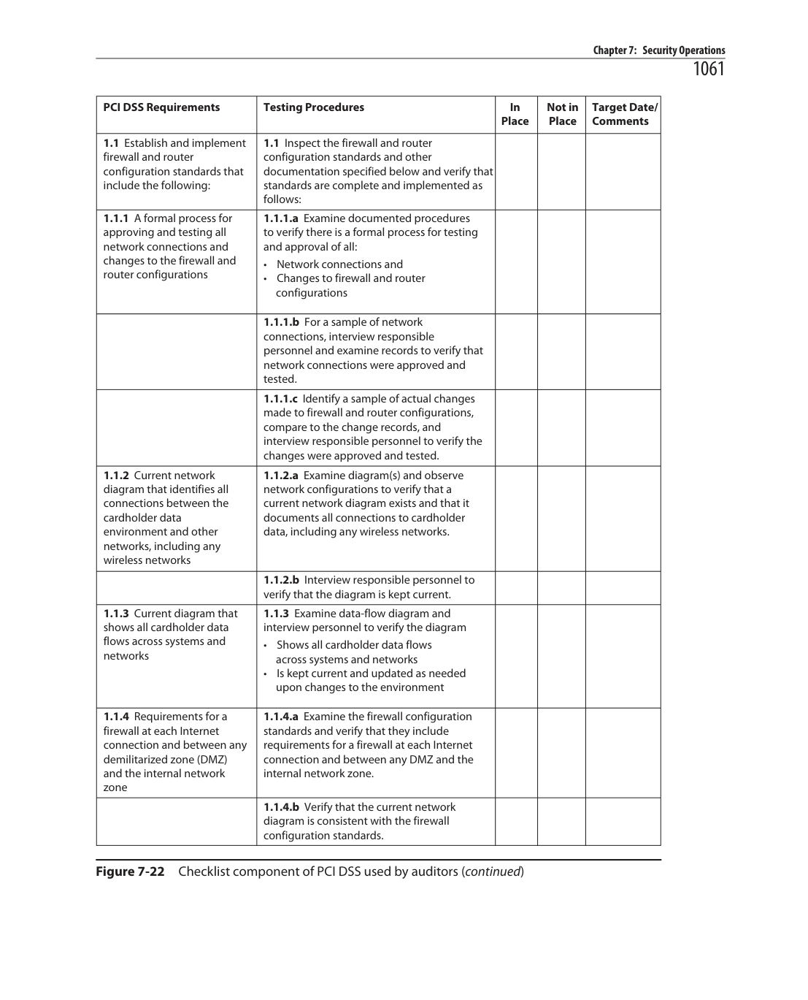
Figure 7-22Checklist component of PCI DSS used by auditors (continued)
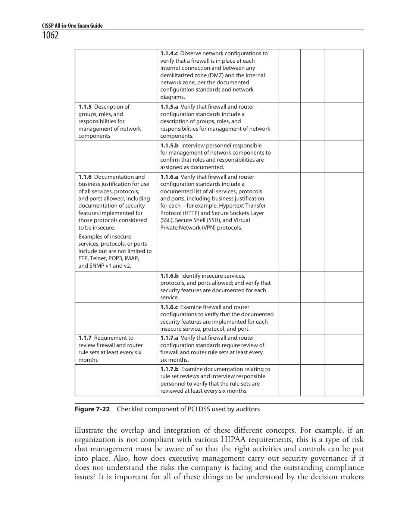
Figure 7-22Checklist component of PCI DSS used by auditors
illustrate the overlap and integration of these different concepts. For example, if an organization is not compliant with various HIPAA requirements, this is a type of risk that management must be aware of so that the right activities and controls can be put into place. Also, how does executive management carry out security governance if it does not understand the risks the company is facing and the outstanding compliance issues? It is important for all of these things to be understood by the decision makers
in a holistic manner so that they can make the best decisions pertaining to protecting the organization as a whole. The agreed-upon KPI values are commonly provided to executive management in dashboards or scorecard formats, which allow them to quickly understand the health of the organization from a GRC point of view.
Personal Safety Concerns
The single most valuable asset for an organization, and the one that involves the highest moral and ethical standards, is its people. Our safety focus in security operations will be on our own employees, but we also need to take proper steps to ensure the safety of visitors, clients, and anyone who enters into our physical or virtual spaces. While the scope of safety is broader than information systems security, there are important contributions that we as security professionals make to this effort.
EXAMP TIPHuman safety almost always trumps all other concerns. If an exam question has a possible answer that focuses on safety, it is likelier to be the right one.
A common tool for ensuring the safety of personnel during emergencies is the occupant emergency plan (OEP). The OEP describes the actions that facility occupants should take in order to ensure their safety during an emergency situation. This plan should address the range of emergencies from individual to facility-wide, and it should be integrated into the security operations of the organization. Perhaps the best example of the intersection of safety and security occurs in the area of physical access control. A well-designed system of physical access controls will constrain the movement of specific individuals in and out of certain spaces. For instance, we only want authorized persons to enter the server room. But what if the server room offers the best escape route for people who would normally not be allowed in it? While we would not design a facility in which this would be the case, we sometimes end up occupying less than ideal facilities. If this were the case, what process would we implement to ensure we can get people out of the building quickly and not force them to take a circuitous route that could put them in danger, but keeps them out of the sensitive area? Another example involves access for emergency responders. If a fire alarm is triggered in the building, how do we ensure we can evacuate all personnel while giving fire fighters access to all spaces (without requiring them to break down doors)? In this context, how do we simultaneously ensure the safety of our personnel while maintaining security of our information systems? Lastly, many modern physical access controls require electricity. If an electronic lock does not have a battery backup, will it automatically unlock in the absence of power or will it remain in the locked state? Afail-safe deviceis one that will automatically move to the state that ensures safety in the event of a failure such as loss of power. Failsafe controls, while critical to human safety, must be carefully considered because they introduce risks to the security of our information systems.
Summary
Security operations involve keeping up with implemented solutions, keeping track of changes, properly maintaining systems, continually enforcing necessary standards, and following through with security practices and tasks. It does not do much good for a company to develop a strong password policy if, after a few months, enforcement gets lax and users can use whatever passwords they want. It is similar to working out and staying physically fit. Just because someone lifts weights and jogs for a week does not mean he can spend the rest of the year eating jelly donuts and expect to stay physically fit. Security requires discipline day in and day out, sticking to a regimen, and practicing due care.
Quick Tips
Facilities that house systems that process sensitive information should have
- physical access controls to limit access to authorized personnel only.
Clipping levels should be implemented to establish a baseline of user activity and
- acceptable errors.
Separation of responsibilities and duties should be in place so that if fraud takes
- place, it requires collusion.
Access to resources should be limited to authorized personnel, applications, and
- services and should be audited for compliance to stated policies.
Change control and configuration management should be put in place so
- changes are approved, documented, tested, and properly implemented.
Activities that involve change management include requesting a change,
- approving a change, documenting a change, testing a change, implementing a change, and reporting to management.
Proper fault-tolerant mechanisms should be put in place to counter equipment
- failure.
Antivirus and IDS signatures should be updated on a continual basis.
- The key aspects of operational security include resource protection, change
- control, hardware and software controls, trusted system recovery, separation of duties, and least privilege.
Least privilege ensures that users, administrators, and others accessing a system
- have access only to the objects they absolutely require to complete their job.
The operations department is responsible for any unusual or unexplained
- occurrences, unscheduled initial program loads, and deviations from standards.
Standards need to be established that indicate the proper startup and shutdown
- sequence, error handling, and restoration procedures.
Some physical security controls may conflict with the safety of people. These
- issues need to be addressed; human life is always more important than protecting a facility or the assets it contains.
Proximity identification devices can be user-activated (action needs to be taken
- by a user) or system sensing (no action needs to be taken by the user).
A transponder is a proximity identification device that does not require action by
- the user. The reader transmits signals to the device, and the device responds with an access code.
Exterior fencing can be costly and unsightly, but can provide crowd control and
- help control access to the facility.
If interior partitions do not go all the way up to the true ceiling, an intruder
- canremove a ceiling tile and climb over the partition into a critical portion of thefacility.
Intrusion detection devices include motion detectors, CCTVs, vibration sensors,
- and electromechanical devices.
Intrusion detection devices can be penetrated, are expensive to install and
- monitor, require human response, and are subject to false alarms.
CCTV enables one person to monitor a large area, but should be coupled with
- alerting functions to ensure proper response.
Security guards are expensive but provide flexibility in response to security
- breaches and can deter intruders from attempting an attack.
A whitelist is a set of known-good resources such as IP addresses, domain names,
- or applications.
Patch management is the process for identifying, acquiring, installing, and
- verifying patches for products and systems.
Offsite backup locations can supply hot, warm, or cold sites.
- A reciprocal agreement is one in which a company promises another company it
- can move in and share space if it experiences a disaster, and vice versa. Reciprocal agreements are very tricky to implement and may be unenforceable. However, they offer a relatively cheap offsite option and are sometimes the only choice.
A hot site is fully configured with hardware, software, and environmental needs.
- It can usually be up and running in a matter of hours. It is the most expensive option, but some companies cannot be out of business longer than a day without very detrimental results.
A warm site does not have computers, but it does have some peripheral devices,
- such as disk drives, controllers, and tape drives. This option is less expensive than a hot site, but takes more effort and time to become operational.
A cold site is just a building with power, raised floors, and utilities. No devices
- are available. This is the cheapest of the three options, but can take weeks to get up and operational.
Recovery time objective (RTO) is the maximum time period within which a
- business process must be restored to a designated service level after a disaster to avoid unacceptable consequences.
Recovery point objective (RPO) is the acceptable amount of data loss measured
- in time.
Mean time between failures (MTBF) is the predicted amount of time between
- inherent failures of a system during operation.
Mean time to repair (MTTR) is the estimated amount of time it will take to get a
- device fixed and back into production after its failure.
High availability refers to a system, component, or environment that is
- continuously operational.
High availability for disaster-recovery needs is often a combination of
- technologies and processes that include backups, redundancy, fault tolerance, clustering, and load balancing.
Data recovery and restoration are often carried out through vaulting, backups,
- and replication technologies.
When returning to the original site after a disaster, the least critical organizational
- units should go back first.
COOP focuses on restoring an organization’s (usually a headquarters element)
- essential functions at an alternate site and performing those functions for up to 30 days before returning to normal operations. This term is commonly used by the U.S. government to denote BCP.
An important part of the business continuity plan is to communicate its
- requirements and procedures to all employees.
Business interruption insurance covers the loss of income that an organization
- suffers after a disaster while it is in its recovery stage.
If a company does not practice due care in its efforts to protect itself from
- computer crime, it can be found to be negligent and legally liable for damages.
Elements of negligence include not fulfilling a legally recognized obligation,
- failure to conform to a standard of care that results in injury or damage, and proximate causation.
The primary reason for the chain of custody of evidence is to ensure that it will
- be admissible in court by showing it was properly controlled and handled before being presented in court.
To be admissible in court, business records have to be made and collected in the
- normal course of business, not specially generated for a case in court. Business records can easily be hearsay if there is no firsthand proof of their accuracy and reliability.
The life cycle of evidence includes the identification and collection of the
- evidence, and its storage, preservation, transportation, presentation in court, and return to the owner.
Collection of computer evidence is a very complex and detail-oriented task. Only
- skilled people should attempt it; otherwise, evidence can be ruined forever.
When looking for suspects, it is important to consider the motive, opportunity,
- and means (MOM).
For evidence to be admissible in court, it needs to be relevant, complete,
- sufficient, and reliable to the case at hand.
Evidence must be legally permissible, meaning it was seized legally and the chain
- of custody was not broken.
Questions
Please remember that these questions are formatted and asked in a certain way for a reason. Keep in mind that the CISSP exam is asking questions at a conceptual level. Questions may not always have the perfect answer, and the candidate is advised against always looking for the perfect answer. Instead, the candidate should look for the best answer in the list.
1.What is the difference between due care and due diligence? A.Due care is the continual effort to ensure that the right thing takes place, and due diligence is the continual effort to stay compliant with regulations. B.Due care is based on the prudent person concept, whereas due diligence is not. C.They mean the same thing. D.Due diligence involves investigating the risks, whereas due care involves carrying out the necessary steps to mitigate these risks. 2.Why should employers make sure employees take their vacations? A.They have a legal obligation. B.It is part of due diligence. C.It is a way for fraud to be uncovered. D.To ensure the employee does not get burnt out. 3.Which of the following best describes separation of duties and job rotation? A.Separation of duties ensures that more than one employee knows how to perform the tasks of a position, and job rotation ensures that one person cannot perform a high-risk task alone. B.Separation of duties ensures that one person cannot perform a high-risk task alone, and job rotation can uncover fraud and ensure that more than one person knows the tasks of a position. C.They are the same thing, but with different titles. D.They are administrative controls that enforce access control and protect the company’s resources.
4.If a programmer is restricted from updating and modifying production code, what is this an example of? A.Rotation of duties B.Due diligence C.Separation of duties D.Controlling input values 5.Why is it important to control and audit input and output values? A.Incorrect values can cause mistakes in data processing and be evidence offraud. B.Incorrect values can be the fault of the programmer and do not comply with the due care clause. C.Incorrect values can be caused by brute-force attacks. D.Incorrect values are not security issues. 6.What is the difference between least privilege and need to know? A.A user should have least privilege that restricts her need to know. B.A user should have a security clearance to access resources, a need to knowabout those resources, and least privilege to give her full control of allresources. C.A user should have a need to know to access particular resources, and least privilege should be implemented to ensure she only accesses the resources she has a need to know. D.They are two different terms for the same issue. 7.Which of the following would not require updated documentation? A.An antivirus signature update B.Reconfiguration of a server C.A change in security policy D.The installation of a patch to a production server 8.A company needs to implement a CCTV system that will monitor a large areaoutside the facility. Which of the following is the correct lens combination for this? A.A wide-angle lens and a small lens opening B.A wide-angle lens and a large lens opening C.A wide-angle lens and a large lens opening with a small focal length D.A wide-angle lens and a large lens opening with a large focal length
9.Which of the following is not a true statement about CCTV lenses? A.Lenses that have a manual iris should be used in outside monitoring. B.Zoom lenses will carry out focus functionality automatically. C.Depth of field increases as the size of the lens opening decreases. D.Depth of field increases as the focal length of the lens decreases. 10.What is true about a transponder? A.It is a card that can be read without sliding it through a card reader. B.It is a biometric proximity device. C.It is a card that a user swipes through a card reader to gain access to a facility. D.It exchanges tokens with an authentication server. 11.When is a security guard the best choice for a physical access control mechanism? A.When discriminating judgment is required B.When intrusion detection is required C.When the security budget is low D.When access controls are in place 12.Which of the following is not a characteristic of an electrostatic intrusion detection system? A.It creates an electrostatic field and monitors for a capacitance change. B.It can be used as an intrusion detection system for large areas. C.It produces a balance between the electric capacitance and inductance of anobject. D.It can detect if an intruder comes within a certain range of an object. 13.What is a common problem with vibration-detection devices used for perimeter security? A.They can be defeated by emitting the right electrical signals in the protected area. B.The power source is easily disabled. C.They cause false alarms. D.They interfere with computing devices. 14.Which of the following is not considered a delaying mechanism? A.Locks B.Defense-in-depth measures C.Warning signs D.Access controls
15.What are the two general types of proximity identification devices? A.Biometric devices and access control devices B.Swipe card devices and passive devices C.Preset code devices and wireless devices D.User-activated devices and system sensing devices 16.Which is not a drawback to installing intrusion detection and monitoring systems? A.It’s expensive to install. B.It cannot be penetrated. C.It requires human response. D.It’s subject to false alarms. 17.What is a cipher lock? A.A lock that uses cryptographic keys B.A lock that uses a type of key that cannot be reproduced C.A lock that uses a token and perimeter reader D.A lock that uses a keypad 18.If a cipher lock has a door delay option, what does that mean? A.After a door is open for a specific period, the alarm goes off. B.It can only be opened during emergency situations. C.It has a hostage alarm capability. D.It has supervisory override capability. 19.Which of the following best describes the difference between a warded lock and atumbler lock? A.A tumbler lock is more simplistic and easier to circumvent than a warded lock. B.A tumbler lock uses an internal bolt, and a warded lock uses internal cylinders. C.A tumbler lock has more components than a warded lock. D.A warded lock is mainly used externally, and a tumbler lock is used internally. 20.All of the following are best practices for controlling the software that is installed and authorized to run in our systemsexceptwhich? A.Application whitelisting B.Code reviews C.Gold Masters D.Least privilege
21.You come across an advanced piece of polymorphic malware that uses a custom communications protocol for network traffic. This protocol has a distinctive signature in its header. Which tool is best suited to mitigate this malware by preventing the packets from traversing the network? A.Antimalware B.Stateful firewall C.Intrusion detection system (IDS) D.Intrusion prevention system (IPS) 22.Which best describes a hot-site facility versus a warmor cold-site facility? A.A site that has disk drives, controllers, and tape drives B.A site that has all necessary PCs, servers, and telecommunications C.A site that has wiring, central air-conditioning, and raised flooring D.A mobile site that can be brought to the company’s parking lot 23.Which is the best description of remote journaling? A.Backing up bulk data to an offsite facility B.Backing up transaction logs to an offsite facility C.Capturing and saving transactions to two mirrored servers in-house D.Capturing and saving transactions to different media types 24.Which of the following is something that should be required of an offsite backup facility that stores backed-up media for companies? A.The facility should be within 10 to 15 minutes of the original facility to ensure easy access. B.The facility should contain all necessary PCs and servers and should have raised flooring. C.The facility should be protected by an armed guard. D.The facility should protect against unauthorized access and entry. 25.Which of the following does not describe a reciprocal agreement? A.The agreement is enforceable. B.It is a cheap solution. C.It may be able to be implemented right after a disaster. D.It could overwhelm a current data processing site. 26.Which of the following describes a cold site? A.Fully equipped and operational in a few hours B.Partially equipped with data processing equipment C.Expensive and fully configured D.Provides environmental measures but no equipment
27.After a computer forensic investigator seizes a computer during a crime investigation, what is the next step? A.Label and put it into a container, and then label the container B.Dust the evidence for fingerprints C.Make an image copy of the disks D.Lock the evidence in the safe 28.Which of the following is a necessary characteristic of evidence for it to beadmissible? A.It must be real. B.It must be noteworthy. C.It must be reliable. D.It must be important. 29.If a company deliberately planted a flaw in one of its systems in the hope of detecting an attempted penetration and exploitation of this flaw, what would this be called? A.Incident recovery response B.Entrapment C.Illegal D.Enticement
Answers
1.D.Due care and due diligence are legal terms that do not just pertain to security. Due diligence involves going through the necessary steps to know what a company’s or individual’s actual risks are, whereas due care involves carrying out responsible actions to reduce those risks. These concepts correspond with the “prudent person” concept. 2.C.Many times, employees who are carrying out fraudulent activities do not take the vacation they have earned because they do not want anyone to find out what they have been doing. Forcing employees to take vacations means that someone else has to do that person’s job and can possibly uncover any misdeeds. 3.B.Rotation of duties enables a company to have more than one person trained in a position and can uncover fraudulent activities. Separation of duties is put into place to ensure that one entity cannot carry out a critical task alone. 4.C.This is just one of several examples of separation of duties. A system must be set up for proper code maintenance to take place when necessary, instead of allowing a programmer to make changes arbitrarily. These types of changes should go through a change control process and should have more entities involved than just one programmer.
5.A.There should be controls in place to make sure the data input into a system and the results generated are in the proper format and have expected values. Improper data being put into an application or system could cause bad output and security issues, such as buffer overflows. 6.C.Users should be able to access only the resources they need to fulfill the duties of their positions. They also should only have the level of permissions and rights for those resources that are required to carry out the exact operations they need for their jobs, and no more. This second concept is more granular than the first, but they have a symbiotic relationship. 7.A.Documentation is very important for data processing and networked environments. This task often gets pushed to the back burner or is totally ignored. If things are not properly documented, employees will forget what actually took place with each device. If the environment needs to be rebuilt, for example, it may be done incorrectly if the procedure was poorly or improperly documented. When new changes need to be implemented, the current infrastructure may not be totally understood. Continually documenting when virus signatures are updated would be overkill. The other answers contain events that certainly require documentation. 8.A.The depth of field refers to the portion of the environment that is in focus when shown on the monitor. The depth of field varies depending upon the size of the lens opening, the distance of the object being focused on, and the focal length of the lens. The depth of field increases as the size of the lens opening decreases, the subject distance increases, or the focal length of the lens decreases. So if you want to cover a large area and not focus on specific items, it is best to use a wideangle lens and a small lens opening. 9.A.Manual iris lenses have a ring around the CCTV lens that can be manually turned and controlled. A lens that has a manual iris would be used in an area that has fixed lighting, since the iris cannot self-adjust to changes of light. An auto iris lens should be used in environments where the light changes, such as an outdoor setting. As the environment brightens, this is sensed by the iris, which automatically adjusts itself. Security personnel will configure the CCTV to have a specific fixed exposure value, which the iris is responsible for maintaining. The other answers are true. 10.A.A transponder is a type of physical access control device that does not require the user to slide a card through a reader. The reader and card communicate directly. The card and reader have a receiver, transmitter, and battery. The reader sends signals to the card to request information. The card sends the reader an access code. 11.A.Although many effective physical security mechanisms are on the market today, none can look at a situation, make a judgment about it, and decide what the next step should be. A security guard is employed when a company needs to have a countermeasure that can think and make decisions in different scenarios.
12.B.An electrostatic IDS creates an electrostatic field, which is just an electric field associated with static electric charges. The IDS creates a balanced electrostatic field between itself and the object being monitored. If an intruder comes within a certain range of the monitored object, there is capacitance change. The IDS can detect this change and sound an alarm. 13.C.This type of system is sensitive to sounds and vibrations and detects the changes in the noise level of an area it is placed within. This level of sensitivity can cause many false alarms. These devices do not emit any waves; they only listen for sounds within an area and are considered passive devices. 14.C.Every physical security program should have delaying mechanisms, which have the purpose of slowing down an intruder so security personnel can be alerted and arrive at the scene. A warning sign is a deterrence control, not a delaying control. 15.D.A user-activated device requires the user to do something: swipe the card through the reader and/or enter a code. A system sensing device recognizes the presence of the card and communicates with it without the user needing to carry out any activity. 16.B.Monitoring and intrusion detection systems are expensive, require someone to respond when they set off an alarm, and, because of their level of sensitivity, can cause several false alarms. Like any other type of technology or device, they have their own vulnerabilities that can be exploited and penetrated. 17.D.Cipher locks, also known as programmable locks, use keypads to control access into an area or facility. The lock can require a swipe card and a specific combination that’s entered into the keypad. 18.A.A security guard would want to be alerted when a door has been open for an extended period. It may be an indication that something is taking place other than a person entering or exiting the door. A security system can have a threshold set so that if the door is open past the defined time period, an alarm sounds. 19.C.The tumbler lock has more pieces and parts than a warded lock. The key fits into a cylinder, which raises the lock metal pieces to the correct height so the bolt can slide to the locked or unlocked position. A warded lock is easier to circumvent than a tumbler lock. 20.B.Code reviews are focused on finding and fixing defects in software that is undergoing development. It is not helpful in controlling which applications run on our computers. 21.D.The intrusion prevention system is the best answer because these systems can stop packets containing specific signatures. Although some antimalware software might be able to this also, this functionality is not a universal feature in this sort of solution. 22.B.A hot site is a facility that is fully equipped and properly configured so that it can be up and running within hours to get a company back into production. Answer B gives the best definition of a fully functional environment.
23.B.Remote journaling is a technology used to transmit data to an offsite facility, but this usually only includes moving the journal or transaction logs to the offsite facility, not the actual files. 24.D.This question addresses a facility that is used to store backed-up data; it is not talking about an offsite facility used for disaster recovery purposes. The facility should not be only 10 to 15 minutes away, because some types of disasters could destroy both the company’s main facility and this facility if they are that close together, in which case the company would lose all of its information. The facility should have the same security standards as the company’s security, including protection against unauthorized access. 25.A.A reciprocal agreement is not enforceable, meaning that the company that agreed to let the damaged company work out of its facility can decide not to allow this to take place. A reciprocal agreement is a better secondary backup option if the original plan falls through. 26.D.A cold site only provides environmental measures—wiring, air conditioning, raised floors—basically a shell of a building and no more. 27.C.Several steps need to be followed when gathering and extracting evidence from a scene. Once a computer has been confiscated, the first thing the computer forensics team should do is make an image of the hard drive. The team will work from this image instead of the original hard drive so that the original stays in a pristine state and the evidence on the drive is not accidentally corrupted or modified. 28.C.For evidence to be admissible, it must be relevant, complete, sufficient, and reliable to the case. For evidence to be reliable, it must be consistent with fact and must not be based on opinion or be circumstantial. 29.D.Companies need to be very careful about the items they use to entice intruders and attackers, because this may be seen as entrapment by the court. It is best to get the legal department involved before implementing these items. Putting a honeypot in place is usually seen as the use of enticement tools.